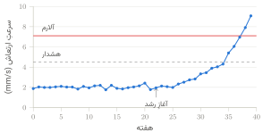
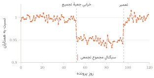
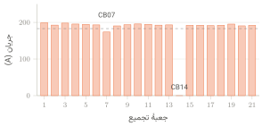
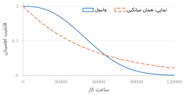
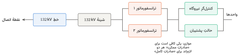
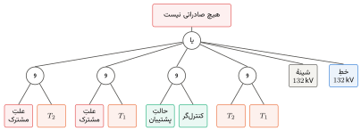
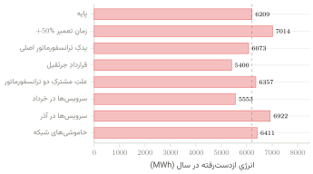
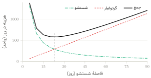

52 نگهداری و عیبیابی
52.1 نقشهٔ فصل
پس از این فصل، خواننده میتواند:
- برای هر ردهٔ دارایی راهبردِ نگهداری را از پیامد و الگوی خرابی انتخاب کند و بارِ کارِ پیشگیرانه و اصلاحی را با گروهِ نگهداری بسنجد.
- نگهداریِ زیرسامانهها را با نشانههای وضعیت برنامهریزی کند: نمونهٔ رشتههای فتوولتائیک، ارتعاش و روغنِ جعبهدنده، چاهکِ گرماییِ مبدّل، گازهای ترانسفورماتور، سایشِ کلید، ظرفیتِ باتری، حسگرها و فیبر.
- یک خرابی را با زنجیرهٔ شاهد تشخیص دهد: رخدادها روی یک پایهٔ زمانی، اختیارِ جداسازی، علتِ ریشهای، پذیرشِ پس از تعمیر و جلوگیری از تکرار.
- یک افتِ تولیدِ بیتوضیح را از کیفیتِ داده تا تعمیرِ پذیرفتهشده دنبال کند.
- مدلهای قابلیتِ اطمینان، دسترسپذیری و نگهداشتپذیری را با فرضهایشان به کار برد: نمایی و وایبول، فاصلهٔ اطمینانِ نرخ، نمودارِ بلوکی، درختِ خطا، علتِ مشترک و سامانهٔ m از n.
- پروندهٔ قابلیتِ اطمینانِ نیروگاهِ P را درونِ یک مرزِ روشن بسازد و دسترسپذیریِ انرژیایی و حساسیتِ آن را به زمانِ تعمیر، یدک، علتِ مشترک و ماهِ کارِ برنامهریزیشده بسنجد.
- نگهداریِ وابسته به آب، داراییهای جمعآوری و صادرات، و جریانِ دادهٔ سامانهٔ مدیریتِ نگهداری را طراحی و وارسی کند.
پیشنیازها: آمار و قابلیتِ اطمینان (فصل 3)، پایشِ عملکرد (فصل 37) و بهرهبرداری (فصل 51).
- اگر میانگینِ زمانِ میانِ خرابیهای یک مبدّل 17,520 ساعت باشد، آیا مبدّل دو سال کار میکند؟
- دو سرورِ موازی هر کدام 0.5 % از دسترس خارجاند. چرا جفتشان شاید بسیار بدتر از 0.0025 % باشد؟
- چرا یک جعبهٔ تجمیعِ خاموش ممکن است هفتهها دیده نشود؟
- دستورِ کارِ بیکدِ خرابی چه چیزی را از دست میدهد؟
پاسخها: (۱) نه، میگوید ده مبدّل حدودِ پنج خرابی در سال دارند؛ (۲) چون بخشی از خرابیها علتِ مشترک دارند؛ (۳) چون اثرش در کلِ نیروگاه کوچک است و تا کسی بلوک را با همتایانش مقایسه نکند پیدا نمیشود؛ (۴) شمارشِ خرابیها، تکرارها و ادعای ضمانت را. اگر دو پرسش یا بیشتر را نتوانستید، بخش 37.6، بخش 37.3 و بخش 51.14 را مرور کنید.
جایگاهِ این فصل در نیروگاهِ P. فصلِ ۵۱ سالِ نخستِ بهرهبرداری را با سابقههایش دنبال کرد و نشان داد انتظار برای قطعه و دسترسی بیشترِ زمانِ ازکارافتادگی است، و دستورهای کارِ ناقص به تحلیلِ قابلیتِ اطمینان نمیرسند. این فصل نظامِ نگهداری و پروندهٔ قابلیتِ اطمینانِ همان نیروگاه را میسازد (A-530 تا A-537). نرخهای خرابی از فصلِ ۱۸ (A-288) و سابقهها از فصلهای ۳۷ و ۵۱ میآیند، و نتیجه مبنای D-056 است.
دادهها ساختگی و نرخها آموزشیاند. این فصل تشخیص را با سابقه و شاهد آموزش میدهد، نه روشِ کار روی تجهیزِ برقدار یا مقدارِ ولتاژِ آزمون. هر جداسازی و آزمون با مجوزِ کار و به دستِ فردِ مجاز و آزمایندهٔ صلاحیتدار است (بخش 32.2.4، بخش 50.2). ادعای سازنده دربارهٔ قابلیتِ اطمینان تا راستیآزمایی ادعاست. تفسیرِ گازهای حلشده و دیگر آزمونهای تخصصی با متخصص است.
52.2 الف. راهبردِ نگهداری
نگهداری سه شکل دارد. نگهداریِ پیشگیرانه کار را به تقویم یا ساعتِ کار میبندد: هر شش ماه صافی، هر سال سرویس. نگهداریِ وضعیتمحور (یا پیشبینانه) کار را به نشانهای از وضعیت میبندد: ارتعاش، روغن، دما، گاز. نگهداریِ اصلاحی پس از خرابی میآید. گزینهٔ چهارمی هم هست که آگاهانه انتخاب میشود: کار تا خرابی، با یدکی روی قفسه. راهبرد برای هر ردهٔ دارایی از دو پرسش میآید: خرابی چه پیامدی دارد و چگونه رخ میدهد. سپس کار با گروه، یدک، پیمانکار و اولویت سنجیده میشود.
52.2.1 بارِ کار در برابرِ گروه
ایده. ساعتهای کارِ پیشگیرانه از فهرستِ کارها میآید: شمارِ واحد × ساعتِ هر بار × شمارِ بار در سال. ساعتهای اصلاحی از نرخِ خرابی × میانگینِ زمانِ تعمیر. جمعِ این دو با ساعتهای دستیِ گروه، پس از کسرِ رفتوآمد و مجوز و سابقه، مقایسه میشود.
maintenance work of a year against the crew (hands-on hours)
preventive (task list): 4,683 h; corrective (rate x MTTR): 851 h
crew: 10 x 1,804 h x (1 - 0.35 travel, permits, records) = 11,726 h
load 47% of the crew: it fits, with the rest for improvement work
the turbine services are bought from the maker (ch 39 service
agreement) and are not in the crew's hoursمثال 52.1 (نیمی از گروه برای کارِ برنامهریزیشده) پرسش. کارِ نگهداریِ یک سال چه سهمی از توانِ گروه است؟
پاسخ. 4,683 ساعتِ پیشگیرانه و 851 ساعتِ اصلاحی در برابرِ 11,726 ساعتِ دستیِ ده تکنسین: 47 %.
بررسیِ معقولبودن. ساعتهای هر نفر همان 1,804 ساعتِ فصلِ ۵۱ است (مثال 51.7). سرویسِ سالانهٔ توربینها را سازنده انجام میدهد و در این ساعتها نیست.
تفسیر. کار جا میشود و باقیمانده برای کارِ بهبود است. ولی ساعتهای اصلاحی با نرخهای آموزشی حساب شدهاند. اگر نرخهای واقعی دو برابر باشند، باقیمانده بهسرعت کوچک میشود. پس این حساب هر سال با دستورهای کارِ واقعی تکرار میشود (بخش 52.10).
52.2.2 راهبرد برای هر رده
ایده. یک قاعدهٔ آغازین: پیامدِ ۴ و ۵، پایشِ وضعیت و تعمیرِ اساسیِ برنامهریزیشده؛ خرابیهای پرشمار و ارزان، کار تا خرابی با یدک؛ انتظارِ طولانی برای قطعه، یدکِ بحرانی؛ بقیه، پیشگیرانهٔ زمانی.
a strategy for each class from consequence and failures a year (teaching rule)
PV inverter preventive (time-based)
PV unit transformer preventive + critical spare
PV combiner box run to failure, spares on the shelf
wind turbine (minor) run to failure, spares on the shelf
wind turbine (major) condition-based + planned overhaul
BESS PCS preventive (time-based)
BESS container preventive (time-based)
main transformer condition-based + planned overhaul
132 kV line (permanent fault) condition-based + planned overhaul
33 kV collector cable (per km) preventive (time-based)
PPC condition-based + planned overhaul
consequence 4-5: watch the condition and plan the overhaul;
frequent, cheap failures: let them fail, keep the part; long
waits for parts: buy the spare - the rule is a start, each
line is then checked against the class's failure patternمثال 52.2 (قاعدهای که آغاز است، نه پایان) پرسش. چند رده نگهداریِ وضعیتمحور میگیرند؟
پاسخ. چهار رده: قطعههای اصلیِ توربین، ترانسفورماتورِ اصلی، خطِ 132 kV و کنترلگرِ نیروگاه.
تفسیر. قاعده فقط آغاز است. هر سطر سپس با الگوی خرابیِ ردهٔ خودش وارسی میشود. نگهداریِ زمانی فقط وقتی سود دارد که خرابی با سن بیشتر شود (بخش 52.6.1). برای خرابیِ تصادفی، تعویضِ زودهنگام فقط قطعهٔ سالم را دور میاندازد.
52.2.3 سه دسترسپذیری
ایده. دسترسپذیریِ ذاتی فقط تعمیرِ فعال را میشمارد. دسترسپذیریِ حاصل کارِ پیشگیرانه را هم میافزاید. دسترسپذیریِ عملیاتی انتظار برای قطعه، آدم و مجوز را هم میشمارد:
\[ A_\text{i} = \frac{\text{MTBF}}{\text{MTBF} + \text{MTTR}}, \qquad A_\text{o} = \frac{\text{MTBM}}{\text{MTBM} + \text{MDT}} \tag{52.1}\]
که در آن MTBM میانگینِ زمانِ میانِ نگهداریها (اصلاحی و پیشگیرانه) و MDT میانگینِ زمانِ ازکارافتادگی با تأخیرِ پشتیبانی است.
def a_inherent(mtbf: float, mttr: float) -> float:
"""Corrective repair only: MTBF / (MTBF + MTTR)."""
return mtbf / (mtbf + mttr)
def a_achieved(mtbm: float, m_active: float) -> float:
"""Preventive and corrective active maintenance, no delays."""
return mtbm / (mtbm + m_active)
def a_operational(mtbm: float, mdt: float) -> float:
"""All down time: active work plus logistics and admin delays."""
return mtbm / (mtbm + mdt)availability of one unit of each class: inherent (repair only), achieved
(+ preventive work), operational (+ waiting for parts and people)
class inherent achieved operational
PV inverter 0.9986 0.9968 0.9941
PV unit transformer 0.9999 0.9990 0.9974
PV combiner box 1.0000 0.9999 0.9997
wind turbine (minor) 0.9966 0.9966 0.9920
wind turbine (major) 0.9984 0.9984 0.9901
BESS PCS 0.9986 0.9973 0.9945
BESS container 0.9992 0.9974 0.9957
main transformer 0.9997 0.9970 0.9923
132 kV line (permanent fault) 0.9990 0.9972 0.9972
33 kV collector cable (per km) 0.9999 0.9999 0.9999
PPC 1.0000 0.9995 0.9995
lowest operational: wind turbine (major); the gap between achieved and
operational is waiting - the part of availability that
spares, access and permits decide (ch 51 round s: 61 %)مثال 52.3 (فاصلهای که انتظار است) پرسش. برای مبدّلِ فتوولتائیک سه دسترسپذیری چقدرند؟
پاسخ. ذاتی 0.9986، حاصل 0.9968 و عملیاتی 0.9941. کمترین عملیاتی از آنِ خرابیهای اساسیِ توربین است: 0.9901.
تفسیر. فاصلهٔ حاصل تا عملیاتی انتظار است: بخشی از دسترسپذیری که یدک، دسترسی و مجوز تعیین میکنند. فصلِ ۵۱ همین را در سابقهها دید: 61 % زمانِ ازکارافتادگی انتظار بود (مثال 51.14).
52.2.4 اولویتِ درخواستهای کار
ایده. هر درخواستِ کار با پیامد × فوریت (هر کدام ۱ تا ۵) رتبه میگیرد و تساوی با پیامد شکسته میشود.
work requests ranked by consequence x urgency (ties by consequence)
1. BESS-A container 2 HVAC fault 4 x 5 = 20
2. T03 converter trips on dips 4 x 4 = 16
3. SST fan alarm (inhibited 76 days) 3 x 4 = 12
4. PV fence gap near the road 3 x 3 = 9
5. inverter fan noisy PVF2-3 2 x 3 = 6
6. road grading after rain 2 x 2 = 4
7. string fuses open PVF2-3 CB14 2 x 1 = 2
8. office air-conditioning 1 x 2 = 2
the battery HVAC fault and the converter come first; the
open string fuse ranks low on consequence - but lesson D
shows what one open fuse can hide, so 'low' still gets a
date, not a place at the end of the queueمثال 52.4 (پایین در صف، ولی با تاریخ) پرسش. کدام درخواستها نخست میآیند و کدام آخر؟
پاسخ. خرابیِ سرمایشِ کانتینرِ ۲ باتری با ۲۰ و قطعِ مبدّلِ T03 در افتهای ولتاژ با ۱۶. فیوزهای بازِ CB14 و سرمایشِ دفتر هر کدام ۲ امتیاز دارند.
تفسیر. فیوزهای باز در پیامد پاییناند. ولی بخشِ «ت» نشان میدهد یک فیوزِ باز چه چیزی را میتواند پنهان کند. پس «پایین» هم تاریخ میگیرد، نه جایی در تهِ صف.
52.2.5 خودی یا پیمانکار
HV switching and testing work: 1,200 h a year (teaching rates)
in-house 92,000 u (response 2 h); contractor 102,000 u (response 24 h)
break-even at 950 h a year: in-house is cheaper above it
money is half the question: a 24-hour response on a trip of
a feeder costs energy every time - the price of that energy
goes into the comparison too (lesson F)مثال 52.5 (نقطهٔ سربهسر و زمانِ پاسخ) پرسش. در چند ساعت کار در سال، گروهِ خودی ارزانتر است؟
پاسخ. بالای \(38\,000/(85 - 45) = 950\) ساعت. با 1,200 ساعت، گروهِ خودی 92,000 و پیمانکار 102,000 واحد.
تفسیر. پول نیمی از پرسش است. پاسخِ ۲۴ساعته به قطعِ یک فیدر هر بار انرژی میبرد. بهای آن انرژی هم در مقایسه میآید (بخش 52.7).
52.2.6 یدک با توزیعِ پواسون
ایده. اگر خرابیها با نرخِ ثابت بیایند، شمارِ نیاز در زمانِ تحویلِ قطعه پواسونی است با میانگینِ \(m = \lambda\, n\, T_\text{lead}\). کوچکترین موجودیِ \(s\) که \(P(N \le s)\) را به هدف برساند، یدکِ لازم است.
def spares_needed(rate_per_h: float, lead_h: float, target: float) -> int:
"""Smallest stock s with P(demand in the lead time <= s) >= target."""
m = rate_per_h * lead_h
s, p, term = 0, math.exp(-m), math.exp(-m)
while p < target:
s += 1
term *= m / s
p += term
return sspares to cover the lead time with 90% confidence (Poisson demand)
class demand in lead time spares
PV inverter 0.82 2
BESS PCS 0.49 1
PV unit transformer 0.10 0
main transformer 0.02 0
the unit and main transformers need none at 90 %, while the
strategy rule above asks for a critical unit-transformer
spare: one failure without a spare costs months of a block
(or of half the export, lesson F) - a rule on confidence alone
misses the consequence, so the big spares are decided on
expected loss, not on Poissonمثال 52.6 (یدکی که پواسون نمیخواهد و پیامد میخواهد) پرسش. با اطمینانِ ۹۰ درصد چند یدک لازم است؟
پاسخ. دو مبدّل (میانگینِ نیاز 0.82)، یک مبدّلِ باتری و هیچ ترانسفورماتور.
تفسیر. ترانسفورماتورهای واحد و اصلی در ۹۰ درصد یدک نمیخواهند، ولی قاعدهٔ راهبرد برای ترانسفورماتورِ واحد یدکِ بحرانی خواست. یک خرابیِ بییدک ماهها یک بلوک یا نیمی از صادرات را میگیرد. قاعدهٔ اطمینان پیامد را نمیبیند. یدکهای بزرگ با زیانِ مورد انتظار تصمیم گرفته میشوند (بخش 52.7.4).
52.2.7 شاخصهای نگهداری و کارِ عقبمانده
ایده. چند شاخص نظامِ نگهداری را میسنجند: سهمِ کارهای پیشگیرانهٔ بهموقع، سهمِ کارِ اصلاحی، و کارِ عقبمانده بر حسبِ هفتههای گروه. هر شاخص هدفِ آموزشیِ خودش را دارد.
maintenance indicators for a quarter (teaching targets in brackets)
PM done on time 88% [90 %]; corrective share of orders 18% [<20 %]
backlog 1,240 h = 5.5 crew-weeks at 225 h a week [2-4]
backlog above the band and PM on time below target:
work is late and piling up; the late PM tasks are the ones
that wait for an outage window (ch 51) - the cause is in the
plan, and a crew with spare hours (lesson A) cannot fix itمثال 52.7 (گروهی که وقت دارد و کاری که دیر است) پرسش. کدام شاخصها بیرون از هدفاند و علت کجاست؟
پاسخ. کارِ عقبمانده 5.5 هفتهٔ گروه، بالای بازهٔ ۲ تا ۴، و کارِ پیشگیرانهٔ بهموقع 88 % در برابرِ ۹۰. سهمِ اصلاحی 18 % درونِ هدف است.
تفسیر. کارِ پیشگیرانهٔ دیرکرده همان است که منتظرِ پنجرهٔ خاموشی میماند (مثال 51.72). علت در برنامه است. گروهی که ساعتِ آزاد دارد (مثال 52.1) نمیتواند آن را درست کند.
52.2.8 بودجهٔ نگهداری
maintenance budget of a year (k u, teaching) for 110 MW
own crew (10 x 52 k u) 520 20%
turbine service agreement 1,380 53%
parts and consumables 410 16%
HV contractor 102 4%
cleaning (16 campaigns) 106 4%
tools, software, training 95 4%
total 2,613 k u = 23.8 k u per MW a year
the turbine agreement is 53%: its terms
(response, availability guarantee, parts) are the largest
maintenance decision of the plant (ch 39, U-133)مثال 52.8 (بزرگترین تصمیمِ نگهداری) پرسش. بودجهٔ سالانه چقدر است و بزرگترین سطرش کدام است؟
پاسخ. 2,613 هزار واحد، یعنی 23.8 هزار واحد برای هر مگاوات از 110 MW تولیدِ نیروگاه (باد 60 MW و خورشیدی 50 MW). قراردادِ خدمتِ توربین 53 %.
تفسیر. شرایطِ آن قرارداد، زمانِ پاسخ، ضمانتِ دسترسپذیری و قطعهها، بزرگترین تصمیمِ نگهداریِ نیروگاه است (بخش 39.8). همان قراردادی است که حساسترین ورودیِ پروندهٔ انرژی را تعیین میکند (مثال 52.72).
52.2.9 نگهداریِ فرصتطلبانه
turbine tasks due within a month done during an unplanned stop: 9 stops
each saves a separate 6 h stop later: 101 MWh a year
(mean turbine output 1.87 MW); the rule needs the due tasks
listed per turbine and the parts in the van - the CMMS
shows them on the corrective order (lesson I)مثال 52.9 (کاری که در توقفِ ناخواسته انجام میشود) پرسش. انجامِ کارهای سررسیدِ یک ماه در توقفهای ناخواسته چقدر انرژی را حفظ میکند؟
پاسخ. \(9 \times 6 \times 1.87 = 101\,\text{MWh}\) در سال.
تفسیر. قاعده فهرستِ کارهای سررسیدِ هر توربین و قطعهها در خودرو را میخواهد. سامانهٔ مدیریتِ نگهداری آنها را روی دستورِ کارِ اصلاحی نشان میدهد (بخشِ «خ»).
52.2.10 انتخابِ کار با منطقِ قابلیتِ اطمینان
ایده. منطقِ نگهداریِ قابلیتِ اطمینانمحور برای هر حالتِ خرابی به ترتیب میپرسد: پنهان است؟ آزمونِ یافتنِ خرابی. پیش از خرابی دیده میشود؟ پایشِ وضعیت. فرسایشی است؟ جایگزینیِ سنی. ارزان است؟ کار تا خرابی. وگرنه بازطراحی.
task selection, reliability-centred logic (teaching):
hidden? -> failure-finding; detectable early? -> condition;
wear-out? -> age replacement; cheap? -> run to failure; else redesign
gearbox bearing wear condition monitoring inside the P-F interval
pitch battery capacity loss condition monitoring inside the P-F interval
fire detector failed silent failure-finding test at an interval
protection relay will not trip failure-finding test at an interval
inverter fan failure run to failure, spare on the shelf
combiner fuse open condition monitoring inside the P-F interval
transformer insulation ageing condition monitoring inside the P-F interval
diesel will not start failure-finding test at an interval
three modes are hidden - nobody sees them fail until the
moment they are needed: only a test finds themمثال 52.10 (سه خرابی که کسی نمیبیند) پرسش. کدام حالتها آزمونِ یافتنِ خرابی میخواهند؟
پاسخ. سه حالتِ پنهان: آشکارسازِ آتشِ خاموش، رلهای که قطع نمیکند و دیزلی که روشن نمیشود.
تفسیر. هیچکس خرابیِ پنهان را تا لحظهٔ نیاز نمیبیند. فقط آزمون آن را مییابد (بخش 52.6.17). پنکهٔ مبدّل کار تا خرابی با یدک میگیرد و بقیه پایشِ وضعیت.
52.2.11 خطرِ یکنفره
maintenance skills: technicians qualified for each task family (of 10)
HV switching (authorised person) 4
inverter repair (maker-trained) 2
BESS module change 1
protection relay settings 1
drone thermography 3
tracker controller 2
fibre splicing 0
crane signalling 5
one person only: 2 (BESS module change, protection relay settings)
nobody: fibre splicing - bought from a contractor (lesson A)
a single qualified person is a hidden failure of the crew:
it shows on the night that person is on leave (ch 51 roster)مثال 52.11 (خرابیِ پنهانِ گروه) پرسش. کدام کارها فقط یک نفرِ صلاحیتدار یا هیچکس را دارند؟
پاسخ. تعویضِ ماژولِ باتری و تنظیمِ رلههای حفاظتی هر کدام یک نفر. پیوندِ فیبر هیچکس، که از پیمانکار خریده میشود.
تفسیر. یک نفرِ صلاحیتدار خرابیِ پنهانِ گروه است: شبی پیدا میشود که آن نفر مرخصی است (مثال 51.29).
- سه شکلِ نگهداری و گزینهٔ چهارم را تعریف کنید.
- ساعتهای پیشگیرانه و اصلاحی از کجا میآیند؟
- چرا نگهداریِ زمانی برای خرابیِ تصادفی سود ندارد؟
- سه دسترسپذیری را با معادلهٔ 52.1 تعریف کنید.
- MTBM و MDT چه فرقی با MTBF و MTTR دارند؟
- چرا یک درخواستِ کمپیامد هم تاریخ میگیرد؟
- نقطهٔ سربهسرِ گروهِ خودی و پیمانکار را حساب کنید.
- شمارِ یدک با توزیعِ پواسون چگونه به دست میآید؟
- چرا یدکِ ترانسفورماتور با زیانِ مورد انتظار تصمیم گرفته میشود؟
52.3 ب. نگهداریِ زیرسامانهها
هر زیرسامانه نشانههای خودش را دارد. میدانِ فتوولتائیک با جریانِ جعبههای تجمیع، گرمانگاری و نمونهٔ منحنیِ جریان-ولتاژ پاییده میشود. توربین با ارتعاش و روغن. مبدّل با دمای چاهکِ گرمایی. ترانسفورماتور با گازهای حلشده. کلید با سایشِ کنتاکت. باتری با آزمونِ ظرفیت. حسگرها با مقایسه با مرجع. فیبر با اندازهٔ تلفات. کارِ نگهداری همین نشانهها را به زمانِ مناسبِ کار تبدیل میکند. سازهها و راهها (فصلهای ۲۹ و ۳۰) با بازدیدهای دورهای و پس از باران در همان برنامه میآیند.
52.3.1 نمونهٔ رشتههای فتوولتائیک
ایده. اگر \(b\) رشته از \(N\) خراب باشند و \(n\) رشته نمونهگیری شوند، احتمالِ اینکه هیچکدام از خرابها در نمونه نباشند \(\binom{N-b}{n} / \binom{N}{n}\) است (توزیعِ فوقهندسی).
annual I-V sample: 210 of 4,200 strings (5%); 12 strings degraded
chance the sample finds at least one: 46%; expected found 0.6
a 5 % sample measures the fleet (a shift in mean power), it
does not find rare faults - those come from the combiner
currents every day (lesson D) and the thermography flightمثال 52.12 (نمونهای که ناوگان را میسنجد، نه خرابیِ نادر را) پرسش. نمونهٔ ۵ درصدی با چه احتمالی دستکم یکی از ۱۲ رشتهٔ افتکرده را مییابد؟
پاسخ. 46 %. میانگینِ یافتهها 0.6 رشته است.
تفسیر. نمونه جابهجاییِ میانگینِ توانِ ناوگان را میسنجد (بخش 41.7)، نه خرابیِ نادر را. خرابیهای نادر از جریانِ روزانهٔ جعبههای تجمیع (بخشِ «ت») و پروازِ گرمانگاری پیدا میشوند.
52.3.2 ارتعاشِ جعبهدنده
ایده. سرعتِ ارتعاشِ یاتاقانِ پرسرعت هفته به هفته با ترازِ هشدار و ترازِ آلارم مقایسه میشود. رشدِ نمایی پس از آغازِ خرابی، فاصلهٔ دو تراز را کوتاه میکند.
T07 gearbox high-speed bearing: vibration velocity, weekly (mm/s RMS),
teaching alert 4.5 and alarm 7.1
growth starts about week 22; alert crossed week 35, alarm week 38
alert to alarm: 3 weeks - the time to order the bearing,
book the crane and pick a low-wind window (ch 31); a
monthly hand reading could miss those weeks altogether
مثال 52.13 (سه هفته میانِ هشدار و آلارم) پرسش. هشدار و آلارم کِی رسیدند؟
پاسخ. رشد از حدودِ هفتهٔ ۲۲ آغاز شد. هشدار در هفتهٔ ۳۵ و آلارم در هفتهٔ ۳۸ رسید.
تفسیر. سه هفته زمانی است برای سفارشِ یاتاقان، رزروِ جرثقیل و انتخابِ پنجرهٔ کمباد (فصل 31). خوانشِ دستیِ ماهانه میتوانست این سه هفته را یکسره از دست بدهد.
52.3.3 بازرسی درونِ فاصلهٔ P-F
ایده. فاصلهٔ P-F زمانِ میانِ نخستین نشانهٔ قابلِ دیدنِ خرابی (P) و خرابیِ کارکردی (F) است. اگر هر بازرسی با احتمالِ \(p\) نشانه را ببیند، \(n\) بازرسی درونِ این فاصله آن را با احتمالِ \(1 - (1-p)^n\) میبینند. فاصلهٔ بازرسی \(\text{PF}/n\) است.
def inspections_needed(p_detect: float, target: float) -> int:
"""Inspections inside the P-F interval so that a developing failure
is caught with probability >= target."""
return math.ceil(math.log(1 - target) / math.log(1 - p_detect))P-F interval 8 weeks; inspections needed to catch the fault with 95%
method p(detect) n interval (weeks)
hand-held reading 0.60 4 2.0
route with data collector 0.80 2 4.0
online CMS 0.95 1 8.0
the weaker the single check, the more often it must be done:
a hand reading every two weeks or a route every four weeks;
online monitoring reads continuously - its value is the
weeks it adds to plan the repairمثال 52.14 (بازرسیِ ضعیف، بازرسیِ پرشمار) پرسش. برای فاصلهٔ P-F هشتهفتهای و هدفِ ۹۵ درصد، هر روش هر چند وقت یک بار؟
پاسخ. خوانشِ دستی (\(p = 0.6\)) چهار بار، هر دو هفته. مسیرِ دادهگیر (\(p = 0.8\)) دو بار، هر چهار هفته. پایشِ برخط یک بار کافی است.
تفسیر. هر چه یک وارسی ضعیفتر باشد، باید پرشمارتر باشد. ارزشِ پایشِ برخط هفتههایی است که برای برنامهریزیِ تعمیر میافزاید.
52.3.4 روغنِ جعبهدنده
gearbox oil: iron (ppm) in four quarterly samples, four turbines shown
T03: 8 9 11 10 last rise -0.3 ppm/month
T05: 12 14 13 15 last rise +0.7 ppm/month
T07: 9 12 21 38 last rise +5.7 ppm/month
T11: 7 8 8 9 last rise +0.3 ppm/month
T07 rises fastest - the same bearing the vibration trend
found: two independent signals on one fault make the case
for the repair; a level alone (T05 is higher than T03) says
less than the rateمثال 52.15 (دو نشانهٔ مستقل بر یک خرابی) پرسش. آهنِ روغن در کدام توربین سریعتر از همه بالا میرود؟
پاسخ. T07 با +5.7 قسمت در میلیون در ماه در آخرین فاصله. T05 تراز بالاتری از T03 دارد ولی بهآرامی بالا میرود.
تفسیر. همان یاتاقانی است که ارتعاش نشان داد. دو نشانهٔ مستقل بر یک خرابی پروندهٔ تعمیر را میسازند. تراز بهتنهایی کمتر از نرخِ تغییر میگوید.
52.3.5 چاهکِ گرماییِ مبدّل
PV inverter PVF2-3: heat-sink rise over coolant at 90 % power (K), monthly
18.0 18.2 18.6 19.5 20.6 22.0 23.1 18.3 18.6 19.0 19.4 19.9
rising 0.89 K a month in the dust season; filters changed in month 8
a rise of 5 K takes the stack 5 K nearer its derating; the
trend times the filter change better than a calendar (ch 44
thermal stack-up, ch 51 filters)مثال 52.16 (روندی که زمانِ تعویضِ صافی را میگوید) پرسش. دمای چاهکِ گرمایی در فصلِ گردوغبار با چه نرخی بالا رفت؟
پاسخ. 0.89 کلوین در ماه، از 18.0 تا 23.1 کلوین. صافیها در ماهِ ۸ عوض شدند و افزایش به 18.3 برگشت.
تفسیر. پنج کلوین افزایش، تراشه را پنج کلوین به حدِ کاهشِ توانش نزدیک میکند (بخش 44.3). روند زمانِ تعویضِ صافی را بهتر از تقویم تعیین میکند (مثال 51.48).
52.3.6 گازهای ترانسفورماتور
main transformer T2 dissolved gases, quarterly (ppm)
H2 12 14 15 41
C2H2 0.0 0.0 0.1 0.9
H2 x2.7 in one quarter and acetylene appearing: the
interpretation (ch 43, IEC 60599) is a specialist's; the
maintenance step is to shorten the sampling to monthly and
to compare with the load and the tap-changer operationsمثال 52.17 (گامِ نگهداری، نه تفسیرِ تخصصی) پرسش. چه چیزی در آخرین نمونه تغییر کرد و گامِ نگهداری چیست؟
پاسخ. هیدروژن در یک فصل 2.7 برابر شد و استیلن پیدا شد.
تفسیر. تفسیرِ گازها کارِ متخصص است (بخش 43.4). گامِ نگهداری کوتاهکردنِ فاصلهٔ نمونهگیری به ماهانه و مقایسه با بار و کارکردِ تپچنجر است.
52.3.7 سایشِ کنتاکتِ کلید
33 kV breakers: contact wear as sum of I^2 per operation against
a teaching budget of 10,000 kA^2
WS1 40 x 0.6 kA, 1 x 8.2 kA -> 0.8%
WS2 35 x 0.6 kA, 2 x 11.5 kA -> 2.8%
PVF1 20 x 0.4 kA -> 0.0%
BESS-A 220 x 0.3 kA -> 0.2%
two fault clearances on WS2 used more than all the load
switching of the battery feeder: wear follows faults, so the
service is triggered by the counter, not the calendar (ch 25)مثال 52.18 (سایشی که دنبالِ خطاست) پرسش. کدام کلید بیشترین سهمِ بودجهٔ سایش را مصرف کرده است؟
پاسخ. WS2 با 2.8 %: دو قطعِ خطا با 11.5 kA بیش از همهٔ کلیدزنیهای عادی.
تفسیر. سایش دنبالِ خطاهاست، نه دنبالِ تقویم. سرویسِ کلید با شمارنده تعیین میشود (فصل 25).
52.3.8 ظرفیتِ کانتینرهای باتری
battery containers: capacity test after the first year (% of rated)
97.8 97.5 97.9 97.6 97.4 97.7 95.1 97.6
median 97.6 %; below median - 1.5 points: container(s) 7
container 7 is the one that waited 410 h for its cooling part
(ch 51): heat ages cells, and the capacity test is where it
shows - the warranty claim needs this record (ch 19)مثال 52.19 (کانتینری که گرما دید) پرسش. کدام کانتینر بیش از ۱.۵ واحد زیرِ میانه است؟
پاسخ. کانتینرِ ۷ با 95.1 % در برابرِ میانهٔ 97.6 %.
تفسیر. همان کانتینری است که ۴۱۰ ساعت منتظرِ قطعهٔ سرمایش ماند (مثال 51.19). گرما سلولها را پیر میکند و آزمونِ ظرفیت جایی است که پیدا میشود. ادعای ضمانت به همین سابقه نیاز دارد (فصل 19).
52.3.9 رانشِ حسگرها
POA pyranometer against the cleaned reference cell, weekly ratio
1.000 0.998 0.995 0.989 0.984 0.979 1.001 0.999
down 2.1% before cleaning in week 7: a dirty sensor reads low
and makes the PR look high - the cleaning interval of the
sensors is set by this ratio, and the cleaning is logged so
the PR can be corrected (ch 37, ch 48)مثال 52.20 (حسگرِ کثیف و نسبتِ عملکردِ بالا) پرسش. پیرانومتر پیش از تمیزکاری چقدر پایین خواند؟
پاسخ. 2.1 % در هفتهٔ ششم نسبت به سلولِ مرجعِ تمیز.
تفسیر. حسگرِ کثیف کم میخوانَد و نسبتِ عملکرد را بالا نشان میدهد. فاصلهٔ تمیزکاریِ حسگرها از همین نسبت تعیین و تمیزکاری ثبت میشود تا نسبتِ عملکرد تصحیح شود (بخش 37.3.1).
52.3.10 حاشیهٔ فیبر
fibre rings: measured loss at the yearly check (dB), budget 10.0 dB
east ring 6.8 6.9 7.4 margin 2.6 dB
west ring 8.9 9.1 9.6 margin 0.4 dB
PV ring 5.2 5.2 5.3 margin 4.7 dB
the west ring (ch 35) has 0.4 dB left after a splice repair:
one more repair and it fails - the cleaning of connectors
and a spare fibre pair are planned before thenمثال 52.21 (یک تعمیرِ دیگر تا شکست) پرسش. کدام حلقه کمترین حاشیه را دارد؟
پاسخ. حلقهٔ غربی با 0.4 dB پس از یک تعمیرِ پیوند.
تفسیر. یک تعمیرِ دیگر و حلقه از بودجه میگذرد (بخش 35.2). تمیزکردنِ اتصالها و یک جفت فیبرِ یدک پیش از آن برنامهریزی میشوند.
52.3.11 بارِ پیشگیرانه به ازای زیرسامانه
preventive hours a year by subsystem (and those needing an outage)
PV 3,629 h outage 290 h
wind 768 h outage 756 h
storage 64 h outage 0 h
converter 48 h outage 48 h
transformer 48 h outage 40 h
cables 36 h outage 0 h
switchgear 32 h outage 32 h
civil 32 h outage 0 h
sensors 14 h outage 0 h
comms 12 h outage 0 h
total 4,683 h; the outage hours are the ones planned into
low-resource months (lesson F) and agreed in the outage
request (ch 51)مثال 52.22 (ساعتهایی که خاموشی میخواهند) پرسش. کدام زیرسامانه بیشترین ساعتِ پیشگیرانه و کدام بیشترین ساعتِ نیازمندِ خاموشی را دارد؟
پاسخ. فتوولتائیک با 3,629 ساعت، بیشترش وارسیِ رانههای ردیاب. توربینها با 756 ساعتِ نیازمندِ خاموشی.
تفسیر. ساعتهای نیازمندِ خاموشی در ماههای کممنبع برنامهریزی (بخش 52.7.4) و در درخواستِ خاموشی توافق میشوند (مثال 51.72).
52.3.12 سایشِ لبهٔ حملهٔ پرهها
blade leading edges from the drone survey (12 turbines, AEP 16,100 MWh each)
category turbines AEP loss MWh/yr u/yr repair pays
cat 1 (coating) 5 0.0% 0 0 no
cat 2 (laminate exposed) 4 0.4% 258 18,032 no
cat 3 (leading edge open) 2 1.5% 483 33,810 yes
a repair costs 9,000 u a turbine: category 3 pays in one year,
category 2 after 2.0 years - but erosion grows, so
category 2 is repaired in the next low-wind window before
it becomes 3 (ch 11 erosion, ch 42 repair)مثال 52.23 (تعمیری که پیش از بدترشدن انجام میشود) پرسش. تعمیرِ کدام رده در یک سال جبران میشود؟
پاسخ. ردهٔ ۳ با 33,810 واحد در سال برای دو توربین در برابرِ 18,000 واحد تعمیر. ردهٔ ۲ پس از 2.0 سال.
تفسیر. سایش رشد میکند. پس ردهٔ ۲ در پنجرهٔ کمبادِ بعدی تعمیر میشود، پیش از آنکه ۳ شود (بخش 11.4، بخش 42.4).
52.3.13 باتریِ گام و گرمای تابلو
pitch-cabinet mean temperature and expected battery life
(teaching 6 years at 25 C, halving each 10 K)
T03 (fan seized) 41.0 C life 2.0 years
T05 30.0 C life 4.2 years
T07 29.0 C life 4.5 years
T11 31.0 C life 4.0 years
T03's batteries live 47% as long as the others': the repeat failures
of lesson C are the cabinet fan, not the batteries - the
corrective action is the fan and a temperature alarmمثال 52.24 (پنکه، نه باتری) پرسش. عمرِ باتریِ گامِ T03 در برابرِ دیگران چقدر است؟
پاسخ. 2.0 سال با تابلوی 41 °C، حدودِ 47 % عمرِ باتریهای دیگر و یکسومِ عمرِ اسمی.
تفسیر. خرابیهای تکراریِ مثال 52.36 از پنکهٔ تابلوست، نه از باتری. اقدامِ اصلاحی پنکه و یک هشدارِ دماست.
52.3.14 جریانِ رانهٔ ردیاب
tracker drives: motor current in the quarterly stow test (A);
flag a rise over 25 %
row 112 4.1 4.2 4.2 4.3 +4.9 %
row 540 4.0 4.4 4.9 5.4 +35.0 %
row 873 4.2 4.1 4.3 4.2 +0.0 %
row 1310 4.1 4.6 5.0 5.3 +29.3 %
flagged: row 540, row 1310 - a stiff bearing or a slew drive
wearing; the stow test that proves safety also measures
condition, if its current is logged and trendedمثال 52.25 (آزمونِ ایمنی که وضعیت را هم میسنجد) پرسش. کدام ردیفها بیش از ۲۵ درصد افزایشِ جریان دارند؟
پاسخ. ردیفِ ۵۴۰ با +35.0 % و ردیفِ ۱۳۱۰ با +29.3 %.
تفسیر. یاتاقانِ سفت یا رانهٔ چرخشیِ فرسوده. آزمونِ حالتِ ایمن که ایمنی را ثابت میکند، اگر جریانش ثبت و روندش دیده شود، وضعیت را هم میسنجد (بخش 47.3).
52.3.15 نقطههای داغِ ماژولها
hot spots found by the thermography flight, 15 modules (K over neighbours)
4 6 12 25 8 31 5 15 9 41 7 11 22 3 18
observe (< 10 K) 7
check at next visit (10-20 K) 4
replace (>= 20 K) 4
teaching classes - the survey and its classification follow
the project's thermography procedure (ch 41, STD-068); a
module over the replace class goes to the warranty claim
with its imageمثال 52.26 (ردهها و ادعا) پرسش. چند ماژول در ردهٔ تعویضاند؟
پاسخ. چهار ماژول با ۲۰ کلوین یا بیشتر. چهار برای وارسیِ بعدی و هفت برای مشاهده.
تفسیر. ردهها آموزشیاند. پیمایش و ردهبندی از روشِ گرمانگاریِ پروژه پیروی میکنند (بخش 41.7). ماژولِ ردهٔ تعویض با تصویرش به ادعای ضمانت میرود.
52.3.16 رادیاتورهای ترانسفورماتور
main transformer T1: top-oil rise over ambient (K) at the same loads,
model of the clean unit (heat run, ch 43) against this summer
load pu clean now excess
0.55 22.6 25.3 2.7
0.62 25.7 28.8 3.1
0.70 29.5 33.0 3.5
0.75 32.0 35.8 3.8
0.80 34.6 38.7 4.2
0.85 37.3 41.8 4.5
4.5 K more at 0.85 pu: dust on the radiators - washed in
the next outage; a residual against the model finds it, a
fixed alarm level on top-oil temperature would notمثال 52.27 (باقیمانده، نه آستانه) پرسش. افزایشِ دمای روغن در بارِ 0.85 pu چقدر از مدل بیشتر است؟
پاسخ. 4.5 کلوین: گردوغبار روی رادیاتورها.
تفسیر. رادیاتورها در خاموشیِ بعدی شسته میشوند. باقیمانده در برابرِ مدلِ آزمونِ گرمایی (بخش 43.4) آن را مییابد. آستانهٔ ثابتِ دمای روغن نمییافت.
52.3.17 چگالیِ گازِ کلید
33 kV breaker WS2: gas density (MPa, temperature-compensated),
monthly; alarm 0.62
0.660 0.658 0.652 0.650 0.647 0.643 0.638 0.636
falling 3.6 kPa a month: alarm in about 4 months
a slow leak found by the trend, not by the alarm: the repair
is planned with the maker (gas handling by certified people,
ch 25, ch 46) before the breaker is blockedمثال 52.28 (نشتِ آرامی که روند پیدا کرد) پرسش. چگالی کِی به آلارم میرسد؟
پاسخ. کاهشِ 3.6 کیلوپاسکال در ماه: حدودِ ۴ ماهِ دیگر.
تفسیر. تعمیر با سازنده و به دستِ افرادِ گواهیدار برای کار با گاز، پیش از قفلشدنِ کلید برنامهریزی میشود (بخش 46.3).
52.3.18 پراکندگیِ ولتاژِ سلولها
BESS-A rack 7: cell voltage spread at rest (mV), monthly
18 19 21 22 26 31
up 13 mV in five months, faster lately: balancing is
losing - the BMS log of balancing duty (ch 45) tells a weak
cell from a weak balancer before the rack is deratedمثال 52.29 (متعادلسازی که عقب میافتد) پرسش. پراکندگیِ ولتاژ در پنج ماه چقدر رشد کرد؟
پاسخ. ۱۳ میلیولت، از ۱۸ به ۳۱، و در ماههای آخر سریعتر.
تفسیر. سابقهٔ کارِ متعادلسازیِ سامانهٔ مدیریتِ باتری (بخش 45.4) سلولِ ضعیف را از متعادلسازِ ضعیف جدا میکند، پیش از آنکه قفسه کمتوان شود.
52.3.19 خطای سمتگیریِ توربین
T09: nacelle 6 deg off the wind (from SCADA power against direction bins)
teaching loss 1 - cos^2: 1.1% of 16,100 MWh = 176 MWh a year
the vane offset after a sensor change (ch 13 vane offset):
realigned and verified by the same SCADA test - small per
turbine, but invisible without itمثال 52.30 (کوچک برای هر توربین، نادیدنی بی آزمون) پرسش. خطای ششدرجهای چقدر انرژی میبرد؟
پاسخ. با قاعدهٔ آموزشیِ \(1 - \cos^2 6^\circ = 1.1\) درصد: 176 MWh در سال.
تفسیر. آفستِ بادنما پس از تعویضِ حسگر (بخش 13.4.4). با همان آزمونِ اسکادا تنظیم و راستیآزمایی میشود.
- چرا نمونهٔ ۵ درصدیِ رشتهها خرابیِ نادر را نمییابد؟
- ترازِ هشدار و ترازِ آلارم را تعریف کنید.
- فاصلهٔ P-F چیست و فاصلهٔ بازرسی چگونه از آن میآید؟
- چرا نرخِ تغییرِ آهن مهمتر از ترازِ آن است؟
- روندِ دمای چاهکِ گرمایی چه کاری را زمانبندی میکند؟
- گامِ نگهداری پس از افزایشِ گازها چیست؟
- چرا سرویسِ کلید با شمارنده تعیین میشود؟
- چرا آزمونِ ظرفیتِ باتری برای ضمانت لازم است؟
- حسگرِ کثیف چه اثری بر نسبتِ عملکرد دارد؟
- شکل 52.1 را بخوانید.
52.4 پ. تشخیصِ خرابی و بازگردانی
تشخیص با شاهد پیش میرود، نه با حدس. ترتیبش ثابت است: رخدادها روی یک پایهٔ زمانی، اختیارِ جداسازی پیش از هر کار، علتِ ریشهای با شاهد برای هر حلقه، تعمیر، پذیرش با معیارِ اندازهپذیر، و جلوگیری از تکرار. زمانِ ازکارافتادگی هم مرحله به مرحله شمرده میشود تا روشن شود ساعتها کجا میروند (بخش 37.3.5).
52.4.1 گاهشماریِ رخدادها
ایده. رخدادها از چند منبع، رلهٔ فیدر، کنترلگرِ توربین، مبدّل و اسکادا، روی یک پایهٔ زمانیِ همگام کنار هم چیده میشوند. مهرِ زمانیِ اسکادا زمانِ پرسش است، نه زمانِ رخداد (بخش 35.3).
T03 trip: events from four sources on one time base (s from 14:02:00)
-0.120 WS1 relay voltage dip 0.78 pu
-0.118 T04 controller FRT active
+0.000 PCS-T03 DC-link overvoltage
+0.004 PCS-T03 converter trip
+0.020 T03 controller emergency pitch
+0.150 SCADA T03 grid loss alarm
+0.900 T04 controller FRT ended
+2.300 SCADA T03 stopped
first event: voltage dip 0.78 pu at WS1 relay (-0.120 s) - the cause
came from the grid; T04 rode through it and T03 did not:
the question is T03's own ride-through (DC-link chopper,
setting or firmware), not the dip - SCADA alone shows a
'grid loss' alarm at a polling time and would have blamed
the gridمثال 52.31 (افتی که یکی از آن گذشت و دیگری نه) پرسش. نخستین رخداد چه بود و پرسشِ تشخیص چیست؟
پاسخ. افتِ ولتاژ تا 0.78 pu در رلهٔ WS1 در −0.120 ثانیه. T04 از آن گذشت و T03 با اضافهولتاژِ پیوندِ مستقیم قطع شد.
تفسیر. علت از شبکه آمد، ولی پرسش عبورِ T03 از خطاست: چاپر، تنظیم یا میانافزار. اسکادا بهتنهایی آلارمِ «قطعِ شبکه» را نشان میداد و شبکه را مقصر میدانست.
52.4.3 زنجیرهٔ علتِ ریشهای
ایده. هر «چرا» پاسخی دارد و هر پاسخ شاهدی. حلقهای که شاهد ندارد، ادعاست.
T03: the root-cause chain, each answer with its evidence
why did T03 stop?
-> converter tripped on DC-link overvoltage [event log]
why the overvoltage?
-> chopper did not fire during the dip [converter fault record]
why did the chopper not fire?
-> chopper enable set off after a service [settings file diff]
why was it off?
-> service laptop loaded a test profile [service report WO-0412]
why was that not caught?
-> no settings check at hand-back [NO EVIDENCE]
1 link(s) without evidence: the last answer is a claim until
the hand-back records are checked - and it is the link the
corrective action rests on (settings check at every
hand-back, ch 48 fingerprints)مثال 52.33 (حلقهٔ آخر، بیشاهد) پرسش. کدام حلقه شاهد ندارد و چرا مهم است؟
پاسخ. حلقهٔ پنجم: «در تحویلِ پس از کار وارسیِ تنظیمها نبود».
تفسیر. اقدامِ اصلاحی، وارسیِ تنظیمها در هر تحویلِ پس از کار با اثرانگشتِ تنظیمها (فصل 48)، بر همین حلقه استوار است. پس پیش از اقدام، سابقههای تحویلِ پس از کار وارسی میشوند.
52.4.4 زمانِ ازکارافتادگی به ازای مرحله
corrective jobs: minutes in each stage of the down time
T03 converter 5 90 180 2880 240 60 30
PVF2-3 fan 60 240 30 0 45 15 10
BESS-A C2 HVAC 10 120 90 24600 300 60 30
WS2 trip 1 45 60 0 0 30 20
PVF2-3 CB14 fuses 62000 480 120 0 60 20 10
stages: detect, respond, diagnose, wait parts, repair, test, return
share of all down time: detect 68%, respond 1%, wait parts 30%
the repair itself is a sliver: the combiner fault sat
undetected for 43 days (lesson D) and the HVAC part took 17
days to come - detection and parts are where hours are wonمثال 52.34 (تعمیر، باریکهای از زمان) پرسش. کدام مرحلهها بیشترِ زمانِ ازکارافتادگیاند؟
پاسخ. آشکارسازی 68 % و انتظار برای قطعه 30 %. خودِ تعمیر کمتر از یک درصد است.
تفسیر. خرابیِ جعبهٔ تجمیع ۴۳ روز دیده نشد (بخشِ «ت») و قطعهٔ سرمایش ۱۷ روز در راه بود. ساعتها در آشکارسازی و قطعه به دست میآیند، نه در سرعتِ تعمیرکار.
52.4.5 پذیرش پس از تعمیر
ایده. تعمیر با معیارِ اندازهپذیر پذیرفته میشود: اینجا توانِ توربین در هر بازهٔ سرعتِ باد در برابرِ خطمبنای راهاندازی، با شمارِ کمینهٔ داده در هر بازه (بخش 11.2.14).
T03 after the repair: power by wind bin against its commissioning baseline
(pass: within 3% in every bin with at least 30 ten-minute points)
bin m/s baseline MW after MW dev points
4 0.24 0.24 +0.5% 23
5 0.47 0.47 -0.1% 100
6 0.82 0.76 -7.6% 40
7 1.30 1.32 +1.2% 91
8 1.94 1.91 -1.7% 91
9 2.70 2.72 +0.9% 49
10 3.50 3.52 +0.5% 100
11 4.25 4.28 +0.7% 65
12 4.75 4.78 +0.5% 99
failing bins: [6]; bins with too few points: [4]
the repair is not accepted yet: the 6 m/s bin is low with
enough data, and the 4 m/s bin waits for more wind - the
work order stays open until the test record closes itمثال 52.35 (دستورِ کاری که هنوز باز است) پرسش. تعمیر پذیرفته میشود؟
پاسخ. هنوز نه. بازهٔ 6 m/s با −7.6 % و ۴۰ داده از رواداری بیرون است. بازهٔ 4 m/s با ۲۳ داده هنوز کمداده است.
تفسیر. دستورِ کار باز میماند تا سابقهٔ آزمون آن را ببندد. پذیرش با عدد است، نه با «توربین دوباره کار میکند».
52.4.6 خرابیهای تکراری
repeat failures: the same asset failing again within 90 days
=WT03-PIT days 31, 74, 160
=WT03-CNV days 120
=PVF2-3-CB01 days 140, 215
=PVF2-3-INV days 180
=WT07-GBX days 201
repeats: =WT03-PIT, =PVF2-3-CB01
the pitch battery failed three times - replacing it each time
treats the symptom; the charger or the cabinet heat is the
next question (RCA); the combiner failed again after 75 daysمثال 52.36 (باتریِ گامی که سه بار عوض شد) پرسش. کدام داراییها در ۹۰ روز دوباره خراب شدند؟
پاسخ. باتریِ گامِ T03 در روزهای ۳۱، ۷۴ و ۱۶۰، و جعبهٔ تجمیعِ CB01 بلوکِ PVF2-3 پس از ۷۵ روز.
تفسیر. تعویضِ هر بارهٔ باتری نشانه را درمان میکند. پرسشِ بعدیِ علتِ ریشهای شارژر یا گرمای تابلوست.
52.4.7 سابقههای مجوز در کارِ خرابی
fault jobs of a month: 8; missing records by kind
permit 1
isolation verified 2
hand-back signed 2
one job has none at all: a reset in the field that became
a repair - the moment it did, it needed a permit; the
hand-back is the record lesson C's root cause rests onمثال 52.37 (بازنشانیای که تعمیر شد) پرسش. چند کار سابقهٔ مجوز، جداسازی یا تحویلِ پس از کار ندارند؟
پاسخ. یک کار بیمجوز، دو کار بی وارسیِ جداسازی و دو کار بی تحویلِ پس از کار.
تفسیر. کارِ بیهیچ سابقه بازنشانیای در میدان بود که تعمیر شد. همان لحظه که تعمیر شد مجوز میخواست. تحویلِ پس از کار همان سابقهای است که علتِ ریشهایِ مثال 52.33 بر آن استوار است.
52.4.8 پاسخِ پیمانکار در برابرِ قرارداد
HV contractor: hours from call to arrival, twelve call-outs (agreed 4 h)
1.5 2.0 3.5 6.0 2.5 9.0 3.0 2.2 4.5 1.8 12.0 3.2
late 4 of 12; median 3.1 h, worst 12 h
the median meets the agreement and the tail does not: the
agreement states a percentile (e.g. 90 % within 4 h) and a
maximum, or the worst nights are not covered at allمثال 52.38 (میانه درست، دنباله نه) پرسش. پیمانکار چند بار دیر رسید؟
پاسخ. چهار بار از دوازده. میانه 3.1 ساعت و بدترین ۱۲ ساعت.
تفسیر. میانه با قرارداد میخوانَد و دنباله نه. قرارداد یک صدک و یک بیشینه را مینویسد، مثلاً ۹۰ درصد درونِ ۴ ساعت، وگرنه بدترین شبها اصلاً پوشش ندارند.
52.4.9 آیا اقدامِ اصلاحی کار کرد؟
ایده. اگر پیش و پس از اقدام نرخ یکی بود، شمارِ خرابیهای «پس» از کلِ خرابیها توزیعِ دوجملهای با سهمِ زمانِ «پس» دارد. احتمالِ دیدنِ اینقدر کم، تصادفیبودنِ کاهش را میسنجد.
converter trips on voltage dips, fleet of 12, before and after the
settings check at hand-back (turbine-months)
before 9 in 72 turbine-months; after 2 in 72
rate ratio 0.22; chance of so few by luck if nothing changed: 0.033
the drop is unlikely to be chance, but two failures are few:
the record is kept another six months before the action is
closed as effective (ch 37, ch 40 8D)مثال 52.39 (کاهشی که شانسی نیست، ولی هنوز کمداده است) پرسش. کاهش از ۹ به ۲ قطع در ۷۲ توربین-ماه شانسی است؟
پاسخ. نسبتِ نرخ 0.22. احتمالِ اینقدر کم بیتغییر 0.033 است.
تفسیر. کاهش بعید است شانسی باشد، ولی دو خرابی کم است. سابقه شش ماهِ دیگر نگه داشته میشود، سپس اقدام کارآمد بسته میشود (بخش 40.5).
52.4.10 علتها از سابقهٔ یک آلارم
inverter alarm 'over-temperature': causes found in 25 past orders
fan failed 11 P = 0.44
filter blocked 7 P = 0.28
sensor fault 4 P = 0.16
coolant pump 2 P = 0.08
IGBT stack 1 P = 0.04
the technician checks the fan and the filter first (72 % of
past cases) and takes those parts; the history exists only
if each order records the cause found (lesson I)مثال 52.40 (پنکه و صافی، نخست) پرسش. پس از آلارمِ «دمای زیاد» کدام علتها محتملترند؟
پاسخ. پنکه با 0.44 و صافی با 0.28: 72 % موردهای گذشته.
تفسیر. تکنسین نخست پنکه و صافی را میبیند و همان قطعهها را میبرد. این سابقه فقط وقتی هست که هر دستورِ کار علتِ یافتهشده را ثبت کند.
- چرا مهرِ زمانیِ اسکادا برای گاهشماری کافی نیست؟
- چهار سابقهٔ اختیار در کارِ خرابی را بگویید.
- حلقهٔ بیشاهد در زنجیرهٔ علت چه حکمی دارد؟
- زمانِ ازکارافتادگی به چه مرحلههایی تقسیم میشود؟
- معیارِ پذیرشِ پس از تعمیرِ توربین را بنویسید.
- چرا بازهٔ کمداده نه پذیرفته میشود نه رد؟
- خرابیِ تکراری چه پرسشی را پیش میکشد؟
- چرا بازنشانیِ پیاپی ثبت میشود؟
52.5 ت. پروندهٔ عیبیابی: افتِ تولیدی که کسی توضیح نداد
این بخش مثالِ کارشدهٔ فصل است. ده بلوکِ فتوولتائیک در ۱۲۰ روز از سالِ دادهٔ بستهٔ داده (روزهای ۱۰۰ تا ۲۱۹). در بلوکِ PVF2-3 در روزِ ۵۲ پرونده یک جعبهٔ تجمیع، CB14 با ۲۰ رشته، خاموش میشود و در روزِ ۷۵ دو رشتهٔ دیگر از CB07. پیرانومترِ همان بلوک در روزهای ۴۰ تا ۴۶ شش درصد کم میخوانَد و برچسبِ انرژیِ آن در روزهای ۸۸ و ۸۹ یخ میزند. خرابی در روزِ ۹۵ با پروازِ گرمانگاری پیدا و در روزِ ۹۶ تعمیر شد. پرونده شاهد را به ترتیب دنبال میکند: کیفیتِ داده، آشکارسازی، جاییابی، تشخیصِ ایمن، علتِ ریشهای، پذیرش و هزینه.
پرونده: companion/ch52/lab_d.py
52.5.1 گام ۱: کیفیتِ داده
step 1 - data quality for block PVF2-3 before any diagnosis
energy tag frozen on case days 88, 89: those days are excluded
own pyranometer reads 6% low on days 40-46: the block's PR
rises to 1.078 there (a 'better' block that is not) -
so the comparison uses the other blocks (peer ratio), which
share the sun and need no sensorمثال 52.41 (بلوکی که بهتر به نظر میرسید) پرسش. کیفیتِ دادهٔ این بلوک پیش از هر تشخیص چه میگوید؟
پاسخ. روزهای ۸۸ و ۸۹ یخزدهاند و کنار میروند. با پیرانومترِ خودِ بلوک، نسبتِ عملکرد در روزهای ۴۰ تا ۴۶ به 1.078 برابرِ میانگین میرسد.
تفسیر. بلوکی «بهتر» که بهتر نیست. پس مقایسه با بلوکهای دیگر انجام میشود، نسبت به همتایان، که همان خورشید را دارند و به حسگر نیاز ندارند (بخش 37.4.1).
52.5.2 گام ۲: آشکارسازی
ایده. نسبتِ انرژیِ روزانهٔ بلوک به میانهٔ نُه بلوکِ دیگر، به ۳۰ روزِ نخست نرمال میشود. مجموعِ تجمعیِ پایینی با حاشیهٔ \(\kappa = 0.01\) و آستانهٔ \(h = 0.05\) جابهجاییِ ماندگار را مییابد (بخش 37.3.2).
step 2 - detection: daily energy of PVF2-3 over the median of the other nine
ratio normalised to its first 30 days; lower CUSUM k 0.01, h 0.05
ratio after day 52: 0.952; after day 75: 0.945
CUSUM signal on case day 53: 1 day(s) after the fault
the fault was found on day 95 by the thermography flight -
43 days late; the ratio was in SCADA all the time,
nobody watched it (ch 37 CUSUM)
مثال 52.42 (یک روز در برابرِ چهلوسه روز) پرسش. مجموعِ تجمعی خرابی را کِی نشان میداد و کِی پیدا شد؟
پاسخ. نسبت پس از روزِ ۵۲ به 0.952 و پس از روزِ ۷۵ به 0.945 افتاد. مجموعِ تجمعی در روزِ ۵۳ نشانه میداد. خرابی در روزِ ۹۵ پیدا شد: ۴۳ روز دیر.
بررسیِ معقولبودن. یک جعبهٔ تجمیع از ۲۱ جعبه \(1/21 = 4.8\) درصد است و افتِ نسبت همین را نشان میدهد.
تفسیر. نسبت در تمامِ این مدت در اسکادا بود. کسی آن را نمیپایید.
52.5.3 گام ۳: جاییابی
step 3 - localisation: the 21 combiner currents of PVF2-3 at noon on a clear
day (A); median 193 A
199 193 198 195 195 193 174 190 194 196 195
192 193 0 192 192 191 192 195 190 192
below 95 % of the median: CB07 174 A, CB14 0 A
CB14 is dead (all 20 strings) and CB07 two strings short:
one combiner explains 4.8 % of the block, two strings 0.5 %
- together the drop the ratio showed
مثال 52.43 (یک جعبهٔ خاموش و دو رشتهٔ کم) پرسش. کدام جعبهها زیرِ ۹۵ درصدِ میانهاند؟
پاسخ. CB14 با صفر و CB07 با 174 A در برابرِ میانهٔ 193 A.
تفسیر. یک جعبه 4.8 % و دو رشته 0.5 % از بلوک را توضیح میدهند: همان افتی که نسبت نشان داد. جاییابی از دادههای موجود انجام شد، پیش از آنکه کسی به میدان برود.
52.5.4 گام ۴: تشخیصِ ایمن، بهصورتِ سابقه
ایده. تشخیص در میدان گام به گام ثبت میشود: چه کاری، به دستِ چه کسی، با کدام سابقه. این فصل روش و مقدارِ آزمون را نمیآورد. آزمونِ مقاومتِ عایقی را آزمایندهٔ صلاحیتدار زیرِ مجوز انجام میدهد (بخش 50.3).
step 4 - the safe diagnosis as a record (no procedure or test values here)
1. permit issued, CB14 isolated and proven dead
by authorised person; record PTW-0761
2. fuses checked: 3 open (+ and - of string 7, - of string 12)
by technician; record WO-0533 sheet 1
3. insulation test of strings 7 and 12 (qualified tester)
by test engineer; record IR sheet: string 7 fails, 12 passes
4. string 7 traced: connector at module 18 half-mated, water inside
by technician; record photos P-1..P-4
5. CB07: two strings with a blown fuse each, no insulation fault
by technician; record WO-0534
every step names who did it and where the evidence is: the
test was done by a qualified person under the permit, and
the CB14 fuses were not replaced before the fault was found
- a fuse put back on an insulation fault opens againمثال 52.44 (فیوزی که دوباره باز میشد) پرسش. چرا فیوزهای CB14 پیش از یافتنِ خرابی عوض نشدند؟
پاسخ. چون فیوزی که روی یک خرابیِ عایقی گذاشته شود دوباره باز میشود. نخست رشتهٔ ۷ با مقاومتِ عایقیِ پایین پیدا شد و در اتصالِ نیمهجاافتادهٔ ماژولِ ۱۸ آب یافت شد.
تفسیر. هر گام نام میبرد چه کسی آن را انجام داد و شاهد کجاست. CB07 خرابیِ عایقی نداشت. دو فیوزِ سوختهاش جداگانه ثبت شدند.
52.5.5 گام ۵: علتِ ریشهای و اقدام
step 5 - root cause, each link with its evidence
why was CB14 dead?
-> fuses of strings 7 and 12 open [WO-0533]
why did they open?
-> fault current from string 7 to earth [IR sheet]
why the earth fault?
-> water in a half-mated connector [photos P-1..P-4]
why half-mated?
-> connector not pushed home at installation [installation QC sheet]
why not caught then?
-> the pull check was sampled, row 31 not sampled [ch 49 ITP sample]
links without evidence: 0
corrective action: check every connector in the 64 rows the same
crew built (the cause is a practice, not one connector);
preventive: a pull check on every connector in future work
(ch 49 ITP), not a sampleمثال 52.45 (علتی که یک روش است، نه یک اتصال) پرسش. علتِ ریشهای چیست و اقدام کجا را میگیرد؟
پاسخ. اتصالی که در نصب کامل جا نیفتاده بود و وارسیِ کشش که فقط نمونهای بود و ردیفِ ۳۱ را نگرفت (بخش 49.4). اقدام: وارسیِ همهٔ اتصالهای ۶۴ ردیفی که همان گروه ساخت.
تفسیر. علت یک روش است، نه یک اتصال، پس اقدام همهٔ کارِ آن گروه را میگیرد. اقدامِ پیشگیرانه وارسیِ کششِ همهٔ اتصالها در کارهای آینده است، نه نمونه.
52.5.6 گام ۶: پذیرش و هزینه
ایده. پذیرش با همان نسبتی است که خرابی را نشان داد: میانگینِ ۱۴ روز پس از تعمیر با فاصلهٔ اطمینانِ ۹۵ درصد باید درونِ \(1 \pm 0.01\) باشد:
\[ |\bar r - 1| + t_{0.975,\,13}\,\frac{s_r}{\sqrt{14}} \le 0.01 \tag{52.2}\]
step 6 - acceptance: block ratio over 14 days after the repair
mean 0.9964, 95 % interval +/-0.0056; criterion: within 1 +/- 0.01
-> ACCEPTED; the work order closes on this record
energy lost to the fault: 81.7 MWh = 5,716 u
had the CUSUM been watched (signal day 53, repair 2 days later):
5.4 MWh lost instead - 76.3 MWh (93%) was the price of not lookingمثال 52.46 (بهای نپاییدن) پرسش. تعمیر پذیرفته میشود و خرابی چقدر هزینه داشت؟
پاسخ. میانگینِ 0.9964 با فاصلهٔ ±0.0056: \(0.0036 + 0.0056 = 0.0092 \le 0.01\)، پذیرفته. انرژیِ ازدسترفته 81.7 MWh، یعنی 5,716 واحد.
تفسیر. اگر مجموعِ تجمعی پاییده میشد و تعمیر دو روز پس از نشانه انجام میشد، فقط 5.4 MWh از دست میرفت. 76.3 MWh، یعنی 93 %، بهای نپاییدن بود. ارزشِ این پرونده در یک بلوک کوچک است، ولی همین الگو در هر بلوک و هر توربین تکرار میشود (بخش 52.7).
- چرا کیفیتِ داده پیش از تشخیص میآید؟
- چرا نسبت به همتایان به حسگرِ تابش نیاز ندارد؟
- مجموعِ تجمعیِ پایینی را با \(\kappa\) و \(h\) تعریف کنید.
- یک جعبهٔ تجمیع از ۲۱ جعبه چه افتی میسازد؟
- چرا فیوز پیش از یافتنِ خرابیِ عایقی عوض نمیشود؟
- چرا اقدامِ اصلاحی همهٔ ردیفهای یک گروه را میگیرد؟
- معیارِ پذیرشِ معادلهٔ 52.2 را توضیح دهید.
- شکل 52.2 و شکل 52.3 را بخوانید.
52.6 ث. مدلهای قابلیتِ اطمینان و فرضهایشان
مدلهای قابلیتِ اطمینان، دسترسپذیری و نگهداشتپذیری ابزارِ پرسیدناند، نه پیشگو. هر کدام فرضی دارد: نرخِ ثابت یا فرسایش، جمعیتِ تعمیرپذیر یا تعمیرناپذیر، استقلال یا علتِ مشترک، دادهٔ کافی یا کم. این بخش هر مدل را با جایی که گمراه میکند کنارِ هم میگذارد (فصل 3، بخش 37.6).
52.6.1 نمایی در برابرِ وایبول
ایده. با توزیعِ وایبول، قابلیتِ اطمینان و نرخِ خرابی
\[ R(t) = e^{-(t/c)^k}, \qquad h(t) = \frac{k}{c}\left(\frac{t}{c}\right)^{k-1} \tag{52.3}\]
است و میانگینِ عمر \(c\,\Gamma(1 + 1/k)\). با \(k = 1\) نمایی است و نرخ ثابت. با \(k > 1\) نرخ با سن بالا میرود: فرسایش.
def w_reliability(t, beta: float, eta: float):
return np.exp(-(np.asarray(t, float) / eta) ** beta)
def w_hazard(t, beta: float, eta: float):
t = np.asarray(t, float)
return beta / eta * (t / eta) ** (beta - 1)
def w_mean(beta: float, eta: float) -> float:
return eta * math.gamma(1 + 1 / beta)main bearings: Weibull beta 2.5, eta 60,000 h (ch 37) against an
exponential with the same mean life 53,236 h
hours R Weibull R exponential
10,000 0.989 0.829
30,000 0.838 0.569
50,000 0.530 0.391
80,000 0.128 0.223
at 10,000 h the constant rate predicts 17% failed, the wear-out
model 1.1%; at 80,000 h 78% against 87%:
the exponential buys spares too early and too few late -
same MTBF, different plant
مثال 52.47 (همان میانگین، نیروگاهِ دیگر) پرسش. در 10,000 و 80,000 ساعت دو مدل چه سهمی را خراب پیشبینی میکنند؟
پاسخ. در 10,000 ساعت نمایی 17 % و وایبول 1.1 %. در 80,000 ساعت نمایی 78 % و وایبول 87 %.
تفسیر. مدلِ نرخِ ثابت یدکها را زود و در پایان کم میخرد. پارامترهای وایبول همان مقدارهای «واقعیِ» دادهٔ ساختگیِ یاتاقانهای فصلِ ۳۷اند؛ برازشِ آنجا از چهل یاتاقان \(k = 2.89\) و \(c = 56\,180\) ساعت داد (بخش 37.6.8).
52.6.2 معنای میانگینِ زمانِ میانِ خرابیها
PV inverters: 0.5 failures a unit-year -> MTBF 17,520 h
this does NOT mean an inverter lasts 2 years: it means
10 inverters give about 5 failures a year; one inverter
runs a whole year without one with
probability 61% (constant rate); the MTBF of a repairable unit
says how often, not how long - the life of a part is a
different question with a different model (Weibull)مثال 52.48 (چند وقت یک بار، نه چه مدت) پرسش. میانگینِ 17,520 ساعت دربارهٔ یک مبدّل چه میگوید؟
پاسخ. ده مبدّل حدودِ پنج خرابی در سال دارند و یک مبدّل با احتمالِ \(e^{-0.5} = 61\) درصد یک سالِ کامل بیخرابی کار میکند.
تفسیر. میانگینِ زمانِ میانِ خرابیهای یک واحدِ تعمیرپذیر میگوید چند وقت یک بار، نه چه مدت. عمرِ یک قطعه پرسشِ دیگری است با مدلِ دیگر.
52.6.3 فاصلهٔ اطمینانِ نرخ و کفایتِ داده
ایده. پس از \(r\) خرابی در زمانِ در معرضِ \(T\)، فاصلهٔ دوطرفهٔ نرخ از توزیعِ خیدو میآید:
\[ \frac{\chi^2_{\alpha/2,\,2r}}{2T} \le \lambda \le \frac{\chi^2_{1-\alpha/2,\,2r+2}}{2T} \tag{52.4}\]
90 % interval of a failure rate after ten unit-years, by failures seen
failures low /yr high /yr high/low
0 0.000 0.300 inf
1 0.005 0.474 92.5
2 0.036 0.630 17.7
5 0.197 1.051 5.3
10 0.543 1.696 3.1
20 1.325 2.906 2.2
the interval narrows to a factor 2 only after 26 failures:
a fleet of ten with two failures knows its rate within a
factor of about 18 - a supplier's 'MTBF' from a few units
is a claim, not a measurement (ch 39)مثال 52.49 (نرخی که فقط بیستوشش خرابی میسازد) پرسش. پس از ده واحد-سال، چند خرابی فاصله را به ضریبِ ۲ میرسانَد؟
پاسخ. ۲۶ خرابی. با دو خرابی، بالا به پایین 17.7 برابر است.
تفسیر. کفایتِ داده همین است. «میانگینِ زمانِ میانِ خرابیها»ی سازنده از چند واحد یک ادعاست، نه اندازهگیری (بخش 39.6).
52.6.4 ناوگانِ تعمیرپذیر و رشد
ایده. در یک سامانهٔ تعمیرپذیر پرسش شدتِ خرابی در زمان است، نه عمر. شیبِ مدلِ کرو-امسا زیرِ یک یعنی خرابیها کمپشتتر میشوند (بخش 37.6.9).
PV inverter fleet: failure times in the first year (hours of operation)
150, 420, 700, 1,100, 1,900, 2,600, 3,900, 5,600, 7,900
Crow-AMSAA slope 0.57 (below 1: failures thinning out);
first half-year 7, second 2
a repairable fleet has a failure intensity in time, not a
life: early failures (ch 40 infant mortality) dominate the
first year, so the year-one rate overstates year fiveمثال 52.50 (سالِ نخست، سالِ پنجم نیست) پرسش. شیبِ رشد چقدر است و خرابیها چگونه در سال پخش شدهاند؟
پاسخ. شیب 0.57. هفت خرابی در نیمِ نخستِ سال و دو در نیمِ دوم.
تفسیر. خرابیهای زودرس سالِ نخست را پر میکنند (بخش 40.7). نرخِ سالِ نخست، سالِ پنجم را بیش از واقع نشان میدهد.
52.6.5 مسیرِ صادرات بهصورتِ نمودارِ بلوکی
ایده. در نمودارِ بلوکیِ قابلیتِ اطمینان، بلوکهای سری در هم ضرب میشوند و موازیها با \(1 - \prod(1 - A_i)\). سامانهٔ m از n وقتی کار میکند که دستکم m واحد سالم باشند.
def rbd(node, value: dict) -> float:
"""node: a leaf name, ("s", [..]), ("p", [..]) or ("k", k, [..]);
value: leaf name -> availability (or reliability). Independence is
assumed between leaves; a shared cause must be its own leaf."""
if isinstance(node, str):
return value[node]
kind = node[0]
if kind == "s":
return series(rbd(c, value) for c in node[1])
if kind == "p":
return parallel(rbd(c, value) for c in node[1])
if kind == "k":
k, kids = node[1], node[2]
vals = [rbd(c, value) for c in kids]
n = len(vals)
tot = 0.0
for up in itertools.product((0, 1), repeat=n):
if sum(up) >= k:
p = [v if u else 1 - v for u, v in zip(up, vals)]
tot += float(np.prod(p))
return tot
raise ValueError(f"unknown node {kind!r}")
export path: line, 132 kV bus, two transformers, plant controller with
a fallback mode (ch 20)
some export possible: 0.99893 (9.4 h a year without)
full export possible: 0.98366 (143.1 h a year limited)
the two transformers in parallel almost remove the 'none'
case, but each still limits export when out: one diagram is
not enough - the question asked decides the diagramمثال 52.51 (پرسشی که نمودار را تعیین میکند) پرسش. چند ساعت در سال هیچ صادراتی ممکن نیست و چند ساعت صادرات محدود است؟
پاسخ. 9.4 ساعت بیصادرات و 143.1 ساعت محدود.
تفسیر. دو ترانسفورماتورِ موازی حالتِ «هیچ» را تقریباً حذف میکنند، ولی هر کدام وقتی بیرون است صادرات را محدود میکند. یک نمودار بس نیست: پرسش نمودار را تعیین میکند.
52.6.6 درختِ خطا
ایده. درختِ خطا از رخدادِ بالایی به پایین میرود. دریچهٔ «یا» هر یک از فرزندان را کافی میداند و دریچهٔ «و» همه را لازم. مجموعهٔ برشِ کمینه کوچکترین ترکیبِ رخدادهای پایه است که رخدادِ بالایی را میسازد. تقریبِ رخدادِ نادر جمعِ حاصلضربِ احتمالهای هر مجموعه است.
def cut_sets(gate) -> list:
"""Minimal cut sets of a fault tree. gate: an event name,
("or", [..]) or ("and", [..])."""
if isinstance(gate, str):
return [frozenset([gate])]
kind, kids = gate
sets = [cut_sets(k) for k in kids]
if kind == "or":
out = [c for s in sets for c in s]
elif kind == "and":
out = [frozenset().union(*combo) for combo in itertools.product(*sets)]
else:
raise ValueError(kind)
out = set(out)
return sorted((c for c in out if not any(o < c for o in out)),
key=lambda c: (len(c), sorted(c)))
fault tree 'no export at all': minimal cut sets
{bus132} q = 5.00e-05
{line} q = 9.59e-04
{PPC, fallback} q = 5.00e-06
{T1, T2} q = 5.93e-05
{T1, T2common} q = 3.85e-06
{T2, T2common} q = 3.85e-06
top: rare-event sum 1.08e-03, exact 1.08e-03
the line alone is 89% of it; both transformers together 5.5%,
the bus 4.6%, the common-cause pairs 0.7% - small here
only because the shared breaker ('T2common') was given a
small q: a tree lists the combinations a block diagram
hides, and each q is then a question for the dataمثال 52.52 (خط، نُهدهمِ ماجرا) پرسش. کدام مجموعههای برش بیشترین سهم را دارند؟
پاسخ. خط بهتنهایی 89 %، دو ترانسفورماتور با هم 5.5 % و شینه 4.6 %. جفتهای علتِ مشترک 0.7 %. تقریبِ رخدادِ نادر و مقدارِ دقیق هر دو \(1.08 \times 10^{-3}\) هستند.
تفسیر. سهمِ علتِ مشترک فقط به این دلیل کوچک است که احتمالِ کمی به آن داده شد. درخت ترکیبهایی را فهرست میکند که نمودارِ بلوکی پنهان میکند. هر احتمال سپس پرسشی برای داده است.
52.6.7 علتِ مشترک میانِ سرورهای افزونه
ایده. در مدلِ ضریبِ بتا، سهمِ \(\beta_\text{c}\) از ازدسترسخارجبودنِ هر واحد مشترک است:
\[ Q_\text{pair} = \bigl((1 - \beta_\text{c})\,q\bigr)^2 + \beta_\text{c}\,q \tag{52.5}\]
two SCADA servers, each unavailable 0.5%; share beta of that is common
(same firmware, same room cooling, same power)
beta pair unavailable hours a year
0.00 0.000025 0.22
0.05 0.000273 2.39
0.10 0.000520 4.56
a beta of 0.10 makes the pair 21 times worse than the
independent model: redundancy is only as good as what the
two do not share (ch 35 rings, ch 36 recovery)مثال 52.53 (افزونگی به اندازهٔ چیزهای مشترک) پرسش. با \(\beta_\text{c} = 0.10\) جفتِ سرورها چند برابر بدتر از مدلِ مستقل است؟
پاسخ. \(0.81 \times 0.000025 + 0.0005 = 0.00052\) در برابرِ 0.000025: ۲۱ برابر.
تفسیر. افزونگی فقط به اندازهٔ چیزهایی کار میکند که دو واحد در آن شریک نیستند: میانافزار، سرمایشِ اتاق، تغذیه (بخش 35.2، بخش 36.4).
52.6.8 توربینها، m از n
12 turbines, each available 98% (independent)
at least 12 available: 0.785
at least 11 available: 0.977
at least 10 available: 0.998
all twelve run only 78% of the time: the plant
almost never has its full wind capacity - which is why
energy availability, not 'all units up', is the measureمثال 52.54 (دوازده توربین با هم، کمتر از چهارپنجمِ زمان) پرسش. هر دوازده توربین چه سهمی از زمان با هم در دسترساند؟
پاسخ. \(0.98^{12} = 0.785\). دستکم یازده توربین 0.977.
تفسیر. نیروگاه تقریباً هیچگاه همهٔ ظرفیتِ بادیاش را ندارد. برای همین دسترسپذیریِ انرژیایی، نه «همهٔ واحدها سالم»، سنجه است.
52.6.10 تخصیصِ هدفِ نیروگاه
ایده. تخصیصِ قابلیتِ اطمینان هدفِ نیروگاه را میانِ زیرسامانهها پخش میکند. سادهترین قاعده بودجهٔ یکسانِ ازدسترسخارجبودن برای هر منبع است، که با سهمِ انرژی وزن میگیرد.
plant energy-availability target 97% (teaching): the same
unavailability budget for each source, weighted by energy
source energy share allocated first year
wind 64% 97.0% 95.8%
PV 36% 97.0% 97.8%
first-year plant (energy-weighted): 96.5%; wind is short of its
share - the gap goes to the turbine service agreement and
its waiting times (lesson A), not spread over everythingمثال 52.56 (شکافی که جای مشخص دارد) پرسش. کدام منبع از سهمش کم است؟
پاسخ. باد با 95.8 % در برابرِ 97.0 %. فتوولتائیک با 97.8 % بالای سهمش است. نیروگاه با وزنِ انرژی 96.5 %.
تفسیر. شکاف به قراردادِ سرویسِ توربین و زمانهای انتظارش میرود (بخش 52.2.3)، نه اینکه روی همه پخش شود.
52.6.11 جایگزینیِ سنیِ باتریهای گام
ایده. در جایگزینیِ سنی، قطعه در سنِ \(T\) یا با خرابی، هر کدام زودتر، عوض میشود. هزینهٔ درازمدت در واحدِ زمان:
\[ g(T) = \frac{c_\text{p}\,R(T) + c_\text{f}\,\bigl(1 - R(T)\bigr)}{\int_0^T R(t)\,dt} \tag{52.6}\]
def age_replacement_rate(t_pm: float, beta: float, eta: float,
c_pm: float, c_fail: float, n: int = 2000) -> float:
"""Long-run cost per hour of replacing at age t_pm or at failure,
whichever is first (renewal-reward)."""
t = np.linspace(0, t_pm, n)
r = w_reliability(t, beta, eta)
dt = t[1] - t[0]
cycle = float(dt * (r.sum() - 0.5 * (r[0] + r[-1])))
rt = float(w_reliability(t_pm, beta, eta))
return (c_pm * rt + c_fail * (1 - rt)) / cycle
def best_age(beta: float, eta: float, c_pm: float, c_fail: float,
grid) -> tuple:
rates = [(age_replacement_rate(t, beta, eta, c_pm, c_fail), t)
for t in grid]
return min(rates)pitch batteries: Weibull shape 3.0, scale 6.0 years; a planned change
costs 1, a failure in service 4 (turbine stop, call-out)
best replacement age 3.25 years: 0.461 cost units a year
run to failure: 0.747 a year (62% more)
wear-out (shape > 1) and a dear failure make planned
replacement pay; with a constant rate it never wouldمثال 52.57 (سهسالوربع و شصتودو درصد) پرسش. بهترین سنِ تعویض و صرفهاش در برابرِ کار تا خرابی؟
پاسخ. 3.25 سال با 0.461 واحدِ هزینه در سال. کار تا خرابی 0.747، 62 % بیشتر.
تفسیر. فرسایش (\(k > 1\)) و خرابیِ گران تعویضِ برنامهریزیشده را میارزانند. با نرخِ ثابت هرگز نمیارزید (مثال 52.2).
52.6.12 جفتِ تعمیرپذیر، یک یا دو گروهِ تعمیر
ایده. با نرخِ خرابیِ \(\lambda\) و نرخِ تعمیرِ \(\mu\) برای هر ترانسفورماتور، یک مدلِ مارکوفِ سهحالته (صفر، یک یا دو خراب) احتمالِ دو خرابیِ همزمان را میدهد. اگر فقط یکی در هر زمان تعمیر شود، دومی در صف میمانَد.
two main transformers, each 0.01 failures a year, 4,380 h to replace
both out, two repair crews (independent): 2.48e-05
both out, one repair at a time: 4.95e-05
2.0 times worse with one at a time - for a
six-month replacement the 'crew' is the factory slot and
the crane; two failures in one window queue for themمثال 52.58 (صفِ کارخانه و جرثقیل) پرسش. با یک تعمیر در هر زمان، احتمالِ هر دو خراب چند برابر میشود؟
پاسخ. \(4.95 \times 10^{-5}\) در برابرِ \(2.48 \times 10^{-5}\): دو برابر.
تفسیر. برای تعویضِ ششماهه، «گروهِ تعمیر» جای خالی در کارخانه و جرثقیل است. دو خرابی در یک پنجره برای آنها صف میکشند (فصل 43).
52.6.13 اهمیتِ بلوکها
ایده. اهمیتِ بیرنباوم یک بلوک، دسترسپذیریِ سامانه با بلوکِ سالم منهای آن با بلوکِ خراب است: اگر این بلوک بهتر شود، سامانه چقدر بهتر میشود.
Birnbaum importance in 'some export possible': A(block up) - A(block down)
line 0.99989
bus132 0.99898
PPC 0.00999
T1 0.00769
T2 0.00769
fallback 0.00050
the line and the bus carry everything; each transformer and
the controller matter only while their partner is down -
improve where the importance is, not where failures are
most frequentمثال 52.59 (بهبود جایی که اهمیت است) پرسش. کدام بلوکها در «صادراتِ ممکن» بیشترین اهمیت را دارند؟
پاسخ. خط 0.99989 و شینه 0.99898. کنترلگر 0.00999 و هر ترانسفورماتور 0.00769.
تفسیر. خط و شینه همه چیز را میبرند. ترانسفورماتور و کنترلگر فقط وقتی مهماند که جفتشان خراب است. بهبود جایی است که اهمیت هست، نه جایی که خرابی پرشمارتر است.
52.6.14 آمادهبهکارِ سرد در برابرِ موازیِ فعال
ایده. واحدِ آمادهبهکارِ سرد تا لحظهٔ نیاز کار نمیکند. با نرخِ ثابت و کلیدِ بیخطا، \(R = e^{-\lambda t}(1 + \lambda t)\)، در برابرِ \(1 - (1 - e^{-\lambda t})^2\) برای دو واحدِ موازیِ فعال.
two auxiliary units for a month (each 0.5 failures a year when running)
one unit 0.95974; two running in parallel 0.998379;
one running, one cold standby (perfect switch) 0.999178
the standby wins on paper because it does not age while it
waits - and loses in practice if its start is never tested:
the diesel test of ch 51 is the switch in this formulaمثال 52.60 (کلیدی که آزمونِ دیزل است) پرسش. کدام آرایش در یک ماه قابلِ اطمینانتر است؟
پاسخ. آمادهبهکارِ سرد 0.999178 در برابرِ موازیِ فعال 0.998379.
تفسیر. آمادهبهکار روی کاغذ میبرد چون در انتظار پیر نمیشود، و در عمل میبازد اگر روشنشدنش هرگز آزموده نشود. آزمونِ دیزلِ فصلِ ۵۱ (مثال 51.46) همان کلیدِ این فرمول است.
52.6.15 فاصلهٔ دسترسپذیری از سابقهٔ کوتاه
fleet availability from 8 outages in a year: 0.9979
bootstrap 90 % interval 0.9969 to 0.9987
the interval is wider than the gap between many targets and
results: one year of eight outages cannot show a 0.1 point
difference - the contract test needs years, or a marginمثال 52.61 (یک سال، هشت ازکارافتادگی) پرسش. فاصلهٔ ۹۰ درصدیِ دسترسپذیریِ ناوگان چقدر است؟
پاسخ. 0.9969 تا 0.9987 با بازنمونهگیری، در برابرِ برآوردِ 0.9979.
تفسیر. یک سال با هشت ازکارافتادگی تفاوتِ ۰.۱ واحدی را نشان نمیدهد. آزمونِ قراردادی چند سال یا یک حاشیه میخواهد (بخش 37.7.8).
52.6.16 هوا بهعنوانِ علتِ مشترک
a hail storm (teaching 2% a year) damages 4 PV blocks at once,
20 days to re-module: expected 48 MWh a year
but 2,400 MWh in the year it happens
- no beta factor between blocks describes it: weather is its
own event in the tree, with insurance and module stock as
its remedies (ch 53 resilience)مثال 52.62 (رخدادی که ضریبِ بتا توصیفش نمیکند) پرسش. تگرگ چقدر انرژی میبرد؟
پاسخ. میانگینِ 48 MWh در سال، ولی 2,400 MWh در سالی که رخ دهد.
تفسیر. هیچ ضریبِ بتایی میانِ بلوکها آن را توصیف نمیکند. هوا رخدادِ خودش را در درخت دارد و چارههایش بیمه و موجودیِ ماژول است (فصل 53).
52.6.18 ذخیرهٔ مشترکِ یدک
inverter spares for 95%: one plant alone needs 3, two plants
sharing one pool need 4 (not 6)
the pool saves 2 unit(s) - if the plants are close enough
that the part arrives in hours, and the pool's owner, stock
record and priority rule are written (ch 25 spare pool)مثال 52.64 (چهار به جای شش) پرسش. دو نیروگاه با یک ذخیرهٔ مشترک چند مبدّلِ یدک میخواهند؟
پاسخ. چهار، به جای سه برای هر کدام: دو واحد صرفه.
تفسیر. ذخیرهٔ مشترکِ یدک فقط وقتی کار میکند که نیروگاهها آنقدر نزدیک باشند که قطعه در چند ساعت برسد، و مالک، سابقهٔ موجودی و قاعدهٔ اولویت نوشته شده باشند (بخش 25.6).
52.6.19 حالتِ پشتیبان بهعنوانِ خرابیِ پنهان
plant controller and its fallback mode (ch 20): the fallback is
only used when the controller fails (0.1 a year)
fallback dead and unseen, tested every 12 months: q = 0.025
controller failures meeting a dead fallback: 0.0025 a year
tested every 6 months: q = 0.013, 0.0013 a year
the fault tree of lesson E used a fixed q for the fallback;
its real value is set by how often the switch-over is testedمثال 52.65 (احتمالی که با آزمون تعیین میشود) پرسش. با آزمونِ سالانه و ششماهه، حالتِ پشتیبان چقدر مرده و نادیده است؟
پاسخ. 0.025 با آزمونِ سالانه و 0.013 با آزمونِ ششماهه. خرابیهای کنترلگر که به پشتیبانِ مرده برمیخورند 0.0025 و 0.0013 در سال.
تفسیر. درختِ خطای مثال 52.52 برای حالتِ پشتیبان یک احتمالِ ثابت گذاشت. مقدارِ واقعی را تعداد دفعاتِ آزمونِ جابهجایی تعیین میکند (بخش 20.4).
52.6.20 زمانِ تعمیر: میانه، میانگین و دنباله
the eight forced outages of ch 51: hours down
4 9 18 22 26 31 46 70
median 24 h, mean 28.2 h, 90th percentile 53 h
the mean is pulled up by the long waits; an MTTR quoted as a
mean hides the outages that set the spares and the contract
- report the median and a percentile with it (lesson E)مثال 52.66 (میانگینی که انتظارِ طولانی را پنهان میکند) پرسش. میانه، میانگین و صدک ۹۰ هشت ازکارافتادگیِ فصلِ ۵۱ چقدرند؟
پاسخ. میانهٔ ۲۴، میانگینِ 28.2 و صدک ۹۰ حدودِ ۵۳ ساعت.
تفسیر. میانگین را انتظارهای طولانی بالا میکشند. میانگینِ زمانِ تعمیری که تنها گزارش شود، ازکارافتادگیهایی را پنهان میکند که یدک و قرارداد را تعیین میکنند. میانه و یک صدک کنارِ آن گزارش میشوند.
- معادلهٔ 52.3 را بنویسید و نقشِ \(k\) را بگویید.
- چرا میانگینِ زمانِ میانِ خرابیها عمر نیست؟
- پس از چند خرابی نرخ را با اطمینان میشناسیم؟
- شدتِ خرابیِ ناوگانِ تعمیرپذیر چه فرقی با عمرِ قطعه دارد؟
- بلوکهای سری و موازی چگونه ترکیب میشوند؟
- مجموعهٔ برشِ کمینه و تقریبِ رخدادِ نادر را تعریف کنید.
- معادلهٔ 52.5 را توضیح دهید.
- چرا کابلِ مشترک فرضِ استقلال را میشکند؟
- شکل 52.5 و شکل 52.6 را بخوانید.
- شکل 52.4 را بخوانید.
52.7 ج. تمرینِ کمّیِ نیروگاهِ P
این بخش تمرینِ تسلطِ فصل است: پروندهٔ قابلیتِ اطمینانِ نیروگاهِ P درونِ یک مرزِ روشن. مرز: از واحدهای تولید تا کنتورِ نقطهٔ اتصال. شبکهٔ پس از نقطهٔ اتصال سناریویی جداست. ازکارافتادگیِ باتری انرژی را جابهجا میکند، از دست نمیدهد، پس باتری فقط در زمان شمرده میشود. گامها: دفترِ حالتهای خرابی، انرژیِ مورد انتظارِ ازدسترفته به ازای رده، دسترسپذیریِ انرژیایی در برابرِ فرضِ مدلِ ۱۵.۱، شبیهسازیِ مونتکارلوی یک سال، و سناریوها.
پرونده: companion/ch52/lab_f.py
52.7.1 دفترِ حالتهای خرابی
ایده. هر حالتِ خرابی با بلوکِ نمودار، اثر، شدت، رخداد و آشکارپذیری ثبت میشود و عددِ اولویتِ خطر حاصلضربِ این سه است (بخش 40.4).
failure-mode register (teaching scores 1-5; RPN = S x O x D)
mode S O D RPN effect
combiner fuses open (earth fault) 2 3 4 24 20 strings lost
inverter IGBT stack failure 3 3 2 18 block lost
gearbox bearing wear-out 4 2 2 16 turbine out weeks
turbine converter trip on dips 2 4 2 16 turbine stops
main transformer internal fault 5 1 3 15 export halved months
unit transformer winding fault 4 1 3 12 block lost months
collector cable joint failure 3 2 2 12 feeder lost days
line permanent fault 5 2 1 10 no export hours
BESS PCS fault 2 3 1 6 storage reduced
PPC failure 3 1 1 3 fallback mode
the combiner earth fault ranks high on detection (lesson D:
43 days unseen) though its effect is small; the main
transformer ranks by severity - the RPN mixes the two, so
the register keeps S visible beside it (ch 40)مثال 52.67 (عددی که شدت را پنهان میکند) پرسش. کدام حالت بالاترین عددِ اولویت را دارد و آیا مهمترین است؟
پاسخ. بازشدنِ فیوزهای جعبهٔ تجمیع با ۲۴، چون آشکارپذیریاش ۴ است. خرابیِ داخلیِ ترانسفورماتورِ اصلی با شدتِ ۵ فقط ۱۵ میگیرد.
تفسیر. عدد آشکارپذیری و شدت را در هم میآمیزد. دفتر شدت را کنارِ عدد نشان میدهد تا خرابیِ کمشمار ولی سنگین گم نشود (مثال 52.42).
52.7.2 انرژیِ مورد انتظارِ ازدسترفته
ایده. برای هر رده: واحد-ساعتِ ازکارافتادگی در سال \(n\,\lambda\,(\text{MTTR} + \text{تأخیر})\) ضربدر میانگینِ توانِ یک واحد. برای ترانسفورماتورِ اصلی، از دسترفته فقط توانِ بالای 63 MW در ساعتهای ازکارافتادگی است. سرویسهای توربین با میانگینِ باد پخش شدهاند.
expected energy lost a year by class (MWh), units to POC (teaching data)
wind turbine (major) 1942
wind turbine (minor) 1573
turbine services (planned) 1348
PV inverter 450
132 kV line (permanent fault) 284
33 kV collector cable (per km) 257
PV unit transformer 180
main transformer 152
PV combiner box 17
PPC 5
total 6,209 MWh of 306.3 GWh: energy availability 97.97%
model 15.1 assumed 98.42% (its availability step): the RAM case
is below it by 0.45 points (1.4 GWh a year) - the finding
goes back to the energy model (ch 15) with this register as
its basis; PV preventive work is done at night and costs
no energy, so it is not in the listمثال 52.68 (فرضی که خوشبین بود) پرسش. دسترسپذیریِ انرژیاییِ نیروگاه چقدر است و با مدلِ ۱۵.۱ چه فرقی دارد؟
پاسخ. 6,209 MWh از 306.3 GWh: 97.97 % در برابرِ 98.42 % مدل، 0.45 واحد کمتر، یعنی 1.4 GWh در سال.
بررسیِ معقولبودن. خرابیهای اساسیِ توربین با 1,942 MWh بزرگترین سطرند: \(12 \times 0.06 \times 1\,440 = 1\,037\) واحد-ساعت ضربدر میانگینِ 1.87 MW هر توربین.
تفسیر. یافته به مدلِ انرژی برمیگردد (فصل 15) با این دفتر بهعنوانِ مبنایش. کارِ پیشگیرانهٔ فتوولتائیک شب انجام میشود و انرژی نمیبرد، پس در فهرست نیست.
52.7.3 شبیهسازیِ مونتکارلوی یک سال
ایده. میانگین دنباله را پنهان میکند. ۴۰۰ سال با خرابیهای نمایی، تعمیرهای لوگنرمال و انتظار برای قطعه شبیهسازی میشوند. سپس همان با یک مبدّلِ یدک و یک کیتِ اساسیِ توربین روی قفسه.
def simulate(blocks: dict, hours: float, seed: int = 1) -> dict:
"""Monte Carlo of independent repairable units.
blocks: name -> dict(n units, mtbf h, repair_h median (lognormal,
sigma 0.5), stock spares, lead_h restock or None when no part is
needed). Each failure takes the first spare available and reorders
one at once (one-for-one stock); with the shelf empty it waits for
the next arrival. The failure clock does not stop while a unit is
down (a small error while down time << MTBF). Returns per block the
failures, the down unit-hours and the mean units down."""
rng = np.random.default_rng(seed)
out = {}
for name, b in blocks.items():
fails = []
for _ in range(b["n"]):
t = rng.exponential(b["mtbf"])
while t < hours:
fails.append(t)
t += rng.exponential(b["mtbf"])
shelf = [0.0] * b.get("stock", 0) # times each spare is ready
heapq.heapify(shelf)
down_h = wait_h = 0.0
for t in sorted(fails):
wait = 0.0
if b.get("lead_h") is not None:
heapq.heappush(shelf, t + b["lead_h"]) # reorder now
wait = max(0.0, heapq.heappop(shelf) - t)
repair = float(rng.lognormal(math.log(b["repair_h"]), 0.5))
down_h += min(wait + repair, hours - t)
wait_h += min(wait, hours - t)
out[name] = dict(failures=len(fails), down_h=down_h, wait_h=wait_h,
mean_down=down_h / hours)
return outMonte Carlo of six repairable classes over 400 simulated years
(exponential failures, lognormal repairs, every part waits its lead time)
mean loss 4,267 MWh a year (expected-value sum 4,446; lower
because an outage running past the year's end is cut there);
single years: P50 3,407, P90 7,739, max 13,198
with one spare inverter and one major turbine kit on the shelf:
mean 2,572, P90 3,535 MWh
the mean hides the tail: one year in ten loses more than
2.3 times the median - a major turbine repair or a long
line fault in the wrong month; the budget and the debt
case use the tail (ch 16, ch 21)مثال 52.69 (سالی از ده سال) پرسش. میانه و صدک ۹۰ زیانِ سالانه چقدر است و دو یدک چه میکنند؟
پاسخ. میانه 3,407 و صدک ۹۰ 7,739 MWh. با دو یدک میانگین از 4,267 به 2,572 و صدک ۹۰ به 3,535 MWh میرسد.
بررسیِ معقولبودن. میانگینِ شبیهسازی 4,267 کمی زیرِ جمعِ مورد انتظار 4,446 MWh است، چون ازکارافتادگیای که از پایانِ سال میگذرد همانجا بریده میشود.
تفسیر. یک سال از ده سال بیش از 2.3 برابرِ میانه از دست میدهد. بودجه و پروندهٔ وام با دنباله کار میکنند (فصل 16، فصل 21). دو یدک بیش از میانگین، دنباله را کوتاه میکنند.
52.7.4 سناریوها
scenarios: expected energy lost a year (MWh) and the change from the base
base 6,209 +0
repair time +50 % 7,014 +806
main transformer spare held 6,073 -136
turbine crane contract (wait /2) 5,400 -809
common cause on both transformers 6,357 +148
turbine services all in June 5,553 -656
turbine services all in December 6,922 +713
grid outages 3 x 2 h (outside the boundary) 6,411 +203
the services moved from December to June save 1,369 MWh (95,839 u) a year
for no cost; a transformer spare saves 136 MWh a year - its
price is weighed against that (ch 18 shared spare);
the largest single change: turbine crane contract (wait /2)
مثال 52.70 (سرویسها در خرداد) پرسش. کدام تغییر بیشترین اثر را دارد و کدام رایگان است؟
پاسخ. قراردادِ جرثقیل که انتظار را نصف میکند −809 MWh و افزایشِ ۵۰ درصدیِ زمانِ تعمیر +806 MWh. جابهجاییِ سرویسها از آذر به خرداد 1,369 MWh یا 95,839 واحد در سال صرفه دارد و هزینهای ندارد.
تفسیر. یدکِ ترانسفورماتورِ اصلی 136 MWh در سال صرفه دارد و بهایش با همین سنجیده میشود (یدکِ مشترکِ فصلِ ۱۸، بخش 18.4). زمانِ تعمیر و انتظار بزرگترین اهرماند. خاموشیهای شبکه بیرون از مرزند و جدا گزارش میشوند.
52.7.5 زمان در برابرِ انرژی
equipment availability (time, one unit) against plant energy availability
PV inverter 99.41%
wind turbine (minor) 99.20%
wind turbine (major) 99.01%
BESS PCS 99.45%
plant energy availability (lesson F): 97.97%
three different numbers: the unit's time up, the plant's
energy delivered, and the contract's definition (ch 37) -
every report states which one it meansمثال 52.71 (سه عدد، سه معنا) پرسش. چرا دسترسپذیریِ یک مبدّل 99.41 % است و نیروگاه 97.97 %؟
پاسخ. اولی زمانِ آمادهبودنِ یک واحد است و دومی انرژیِ تحویلشدهٔ کلِ نیروگاه، با همهٔ ردهها و سرویسهای برنامهریزیشده.
تفسیر. سه عدد سه معنا دارند: زمانِ آمادهبودنِ واحد، انرژیِ نیروگاه و تعریفِ قرارداد (بخش 37.7.3). هر گزارش میگوید کدام را میگوید.
52.7.6 حساسیتِ پروندهٔ انرژی
energy lost a year: change when one input of one class rises 50 % (MWh)
wind turbine (major) rate +971
wind turbine (major) delay +809
wind turbine (minor) rate +787
wind turbine (minor) delay +449
wind turbine (minor) MTTR +337
PV inverter rate +225
wind turbine (major) MTTR +162
PV inverter delay +150
132 kV line (permanent fault) rate +142
132 kV line (permanent fault) MTTR +142
PV inverter MTTR +75
the largest: wind turbine (major) rate; the data effort
goes where the result is most sensitive, not evenlyمثال 52.72 (داده جایی که نتیجه حساس است) پرسش. افزایشِ ۵۰ درصدیِ کدام ورودی بیشترین اثر را دارد؟
پاسخ. نرخِ خرابیهای اساسیِ توربین با +971 MWh و سپس تأخیرِ همان رده با +809.
تفسیر. تلاشِ داده جایی میرود که نتیجه حساس است: نرخ و زمانِ انتظارِ خرابیهای اساسیِ توربین از قراردادِ خدمت و دادهٔ سازنده (U-133)، نه یکسان روی همه.
52.7.7 روزِ خاموشیِ ترانسفورماتور
one main transformer out for 24 h: energy lost = output above 63 MW
days of the data year with nothing above 63 MW: 217
by quarter: 49, 58, 53, 57
worst day 120: 330 MWh; mean day 42 MWh
every quarter has days with no loss: the outage is
planned on the forecast (ch 51 window), not on the calendarمثال 52.73 (روزی بیزیان در هر فصل) پرسش. خاموشیِ یکروزهٔ یک ترانسفورماتور چه روزهایی بیزیان است؟
پاسخ. ۲۱۷ روزِ سالِ داده هیچ توانی بالای 63 MW ندارند، در هر فصل بین ۴۹ تا ۵۸ روز. بدترین روز 330 MWh.
تفسیر. کارِ ۲۴ساعتهٔ پیشگیرانهٔ ترانسفورماتور (مثال 52.3) با پیشبینی برنامهریزی میشود (مثال 51.66)، نه با تقویم.
52.7.8 محدودیتهای داده و راستیآزمایی
پروندهٔ قابلیتِ اطمینان بی بیانِ محدودیتهایش کامل نیست:
- نرخها آموزشیاند و برای بیشترِ ردهها کمتر از ده خرابی پشتِ سر دارند. فاصلهٔ اطمینانشان پهن است (مثال 52.49).
- نرخِ ثابت برای قطعههای فرسایشی، یاتاقانها، باتریها و پرهها، پس از چند سال کمبرآورد میکند (مثال 52.47).
- استقلال فرض شده، جز در سناریوی علتِ مشترک. کابلهای مشترک و اتاقهای مشترک بلوکِ خودشان را میخواهند (مثال 52.55).
- میانگینِ توان برای هر رده به کار رفته است. خرابی در ماهِ پرباد بیشتر میبرد.
راستیآزمایی: آشتیِ ماهانهٔ دستورهای کار با رخدادهای اسکادا (بخش 52.10)، برازشِ دوبارهٔ نرخها پس از هر سال، و مقایسهٔ زیانِ پیشبینیشده با زیانِ ثبتشده به ازای علت (مثال 51.9).
- مرزِ پروندهٔ قابلیتِ اطمینان را بگویید و چرا باتری فقط در زمان شمرده میشود.
- عددِ اولویتِ خطر چه چیزی را پنهان میکند؟
- زیانِ ترانسفورماتورِ اصلی چگونه از سریِ زمانیِ توان حساب میشود؟
- چرا میانگینِ مونتکارلو کمی زیرِ جمعِ مورد انتظار است؟
- چرا دنباله برای بودجه و وام مهم است؟
- کدام سناریو رایگان است؟
- چهار محدودیتِ دادهٔ این پرونده را بگویید.
- شکل 52.8 را بخوانید.
52.8 چ. نگهداریِ وابسته به آب
شستشوی ماژولها کاری است با شش پیامد: آب، انرژیِ بازیافته، شکستگی و ضمانت، ایمنیِ کارگر، روانآب و بارِ نگهداریِ خودِ سامانهٔ شستشو. فصلهای ۱۰ و ۲۹ محرکِ شستشو و ترازِ آب را طراحی کردند و فصلِ ۵۱ آن را در بهرهبرداری دید. این بخش روش و فاصلهٔ شستشو را با هر شش پیامد میسنجد (بخش 10.5، بخش 29.8).
52.8.1 چهار روشِ شستشو
one cleaning campaign of the whole PV field by method (teaching data)
method water m3 recov % broken crew h runoff m3 cost u
truck + brush, RO 109 3.4 2.2 132 38 6,608
truck, HP lance 164 3.6 9.8 108 87 5,811
dry robot 0 2.6 0.5 18 0 2,120
manual, low P, RO 87 3.5 1.1 540 27 21,862
the lance recovers most and breaks most (pressure above the
module maker's limit risks the warranty); the dry robot
uses no water and recovers least; manual work is gentle
and slow - the choice weighs all six columns, not oneمثال 52.74 (شش ستون، نه یکی) پرسش. هر روش در یک دورهٔ شستشوی کلِ میدان چه میدهد و چه میگیرد؟
پاسخ. نیزهٔ پرفشار بیشترین بازیافت (3.6 %) و بیشترین شکستگی (9.8 ماژول) را دارد. ربات خشک آب نمیخواهد و کمترین بازیافت (2.6 %) را دارد. شستشوی دستی ملایم و کند است: 540 ساعتِ گروه.
تفسیر. فشارِ بالاتر از حدِ سازندهٔ ماژول ضمانت را به خطر میاندازد (بخش 41.5). انتخاب هر شش ستون را وزن میکند، نه یکی را.
52.8.2 بهترین فاصلهٔ شستشو
ایده. اگر گردوغبار با نرخِ ثابتِ \(r\) در روز انرژیِ روزانهٔ \(E\) را با بهای \(p\) کم کند، زیانِ میانگین در فاصلهٔ \(T\) برابرِ \(r E p T / 2\) در روز است. با هزینهٔ هر دورهٔ \(C\)، هزینه در روز \(c_\text{d}\) و بهترین فاصله \(T^{*}\) چنیناند:
\[ c_\text{d}(T) = \frac{C}{T} + \frac{r E p\, T}{2}, \qquad T^{*} = \sqrt{\frac{2C}{r E p}} \tag{52.8}\]
cleaning interval: soiling 0.12 %/day of 300 MWh/day at 70 u/MWh
cost per day = C/T + r E p T / 2 ; best T = sqrt(2 C / (r E p))
method C u best T days u per day
truck + brush, RO 6,608 23 577
truck, HP lance 5,811 21 541
dry robot 2,120 13 327
manual, low P, RO 21,862 42 1,050
a cheap campaign is worth doing often; the formula assumes a
steady soiling rate and full recovery (the robot recovers
less, breakage is not priced) - a dust storm resets it, so
the trigger of ch 10 (measured soiling ratio) overrides the
calendar
مثال 52.75 (بیستوسه روز با فرضهایش) پرسش. بهترین فاصله برای کامیون و برس چقدر است؟
پاسخ. \(r E p = 0.0012 \times 300 \times 70 = 25.2\) واحد در روز به توانِ دو. \(T^{*} = \sqrt{2 \times 6\,608/25.2} = 23\) روز، با هزینهٔ 577 واحد در روز.
تفسیر. دورهٔ ارزان میارزد که بیشتر تکرار شود. فرمول نرخِ ثابت و بازیافتِ کامل را فرض میکند. ربات کمتر بازمییابد و شکستگی بها ندارد. طوفانِ گردوغبار نرخ را به هم میزند، پس محرکِ فصلِ ۱۰، نسبتِ آلودگیِ اندازهگیریشده، بر تقویم مقدم است.
52.8.3 پسماندِ آبِ شستشو
what the wash leaves behind: dissolved solids x water left to dry / area
RO permeate 2 mg/m2
raw well water 69 mg/m2 over the teaching limit
raw well water leaves a film of salts that soils faster than
the dust it removed - RO treatment (ch 29) is part of the
cleaning system, and its failure stops the campaign (ch 51)مثال 52.76 (آبی که آلودهتر از گردوغبار است) پرسش. پسماندِ شستشو با آبِ اسمزِ معکوس و آبِ خامِ چاه چقدر است؟
پاسخ. 2 در برابرِ 69 mg/m²، دومی بالای حدِ آموزشیِ ۵۰.
تفسیر. آبِ خامِ چاه لایهای از نمک میگذارد که سریعتر از گردوغبارِ شستهشده کثیف میکند. تصفیهٔ اسمزِ معکوس بخشی از سامانهٔ شستشوست و خرابیاش دوره را متوقف میکند (مثال 51.56، مثال 51.57).
52.8.4 شکستگی و ضمانت
modules broken or cracked a year at 8 campaigns (teaching rates)
truck + brush, RO 17.5
truck, HP lance 78.6
dry robot 4.4
manual, low P, RO 8.7
the lance's count is the visible part: micro-cracks show
later in EL images (ch 41) and the maker may refuse the claim
if the wash broke its limits - the method is written into
the O&M contract with the maker's cleaning instructionsمثال 52.77 (ترکهایی که بعداً پیدا میشوند) پرسش. با هشت دوره در سال، هر روش چند ماژول میشکند؟
پاسخ. نیزهٔ پرفشار 78.6، کامیون و برس 17.5، دستی 8.7 و ربات 4.4.
تفسیر. عددِ نیزه بخشِ دیدنی است. ریزترکها بعداً در تصویرهای الکترولومینسانس پیدا میشوند (بخش 41.6) و سازنده اگر شستشو حدهایش را شکسته باشد ادعا را رد میکند. روش با دستورِ شستشوی سازنده در قراردادِ بهرهبرداری و نگهداری نوشته میشود.
52.8.5 شستشو در گرما
washing crews and heat: day hours (08-18) at or above 35 C: 202
night hours (20-06) in the year: 3,650, of them at or above 35 C: 1
washing at night keeps the crew out of the heat (ch 32), the
glass away from a cold-water shock on a hot module, and the
energy lost while washing near zero - it needs lighting,
a night permit and a fatigue-aware roster (ch 51)مثال 52.78 (شب برای گروه و برای شیشه) پرسش. چند ساعتِ روز و چند ساعتِ شب در سال گرمای 35 °C یا بیشتر دارند؟
پاسخ. 202 ساعتِ روز (۸ تا ۱۸) و فقط ۱ ساعت از 3,650 ساعتِ شب (۲۰ تا ۶).
تفسیر. شستشوی شبانه گروه را از گرما دور نگه میدارد (فصل 32)، شیشهٔ داغ را از شوکِ آبِ سرد و انرژیِ ازدسترفته را نزدیکِ صفر. نور، مجوزِ شبانه و فهرستِ شیفتِ آگاه از خستگی لازم دارد (مثال 51.5).
52.8.6 روانآب
runoff from the arrays a year at 8 campaigns (m3)
truck + brush, RO 306
truck, HP lance 699
dry robot 0
manual, low P, RO 218
under the drip line the water cuts channels (ch 33 drip-line
erosion); the lance's runoff is the largest - the drainage
inspection after a campaign is a task in the plan (lesson B)مثال 52.79 (آبی که زیرِ لبهٔ ردیف کانال میکند) پرسش. کدام روش بیشترین روانآب را در سال دارد؟
پاسخ. نیزهٔ پرفشار با 699 مترمکعب، در برابرِ 306 برای کامیون و برس.
تفسیر. آب زیرِ لبهٔ ردیف کانال میکند (فصل 33). بازدیدِ زهکشی پس از هر دوره کاری در برنامهٔ پیشگیرانه است (بخش 52.3.11).
52.8.7 نگهداریِ خودِ رباتها
2,100 cleaning robots (one a row), 0.4 failures a robot-year, 6 days to repair
robots down on an average day 13.8; rows cleaned on schedule 99.3%
a robot down in the dust season leaves its row soiling
while the others are clean: the row shows in the string
currents (lesson D) - robot spares are a cleaning-system
task in the CMMS like any other asset (lesson I)مثال 52.80 (ردیفی که تمیز نمیشود) پرسش. در یک روزِ میانگین چند ربات خرابند؟
پاسخ. \(2\,100 \times 0.4 \times 6/365 = 13.8\) ربات. 99.3 % ردیفها طبقِ برنامه تمیز میشوند.
تفسیر. رباتِ خراب در فصلِ گردوغبار ردیفش را کثیف میگذارد و ردیف در جریانِ رشتهها دیده میشود (بخشِ «ت»). یدکِ ربات کارِ سامانهٔ شستشوست، مثلِ هر دارایی دیگر در سامانهٔ مدیریتِ نگهداری (بخشِ «خ»).
52.8.8 ربات در برابرِ کامیون در ده سال
cleaning over 10 years at 6% (teaching costs)
truck + brush: 16 campaigns a year 105,722 u/yr -> NPV 778,120 u
dry robots: capital 3,150,000 u, weekly runs and upkeep 236,240 u/yr,
plus energy not recovered 15,330 u/yr -> NPV 5,001,577 u
the truck is cheaper here; the robot uses no
water - in a drought year (ch 51) water may decide what money
does not, so both are kept in the comparisonمثال 52.81 (پول یک چیز میگوید، آب چیزِ دیگر) پرسش. در ده سال با نرخِ ۶ درصد، کدام ارزانتر است؟
پاسخ. کامیون و برس با ارزشِ فعلیِ 778,120 واحد در برابرِ 5,001,577 برای رباتها، با سرمایهٔ 3,150,000 و انرژیِ کمترِ بازیافته.
تفسیر. ربات آب نمیخواهد. در سالِ خشکسالی (مثال 51.55) آب شاید چیزی را تعیین کند که پول نمیکند. پس هر دو در مقایسه میمانند.
52.8.9 محرکِ ایستگاهِ آلودگی
soiling station: ratio over the year, wash when it falls below 0.97
washes triggered: 13; mean ratio 0.987
shortest gap 1 day(s), longest 104 days
storms bring the trigger early, rain postpones it: the
measured trigger (ch 10) spaces washes as the weather does,
where a fixed 23-day calendar would not; a one-day gap (a
storm right after a wash) shows the rule also needs a
minimum interval or a look at the dust forecastمثال 52.82 (شستشو به آهنگِ هوا) پرسش. محرکِ نسبتِ آلودگی چند شستشو در سال میخواهد؟
پاسخ. ۱۳ شستشو با میانگینِ نسبتِ 0.987. کوتاهترین فاصله یک روز و بلندترین ۱۰۴ روز.
تفسیر. طوفان محرک را جلو میآورد و باران عقب میبرد (بخش 10.5). فاصلهٔ یکروزه، طوفانی درست پس از شستشو، نشان میدهد قاعده یک فاصلهٔ کمینه یا نگاهی به پیشبینیِ گردوغبار هم میخواهد.
52.8.10 آبِ شستشو در برابرِ چاه
water a year: 13 washes x 109.2 m3 = 1,420 m3 + other uses 8,030 m3
well at 40 m3/day: 14,600 m3; in a drought year at 50%: 7,300 m3
normal year covers (+5,150 m3); drought year does not cover (-2,150 m3)
in a drought, washes go by measured benefit only (ch 51) or
to the dry robot - the method choice of lesson G is also a
water decisionمثال 52.83 (سالِ خشکسالی) پرسش. چاه در سالِ عادی و خشکسالی نیازِ آب را تأمین میکند؟
پاسخ. سالِ عادی با +5,150 مترمکعب مازاد. سالِ خشکسالی با چاهِ نیمه −2,150 مترمکعب کم.
تفسیر. در خشکسالی، شستشو فقط با سودِ اندازهگیریشده (مثال 51.55) یا با رباتِ خشک. انتخابِ روشِ بخشِ «چ» یک تصمیمِ آبی هم هست (مثال 51.58).
- شش پیامدِ شستشو را بگویید.
- معادلهٔ 52.8 را از زیانِ میانگین بسازید.
- فرضهای بهترین فاصلهٔ شستشو کداماند؟
- چرا آبِ خامِ چاه مناسبِ شستشو نیست؟
- چرا روشِ شستشو در قرارداد نوشته میشود؟
- شستشوی شبانه چه سودها و چه نیازهایی دارد؟
- روانآب چه کاری را به برنامهٔ نگهداری میافزاید؟
- شکل 52.9 را بخوانید.
52.9 ح. نگهداریِ داراییهای جمعآوری و صادرات
پست، خط یا کابلِ صادرات، سازهها، اتصالها و سرکابلها، حفاظت و مخابرات، و راههای دسترسی میانِ نیروگاه و مالکِ شبکه تقسیم شدهاند. نگهداریِ آنها با مرزِ مالکیت آغاز میشود: چه کسی بازرسی میکند، چه کسی تعمیر، با کدام پنجرهٔ خاموشی، کدام یدک و کدام زمانِ پاسخ. فقط مسئولیتهایی آموزش داده میشوند که موافقتنامهٔ اتصالِ وارسیشده تعیین کرده است (بخش 23.2، بخش 51.12).
52.9.1 بازرسیها به ازای مالک
export-path inspections on day 365: interval and last done
132 kV line towers T01-T38 network owner 12 mo day 160
line insulators and fittings network owner 12 mo day 0 OVERDUE
line corridor vegetation plant 6 mo day 200
plant HV bay (E1) plant 12 mo day 300
grid HV bay network owner 12 mo day 120
33 kV cable terminations plant 12 mo day 330
protection relays (plant end) plant 48 mo day 0
line differential teleprotection shared 12 mo day 250
access road to line towers plant 6 mo day 120 OVERDUE
overdue: 2, of which the plant's own: 1
the plant chases the network owner's overdue insulator
inspection through the interface agreement (ch 23) and fixes
its own road; the relays at the plant end were last tested
at commissioning (day 0) - due in the fourth year, not lateمثال 52.84 (یکی از ما، یکی از مالکِ شبکه) پرسش. کدام بازرسیها در روزِ ۳۶۵ از موعد گذشتهاند؟
پاسخ. دو: مقرهها و یراقآلاتِ خط، از مالکِ شبکه، که از راهاندازی بازرسی نشدهاند، و راهِ دسترسی به دکلها، از خودِ نیروگاه.
تفسیر. نیروگاه بازرسیِ عقبافتادهٔ مالکِ شبکه را از راهِ موافقتنامهٔ واسط پیگیری و راهِ خودش را درست میکند. رلههای سمتِ نیروگاه آخرین بار در راهاندازی آزموده شدند و موعدشان سالِ چهارم است، نه حالا.
52.9.2 یدکهای مسیرِ صادرات
spares for the export path: needed by the repair plan and held
132 kV insulator string needed 6 held 2 short 4
33 kV termination kit needed 12 held 8 short 4
CT 600/1 A needed 2 held 0 short 2
surge arrester 132 kV needed 3 held 1 short 2
4 lines short; the CT has none - a failed CT holds the
bay out for its lead time (ch 39: months), with the line
differential (ch 28) needing a matched replacementمثال 52.85 (ترانسفورماتورِ جریانی که یدک ندارد) پرسش. کدام یدکها کماند؟
پاسخ. هر چهار سطر: چهار رشته مقره، چهار کیتِ سرکابل، دو ترانسفورماتورِ جریان که هیچکدام موجود نیست، و دو برقگیر.
تفسیر. ترانسفورماتورِ جریانِ خراب بی را به اندازهٔ زمانِ تحویلش، ماهها، بیرون نگه میدارد (بخش 39.6). حفاظتِ دیفرانسیلِ خط (فصل 28) جایگزینِ هماهنگ میخواهد.
52.9.3 خاموشیِ بازرسی در شب یا روز
an 8-hour line outage for insulator inspection: energy not exported
08-16 on an average day: 410 MWh; 22-06: 201 MWh
the night saves 209 MWh an outage, but the network
owner's crews work days and a night outage needs lighting,
a night permit and access (ch 32): the window is agreed,
not chosen by the plant aloneمثال 52.86 (پنجرهای که توافق میشود) پرسش. خاموشیِ هشتساعتهٔ خط در روز و شب چقدر انرژی میبرد؟
پاسخ. 410 MWh از ۸ تا ۱۶ و 201 MWh از ۲۲ تا ۶ در یک روزِ میانگین.
تفسیر. شب 209 MWh در هر خاموشی صرفه دارد، ولی گروههای مالکِ شبکه روز کار میکنند و خاموشیِ شبانه نور، مجوزِ شبانه و دسترسی میخواهد (فصل 32). پنجره توافق میشود، نه اینکه نیروگاه بهتنهایی انتخاب کند (مثال 51.66).
52.9.4 تدارکاتِ تعمیرِ خط
ایده. زمانِ بازگردانیِ خرابیِ ماندگارِ خط از چند مرحله ساخته میشود: گسیلِ گروه، گشت برای یافتنِ خرابی، تعمیر، و در بخشی از خرابیها انتظار برای قطعه. هر مرحله یک توزیع است.
permanent line fault: time to restore (Monte Carlo of the stages, h)
mobilise 2.0, find 1.5, repair 3.2 (medians); 30 % of faults need a part
restore: median 8.4 h, P90 66.4 h, mean 23.1 h
with the part always on site: mean 7.5 h, P90 10.6 h
the part, not the crew, makes the tail: insulators held on
site (lesson H spares) cut the worst outagesمثال 52.87 (قطعه، نه گروه) پرسش. میانگین و صدک ۹۰ زمانِ بازگردانی با و بی قطعهٔ همیشه در محل؟
پاسخ. میانگینِ 23.1 و صدک ۹۰ 66.4 ساعت. با قطعه در محل 7.5 و 10.6 ساعت.
تفسیر. قطعه، نه گروه، دنباله را میسازد. مقرههای نگهداشته در محل (مثال 52.85) بدترین ازکارافتادگیها را کوتاه میکنند. خرابیهای خطِ فصلِ ۵۱ میانگینِ 4.2 ساعت داشتند چون قطعه نخواستند (مثال 51.73).
52.9.5 چه کسی چه چیزی را نگه میدارد
the export-path boundary: who maintains what
network owner (3):
- 132 kV line towers T01-T38
- line insulators and fittings
- grid HV bay
plant (5):
- line corridor vegetation
- plant HV bay (E1)
- 33 kV cable terminations
- protection relays (plant end)
- access road to line towers
shared (1):
- line differential teleprotection
'shared' needs both: the teleprotection has an end in each
substation and one test plan; the boundary drawing (ch 23)
and the service agreement name the response time for eachمثال 52.88 (مشترک یعنی هر دو) پرسش. کدام دارایی مشترک است و چه چیزی لازم دارد؟
پاسخ. حفاظتِ دیفرانسیلِ مخابراتیِ خط: یک سر در هر پست و یک برنامهٔ آزمون.
تفسیر. نقشهٔ مرز (بخش 23.2) و قراردادِ خدمت زمانِ پاسخ را برای هر سطر نام میبرند. سه سطر از مالکِ شبکه، پنج از نیروگاه و یک مشترک.
52.9.6 یافتههای سرکابلها
33 kV terminations: thermography findings by year (120 inspected)
year found re-made
1 7 1
2 3 0
3 2 1
findings fall after the first year (loose bolts from
installation, ch 49 torque) - a falling count is the sign
the inspection interval can be stretched, with the record
as its justification (lesson A)مثال 52.89 (شمارِ رو به کاهش و فاصلهٔ کشیدهتر) پرسش. یافتههای گرمانگاریِ سرکابلها چه روندی دارند؟
پاسخ. ۷، ۳ و ۲ یافته در سه سال از ۱۲۰ سرکابل.
تفسیر. یافتهها پس از سالِ نخست کم شدند: پیچهای شلِ نصب (بخش 49.4). شمارِ رو به کاهش نشانهٔ آن است که فاصلهٔ بازرسی را میتوان کشید، با همین سابقه بهعنوانِ توجیه.
52.9.7 گشتِ خط با پهپاد
132 kV line patrol, 14.5 km (teaching rates)
method hours cost u share of defects found
foot 23.2 1,044 70%
drone 5.1 812 85%
the drone is cheaper and finds more from above (insulators,
fittings); the foot patrol still sees the corridor and the
tower bases - the network owner's plan uses both (ch 51 K)مثال 52.90 (از بالا و از زمین) پرسش. پهپاد و پیاده چه میدهند؟
پاسخ. پهپاد 5.1 ساعت و 812 واحد با یافتنِ 85 % عیبها. پیاده 23.2 ساعت و 1,044 واحد با 70 %.
تفسیر. پهپاد از بالا، مقره و یراق، را بهتر میبیند. گشتِ پیاده هنوز حریم و پای دکلها را میبیند. برنامهٔ مالکِ شبکه هر دو را به کار میبرد (بخش 51.12.1).
52.9.8 یافتنِ جای خرابیِ کابل
33 kV collector fault on a 4.5 km feeder: hours to locate (teaching)
sectionalise at joints and re-test 26 h
TDR from the end, then walk 9 h
TDR plus acoustic pinpointing 5 h
the location equipment and a trained contractor are part of
the spares plan; locating, not repairing, decided the 120 h
of ch 18 - measurements by qualified people under a permitمثال 52.91 (یافتن، نه تعمیر) پرسش. کدام روش زودتر جای خرابی را مییابد؟
پاسخ. بازتابسنجیِ زمانی همراه با تعیینِ دقیقِ صوتی در ۵ ساعت، در برابرِ ۲۶ ساعت با تقسیم در مفصلها.
تفسیر. تجهیزِ مکانیابی و پیمانکارِ آموزشدیده بخشی از برنامهٔ یدکاند. یافتن، نه تعمیر، ۱۲۰ ساعتِ فصلِ ۱۸ را تعیین کرد. اندازهگیریها به دستِ افرادِ صلاحیتدار زیرِ مجوز انجام میشوند.
52.9.9 ارزشِ یک ساعت پاسخِ مالکِ شبکه
line faults 2 a year; each hour of response costs the mean
export of 33.8 MW
response h MWh a year u a year
4 270 18,913
8 540 37,827
24 1621 113,480
the service agreement with the network owner is negotiated
with this number: a 24-hour response costs 6 times a
4-hour one - the boundary of lesson H in moneyمثال 52.92 (مرزی که به پول درمیآید) پرسش. پاسخِ ۴، ۸ و ۲۴ ساعته به خرابیِ خط در سال چقدر میارزد؟
پاسخ. 18,913، 37,827 و 113,480 واحد برای دو خرابی در سال.
تفسیر. پاسخِ ۲۴ساعته شش برابرِ پاسخِ ۴ساعته هزینه دارد. قراردادِ خدمت با مالکِ شبکه با همین عدد مذاکره میشود: مرزِ بخشِ «ح» به زبانِ پول.
- نگهداریِ داراییهای صادرات با چه سندی آغاز میشود؟
- چرا ترانسفورماتورِ جریانِ یدک برای بیِ خط مهم است؟
- خاموشیِ شبانه چه سود و چه نیازهایی دارد؟
- زمانِ بازگردانیِ خط از چه مرحلههایی ساخته میشود؟
- چرا قطعه دنبالهٔ زمانِ بازگردانی را میسازد؟
- داراییِ مشترک چه چیزی لازم دارد؟
- کاهشِ یافتهها چه چیزی را توجیه میکند؟
52.10 خ. سامانهٔ مدیریتِ نگهداری و جریانِ داده
سامانهٔ مدیریتِ نگهداری و مدیریتِ داراییهای سازمان حافظهٔ نگهداریاند: سلسلهمراتبِ تجهیزات، برنامهٔ کارها، دستورهای کار با کار و قطعه، بازرسیها، کدِ خرابی، شاهدِ تعمیر و آزمون، ضمانت، یدک و منسوخشدن، و بازخورد به تحلیلِ قابلیتِ اطمینان و عملکرد. هر تحلیلِ این فصل به همین دادهها تکیه دارد. اگر داده ناقص باشد، تحلیل هم ناقص است (بخش 37.6.5، بخش 51.14).
52.10.1 وارسیهای کیفیتِ داده
ایده. هر دستورِ کار با چند قاعده وارسی میشود: داراییِ شناختهشده در سلسلهمراتب، کدِ خرابی بر هر کارِ اصلاحی، کد از فهرستِ بسته، سابقهٔ آزمون پیش از بستن.
work orders checked: 10
no or unknown asset 2 WO-0431, WO-0490
corrective without a failure code 1 WO-0418
code not in the list 0
closed without a test record 1 WO-0418
open (not closed) 2 WO-0460, WO-0502
3 of 10 orders fail a check: WT07's gearbox is
not in the hierarchy (the asset was never loaded), WO-0431
has no asset at all - neither reaches the reliability dataمثال 52.93 (داراییای که هرگز بارگذاری نشد) پرسش. چند دستورِ کار دستکم یک وارسی را رد میکنند؟
پاسخ. سه از ده: WO-0431 بیدارایی، WO-0490 با داراییِ بیرون از سلسلهمراتب، و WO-0418 بیکد و بیسابقهٔ آزمون.
تفسیر. جعبهدندهٔ WT07 در سلسلهمراتب نیست، چون دارایی هرگز بارگذاری نشد. هیچکدام از این سه به دادهٔ قابلیتِ اطمینان نمیرسند (مثال 51.83).
52.10.2 تکرار از خودِ دستورها
repeat failures found by asset and failure code
=WT03-PIT PIT-BAT: WO-0460, WO-0461
the query works only on orders with an asset and a code:
WO-0418 (no code) may be a third pitch-battery failure on
WT03 - it cannot be counted, and lesson C's RCA misses itمثال 52.94 (تکراری که نمیشود شمرد) پرسش. پرسشِ تکرار از دستورهای کار چه مییابد و چه چیزی را از دست میدهد؟
پاسخ. باتریِ گامِ T03 در WO-0460 و WO-0461. WO-0418 روی همان توربین کد ندارد و شاید سومین خرابیِ باتری باشد.
تفسیر. پرسش فقط روی دستورهای دارای دارایی و کد کار میکند. علتِ ریشهایِ بخشِ «پ» (مثال 52.36) سومین بار را از سابقههای دیگر یافت.
52.10.3 ادعای ضمانت در مهلت
warranty: corrective orders with parts inside 24 months of COD
WO-0412 =WT03-CNV CNV-IGBT
WO-0430 =PVF2-3-CB01 FUSE-OPEN
WO-0431 (no asset) FUSE-OPEN
WO-0461 =WT03-PIT PIT-BAT
WO-0477 =PVF2-3-INV FAN
WO-0490 =WT07-GBX GBX-BRG
6 candidate claims; 5 have the asset, code and
test record a maker asks for - the rest are lost money unless
the records are completed before the warranty endsمثال 52.95 (پولی که با سابقه برمیگردد) پرسش. چند دستورِ کار نامزدِ ادعای ضمانت هستند و چند تا آمادهاند؟
پاسخ. شش نامزد و پنج آماده. WO-0431 دارایی ندارد.
تفسیر. سازنده دارایی، کد و سابقهٔ آزمون میخواهد (بخش 39.6). بقیه پولِ ازدسترفته است، مگر آنکه سابقه پیش از پایانِ ضمانت کامل شود.
52.10.4 میانگینِ زمانِ میانِ خرابیها از دو منبع
turbine converter failures in the first year, by source
SCADA events needing a visit: 14; work orders coded CNV: 9
MTBF from the orders 11,680 h, from SCADA 7,509 h
the orders undercount by 36%: uncoded or merged
visits - a reliability figure is only as good as the
orders behind it; the two sources are reconciled monthlyمثال 52.96 (دستورهایی که کم میشمارند) پرسش. میانگین از دستورهای کار و از رخدادهای اسکادا چقدر است؟
پاسخ. 11,680 ساعت از ۹ دستورِ کددار و 7,509 ساعت از ۱۴ رخدادِ نیازمندِ بازدید. دستورها 36 % کم میشمارند.
تفسیر. عددِ قابلیتِ اطمینان به اندازهٔ دستورهای پشتش خوب است. دو منبع هر ماه آشتی داده میشوند.
52.10.5 از آلارم تا دستورِ کار
SCADA alarm to work order: hours, ten corrective jobs
0.2 0.5 1.0 0.3 26.0 2.0 0.4 70.0 0.8 1.5
median 0.9 h; over a day: 2
the two late ones came in over a weekend with nobody
creating orders from alarms - an automatic order for set
alarm classes (with a person approving it) closes the gapمثال 52.97 (آخرِ هفتهای که کسی دستور نساخت) پرسش. میانهٔ زمان از آلارم تا دستورِ کار چقدر است و چند تا بیش از یک روز طول کشید؟
پاسخ. میانهٔ 0.9 ساعت. دو مورد، ۲۶ و ۷۰ ساعت.
تفسیر. آن دو در آخرِ هفته آمدند، وقتی کسی از آلارمها دستور نمیساخت. دستورِ خودکار برای ردههای مشخصی از آلارم، با تأییدِ یک نفر، این شکاف را میبندد. این همان جابهجاییِ داده میانِ اسکادا و سامانهٔ نگهداری است که فصلِ ۳۵ طراحی کرد (بخش 35.7).
52.10.6 منسوخشدن
obsolescence notices against stock and the need to end of life
IGBT stack PCI-5500 last-time buy 2031 held 2 need 4
pitch battery pack end of production 2030 held 6 need 12
RTU CPU card discontinued held 1 need 3
SCADA server OS support ends 2032 held 0 need 0
for parts: buy to the remaining need or plan a successor
(ch 53); for software: a migration plan, not a stock of
disks - an unsupported OS is a security finding (ch 36)مثال 52.98 (خرید تا پایان یا جانشین) پرسش. کدام قطعهها کمتر از نیاز تا پایانِ عمر موجودی دارند؟
پاسخ. تراشهٔ IGBT با ۲ در برابرِ ۴، بستهٔ باتریِ گام با ۶ در برابرِ ۱۲، و کارتِ پردازندهٔ پایانهٔ دوردست با ۱ در برابرِ ۳.
تفسیر. برای قطعهها، خریدِ پایانِ تولید تا نیازِ باقیمانده یا برنامهٔ جانشین (فصل 53). برای نرمافزار، برنامهٔ مهاجرت، نه انبارِ دیسک. سیستمعاملِ بیپشتیبانی یک یافتهٔ امنیتی است (بخش 36.4).
52.10.7 کدِ «دیگر»
corrective orders of the year by failure code
OTHER 19
FUSE-OPEN 14
FAN 11
CNV-IGBT 9
PIT-BAT 7
HVAC-FLT 5
GBX-BRG 2
'OTHER' is 28% - the largest code: the list lacks the codes
people need; a monthly read of the 'OTHER' texts adds codes
(teaching rule: revise above 10 %)مثال 52.99 (فهرستی که کدهای لازم را ندارد) پرسش. کدِ «دیگر» چه سهمی دارد؟
پاسخ. 28 %، بزرگترین کد.
تفسیر. فهرست کدهایی را که آدمها لازم دارند ندارد. خواندنِ ماهانهٔ متنهای «دیگر» کد میافزاید (قاعدهٔ آموزشی: بازنگری بالای ۱۰ درصد).
52.10.8 تأخیرِ بستنِ دستورها
days from work done to work order closed, sixteen orders
0 1 1 2 0 14 3 1 30 2 5 1 45 2 0 3
median 2.0 days; over a week: 3
an order closed a month late misses the monthly reliability
report and the warranty clock (lesson I): closing is part
of the job, done with the test record on siteمثال 52.100 (بستن، بخشی از کار) پرسش. میانهٔ تأخیرِ بستن و دستورهای بیش از یک هفته؟
پاسخ. میانهٔ ۲ روز و سه دستورِ بیش از یک هفته: ۱۴، ۳۰ و ۴۵ روز.
تفسیر. دستوری که یک ماه دیر بسته شود گزارشِ ماهانهٔ قابلیتِ اطمینان و ساعتِ ضمانت را از دست میدهد (مثال 52.95). بستن بخشی از کار است و با سابقهٔ آزمون در محل انجام میشود.
52.10.9 ممیزیِ میدانیِ دفترِ دارایی
asset register checked in the field: 50 assets, nameplate against register
7 differ (14%); 95 % interval 7% to 26% (Wilson, ch 51)
serial numbers changed by repairs that never reached the
register: each one breaks a warranty claim and a failure
history - the fix is the change step in every work orderمثال 52.101 (شمارهسریالی که به دفتر نرسید) پرسش. چه سهمی از داراییها با دفتر نمیخوانند؟
پاسخ. ۷ از ۵۰، 14 %، با فاصلهٔ ۹۵ درصدیِ ۷ تا ۲۶ درصد (معادلهٔ 51.2).
تفسیر. شمارهسریالهایی که با تعمیر عوض شدند و به دفتر نرسیدند. هر کدام یک ادعای ضمانت و یک سابقهٔ خرابی را میشکند. چاره گامِ تغییر در هر دستورِ کار است (مثال 51.82).
52.10.10 قاعدهٔ نامگذاریِ داراییها
asset IDs against the naming rule (ch 23 reference designations)
=PVF2-3-INV ok
=PVF2-3-CB01 ok
=WT03-GBX ok
WT07_GBX BREAKS THE RULE
=BESS-A-PCS1 ok
=PVF2-3-cb02 BREAKS THE RULE
=WT11-YAW ok
=SUB-T1 ok
=PVF1-1-INV- BREAKS THE RULE
=BESS-A-C2 ok
3 of 10 break it: a lower-case letter, an underscore,
a trailing dash - each makes a second asset that the
history of the first never reachesمثال 52.102 (داراییِ دومی که سابقهٔ اولی به آن نمیرسد) پرسش. چند شناسه قاعده را میشکنند؟
پاسخ. سه از ده: یک حرفِ کوچک، یک زیرخط و یک خطِ تیرهٔ پایانی.
تفسیر. هر کدام دارایی دومی میسازد که سابقهٔ اولی هرگز به آن نمیرسد (بخش 23.4).
52.10.11 خرابیها به ازای هزینه در برابرِ شمار
corrective failures of the year: count and cost (k u, labour + parts)
code count each total
FUSE-OPEN 14 0.3 4.2
FAN 11 0.6 6.6
CNV-IGBT 9 14.0 126.0
PIT-BAT 7 2.2 15.4
HVAC-FLT 5 6.5 32.5
GBX-BRG 2 85.0 170.0
first by count: FUSE-OPEN; first by cost: GBX-BRG (48% of 355 k u)
the two Pareto charts point at different work: count tells
the crew's load, cost (and energy, lesson F) tells where
improvement pays - both need labour and parts on each orderمثال 52.103 (دو نمودارِ پارتو، دو کار) پرسش. کدام کد در شمار و کدام در هزینه اول است؟
پاسخ. در شمار، فیوزِ باز با ۱۴. در هزینه، یاتاقانِ جعبهدنده با 170 هزار واحد، 48 % کلِ 355 هزار واحد.
تفسیر. شمار بارِ گروه را میگوید. هزینه، و انرژی (بخشِ «ج»)، میگوید بهبود کجا میارزد. هر دو به کار و قطعهٔ ثبتشده در هر دستور نیاز دارند.
- سامانهٔ مدیریتِ نگهداری چه چیزهایی را نگه میدارد؟
- چهار وارسیِ کیفیتِ دادهٔ دستورِ کار را بگویید.
- چرا دستورِ بیکد در پرسشِ تکرار دیده نمیشود؟
- سازنده برای ادعای ضمانت چه میخواهد؟
- چرا دستورهای کار خرابیها را کم میشمارند؟
- دستورِ خودکار از آلارم چه شرطی دارد؟
- منسوخشدنِ قطعه و نرمافزار چه پاسخهایی دارند؟
52.11 نیروگاهِ P: سه مثالِ یکپارچه
برنامه:
three numbers by hand
PV inverter: MTBF 8,760/0.5 = 17,520 h; A_i = 17,520/(17,520 + 24) = 0.99863
one main transformer unavailable 0.01 x 4,380/8,760 = 0.0050;
both out (independent) 2.5e-05: some export 0.999975
inverter spares: demand in 1,440 h = 10 x 0.5 x 1,440/8,760 = 0.82;
P(<=0) 0.44, P(<=1) 0.80, P(<=2) 0.95 -> 2 spares for 90 %مثال 52.104 (مقدماتی: سه عدد با دست) پرسش. دسترسپذیریِ ذاتیِ مبدّل، صادراتِ ممکن با دو ترانسفورماتور و یدکِ مبدّلها را با دست حساب کنید.
پاسخ. \(A_\text{i} = 17\,520/(17\,520 + 24) = 0.99863\). یک ترانسفورماتور \(0.01 \times 4\,380/8\,760 = 0.0050\) از دسترس خارج است و هر دو با هم \(2.5 \times 10^{-5}\). میانگینِ نیاز به مبدّل در زمانِ تحویل 0.82: \(P(N \le 1) = 0.80\) و \(P(N \le 2) = 0.95\)، پس دو یدک برای ۹۰ درصد.
بررسیِ معقولبودن. هر سه با برنامه میخوانند: مثال 52.3، مثال 52.51 و مثال 52.6.
تفسیر. دو ترانسفورماتور «هیچ صادرات» را تقریباً حذف میکنند. ولی همان عددِ 0.0050 برای هر کدام، ساعتهای صادراتِ محدود را میسازد (مثال 52.68).
the maintenance system after year one: what is in place
[x] a strategy for each asset class
[x] preventive plan with outage hours
[ ] hierarchy complete in the CMMS
[ ] a failure code on every corrective order
[ ] test record before an order closes
[x] RAM model inside a stated boundary
[ ] spares by Poisson and by consequence
[x] export boundary and response times agreed
[x] cleaning method chosen on six criteria
[ ] peer-ratio CUSUM watched every day
[ ] repeat-failure query run monthly
[ ] warranty records complete for claims
5 of 12 in place: the plans exist, the records that
prove and improve them do not yet - the open items are
data work (lesson I) and one daily habit (lesson D)مثال 52.105 (میانی: نظامِ نگهداری پس از سالِ نخست) پرسش. چه چیزی از نظامِ نگهداری سر جایش است؟
پاسخ. پنج از دوازده: راهبرد، برنامهٔ پیشگیرانه، مدلِ قابلیتِ اطمینان، مرزِ صادرات و روشِ شستشو.
تفسیر. برنامهها هستند. سابقههایی که آنها را ثابت و بهتر میکنند هنوز نیستند. بیشترِ موردهای باز کارِ دادهاند (بخشِ «خ») و یکی عادتی روزانه: پاییدنِ نسبت به همتایان (بخشِ «ت»).
D-055 -> D-056 maintenance and RAM basis (teaching, Plant P)
1. strategy by class from consequence and failure pattern;
condition-based for turbines' major parts, transformers, line
2. preventive plan: 4,683 h a year; outage work in low-resource
months (turbine services in June, not December)
3. RAM case inside the boundary units -> POC meter: energy
availability 97.97 %; model 15.1's 98.42 % is optimistic
4. spares by Poisson and expected loss: two inverters, one
major turbine kit; transformer spare by loss (shared, ch 18)
5. daily peer-ratio CUSUM per PV block and per turbine
6. cleaning: truck + brush with RO water at night, trigger by
measured soiling (ch 10); no high-pressure lance
7. export assets: boundary, inspection plan and spares agreed
with the network owner; insulators held on site
8. CMMS: hierarchy complete, codes and test records required to
close, warranty claims from complete orders; monthly
reconciliation with SCADA events
open: U-133 (makers' maintenance manuals, failure data and
service-agreement terms; network owner's boundaries)مثال 52.106 (یکپارچه: مبنای نگهداری و قابلیتِ اطمینان) پرسش. مبنا را با موردهای باز بنویسید.
پاسخ. هشت بندِ بالا، با موردِ بازِ U-133: دستورنامههای نگهداریِ سازندگان، دادهٔ خرابی و شرایطِ قراردادهای خدمت، و مرزهای نگهداریِ مالکِ شبکه.
تفسیر. این تصمیمِ D-056 است. یافتههایی که به فصلهای دیگر برمیگردند:
- فصلِ ۱۵: دسترسپذیریِ مدلِ ۱۵.۱ با 98.42 % حدودِ 0.45 واحد خوشبین است.
- فصلِ ۴۹: وارسیِ کششِ اتصالهای فتوولتائیک باید کامل باشد، نه نمونهای.
- فصلِ ۱۸: یدکِ مشترکِ ترانسفورماتور با زیانِ 136 MWh در سال سنجیده میشود.
- فصلِ ۳۷: پاییدنِ روزانهٔ مجموعِ تجمعی برای هر بلوک و هر توربین، و آشتیِ ماهانهٔ دستورهای کار با اسکادا.
- فصلِ ۵۳: منسوخشدنِ تراشههای مبدّل و باتریهای گام، برنامهٔ جانشین میخواهد.
52.12 عددهای کلیدیِ نگهداری
| عدد | مقدار | منبع |
|---|---|---|
| بارِ کارِ پیشگیرانه و اصلاحی | 4,683 و 851 ساعت | مثال 52.1 |
| دسترسپذیریِ عملیاتیِ مبدّل | 0.9941 | مثال 52.3 |
| هشدار تا آلارمِ ارتعاش | ۳ هفته | مثال 52.13 |
| آشکارسازی و انتظارِ قطعه در زمانِ ازکارافتادگی | 68 % و 30 % | مثال 52.34 |
| نشانهٔ مجموعِ تجمعی در برابرِ یافتن | ۱ و ۴۳ روز | مثال 52.42 |
| انرژیِ ازدسترفتهٔ پرونده و بخشِ پرهیزپذیر | 81.7 و 76.3 MWh | مثال 52.46 |
| خرابیها برای فاصلهٔ ضریبِ ۲ | ۲۶ | مثال 52.49 |
| سهمِ خط در «هیچ صادرات» | 89 % | مثال 52.52 |
| دسترسپذیریِ انرژیایی، پرونده و مدل | 97.97 % و 98.42 % | مثال 52.68 |
| صدک ۹۰ زیانِ سالانه، بی و با یدک | 7,739 و 3,535 MWh | مثال 52.69 |
| سرویسها در خرداد به جای آذر | 1,369 MWh در سال | مثال 52.70 |
| بهترین فاصلهٔ شستشو | ۲۳ روز | مثال 52.75 |
| زمانِ بازگردانیِ خط، میانگین و صدک ۹۰ | 23.1 و 66.4 ساعت | مثال 52.87 |
| کمشماریِ دستورهای کار | 36 % | مثال 52.96 |
| بهترین سنِ تعویضِ باتریِ گام | 3.25 سال | مثال 52.57 |
| سهمِ کدِ «دیگر» | 28 % | مثال 52.99 |
| بودجهٔ نگهداری برای هر مگاوات | 23.8 هزار واحد | مثال 52.8 |
| فاصلهٔ آزمونِ روشنشدنِ دیزل برای یک درصد | 2.1 هفته | مثال 52.63 |
| نظامِ نگهداری پس از سالِ نخست | ۵ از ۱۲ | مثال 52.105 |
52.13 گردشِ کارِ نگهداری و قابلیتِ اطمینان
- داراییها را در سلسلهمراتبِ تجهیزات بارگذاری و برای هر رده پیامد و الگوی خرابی را تعیین کنید (بخش 52.2، بخش 52.10).
- راهبرد را انتخاب و برنامهٔ پیشگیرانه را با ساعتهای گروه و ساعتهای نیازمندِ خاموشی بسازید (بخش 52.2.1، بخش 52.3.11).
- نشانههای وضعیت را با ترازها و فاصلهٔ بازرسیِ برآمده از فاصلهٔ P-F بپایید (بخش 52.3).
- هر خرابی را با گاهشماری، اختیار، زنجیرهٔ علت با شاهد و پذیرشِ اندازهپذیر ببندید (بخش 52.4، بخش 52.5).
- پروندهٔ قابلیتِ اطمینان را درونِ مرزی روشن بسازید و فرضهایش را بنویسید (بخش 52.6، بخش 52.7).
- یدکها را با پواسون و زیانِ مورد انتظار، و کارِ برنامهریزیشده را با ماهِ کممنبع تصمیم بگیرید (بخش 52.7.4).
- شستشو و داراییهای صادرات را با مرز، روش و پنجره برنامهریزی کنید (بخش 52.8، بخش 52.9).
- دستورهای کار را وارسی، با اسکادا آشتی و نرخها را هر سال دوباره برازش کنید (بخش 52.10).
52.14 آزمایشگاههای پایتونِ این فصل
| آزمایشگاه | برنامه | آنچه میسازد |
|---|---|---|
| داده | sources | ردههای دارایی، کارهای پیشگیرانه، رخدادها، پرونده، شستشو، داراییهای صادرات، سلسلهمراتب و دستورهای کار |
| راهبرد | examples_a | بارِ کار، راهبرد، سه دسترسپذیری، اولویت، خودی یا پیمانکار، یدک |
| زیرسامانهها | examples_b | نمونهٔ رشتهها، ارتعاش، فاصلهٔ P-F، روغن، چاهکِ گرمایی، گازها، سایش، باتری، حسگر، فیبر |
| تشخیص | examples_c | گاهشماری، اختیار، علت، مرحلهها، پذیرش، تکرار، مجوزها |
| پرونده | lab_d | کیفیتِ داده تا پذیرش و هزینه |
| مدلها | examples_e | وایبول، فاصلهٔ اطمینان، رشد، نمودارِ بلوکی، درختِ خطا، علتِ مشترک، m از n، تخصیص |
| تمرینِ نیروگاه | lab_f | دفترِ خرابی، انرژیِ ازدسترفته، مونتکارلو، سناریوها |
| آب | examples_g | روشها، فاصله، پسماند، شکستگی، ساعتها، روانآب، رباتها |
| صادرات | examples_h | بازرسیها، یدک، پنجره، تعمیرِ خط، مرز، سرکابلها |
| دادههای نگهداری | examples_i | وارسیها، تکرار، ضمانت، دو منبع، از آلارم تا دستور، منسوخشدن |
| دورِ دوم | examples_s | شاخصها، سایشِ پره، باتریِ گام، رانهٔ ردیاب، پاسخِ پیمانکار، نسبتِ نرخ، جایگزینیِ سنی، جفتِ تعمیرپذیر، اهمیت، حساسیت، ربات و کامیون، گشتِ پهپاد، کدِ «دیگر»، تأخیرِ بستن |
| دورِ سوم | examples_t | بودجه، فرصتطلبانه، نقطهٔ داغ، رادیاتور، گازِ کلید، سلولها، سمتگیری، علتها، آمادهبهکار، بازنمونهگیری، تگرگ، روزِ خاموشی، ایستگاهِ آلودگی، خرابیِ کابل، دفترِ دارایی، نامگذاری |
| دورِ چهارم | examples_u | منطقِ قابلیتِ اطمینانمحور، خرابیهای پنهان، ذخیرهٔ مشترک، حالتِ پشتیبان، آب در خشکسالی، پارتوی هزینه، ارزشِ پاسخ، مهارتها، پراکندگیِ زمانِ تعمیر |
| نیروگاهِ P | integrated | با دست، بازبینیِ سال، مبنای D-056 |
| مثالها و پاسخها | worked | سطرهای E01 و P01 به بعد |
ماژولِ تازهٔ ram پایهٔ این برنامههاست: سه دسترسپذیری، بلوکهای سری و موازی و m از n، نمودارِ بلوکی، درختِ خطا با مجموعههای برشِ کمینه، ضریبِ بتا، وایبول، جایگزینیِ سنی، بازرسیها درونِ فاصلهٔ P-F، یدکِ پواسونی و شبیهسازیِ واحدهای تعمیرپذیر با یدک. فاصلهٔ اطمینانِ نرخ، وایبول و رشد از ماژولِ performance فصلِ ۳۷ میآیند.
52.15 ساخت و این فصل
رابطِ این فصل با ساخت طراحی برای تعمیر، قطعههای سازنده، منسوخشدن و سابقههای تعمیر و آزمون است. دسترسی به قطعهها و تشخیصپذیری در طراحی ساخته میشوند (بخش 44.2، بخش 42.5): مبدّلی که تراشهاش بی پیادهکردنِ کلِ کابینت عوض شود، میانگینِ زمانِ تعمیرِ کوچکتری دارد. فهرستِ قطعههای سازنده، خریدِ پایانِ تولید و اطلاعیههای منسوخشدن یدکها را تعیین میکنند (مثال 52.98). سابقههای تعمیر و آزمون همانهاییاند که ادعای ضمانت (مثال 52.95) و خطمبنای کارخانه (بخش 40.5) به آنها تکیه دارند. فصلِ ۵۳ همین سابقهها را در تصمیمِ تعمیر، جایگزینی یا بازتوانی به کار میبرد.
52.16 جعبهٔ استاندارد و انطباق
- قابلیتِ اطمینان: IEC 61078:2016 (STD-185، نمودارِ بلوکی)، IEC 61025:2006 (STD-184، درختِ خطا)، IEC 60812:2018 (STD-168، تحلیلِ حالتها و اثرهای خرابی)، IEC 61649:2008 (STD-166، وایبول)، IEC 62740:2015 (STD-186، علتِ ریشهای)، IEC 60300-3-3:2017 (STD-106، هزینهٔ چرخهٔ عمر).
- پایش و آزمون: ISO 20816-1:2026 (STD-043) و ISO 20816-21:2025 (STD-088، ارتعاشِ توربینِ بادی)، IEC 60599:2022 (STD-179، تفسیرِ گازها)، IEC 62446-1 و IEC TS 62446-3 (STD-063، STD-068، آزمون و گرمانگاریِ فتوولتائیک). در دسترسبودنِ توربین: IEC 61400-26-1:2019 (STD-165). داراییها: ISO 55000:2024 (STD-030).
- همه با ویرایش و تاریخِ وارسی در دفترِ استانداردها ثبتاند (STD-184 تا STD-186 در 2026-11-17). از هیچکدام بند یا حد نقل نشده است. ترازهای ارتعاش، حدِ گازها، ردههای گرمانگاری، نرخهای خرابی و هزینهها آموزشیاند. حدهای واقعی را سازنده، متخصص، قرارداد و مالکِ شبکه میدهند (فصلهای ۵۴ تا ۵۸).
52.17 تحویلدادنیِ نیروگاهِ P
| سند | محتوا | معیارِ پذیرش |
|---|---|---|
| PLP-GEN-PRO-0007 | راهبرد و برنامهٔ نگهداری به ازای رده، با ساعتها و خاموشیها | هر رده با پیامد، الگو و دلیل |
| PLP-GEN-REG-0013 | دفترِ حالتهای خرابی و بحرانیت | شدت کنارِ عددِ اولویت، پیوند به بلوک |
| PLP-GEN-CAL-0009 | پروندهٔ قابلیتِ اطمینان و دسترسپذیریِ انرژیایی با سناریوها | مرز، فرضها و محدودیتهای داده نوشته |
| PLP-GEN-PRO-0008 | جریانِ دادهٔ دستورِ کار: سلسلهمراتب، کد، شاهد، ضمانت، آشتی با اسکادا | وارسیها پیش از بستن، آشتیِ ماهانه |
| PLP-ELE-REG-0007 | مرز، برنامهٔ بازرسی و یدکهای داراییهای صادرات | توافقشده با مالکِ شبکه |
| PLP-GEN-REP-0015 | گزارشِ پروندهٔ عیبیابیِ PVF2-3 و اقدامها | زنجیرهٔ علت با شاهد، پذیرشِ اندازهپذیر |
این فصل اینها را به پروندهٔ نیروگاهِ P میافزاید:
- تصمیمِ D-056: مبنای نگهداری و قابلیتِ اطمینان (مثال 52.106).
- فرضهای A-530 تا A-537: ردهها و نرخها (A-530)، کارهای پیشگیرانه (A-531)، رخدادها و تشخیص (A-532)، پروندهٔ عیبیابی (A-533)، مدلها و تمرینِ نیروگاه (A-534)، شستشو (A-535)، داراییهای صادرات (A-536)، دستورهای کار و سلسلهمراتب (A-537).
- ناشناختهٔ U-133: دستورنامههای نگهداریِ سازندگان، دادهٔ خرابی و شرایطِ قراردادهای خدمت، و مرزهای نگهداریِ مالکِ شبکه.
- پیوند به فصلهای دیگر: فصلهای ۳، ۱۸، ۳۷ و ۵۱ داده و روش را دادند. فصلِ ۵۳ تصمیمهای چرخهٔ عمر را بر همین پرونده میسازد و فصلِ ۵۹ پروندهٔ شاهدِ یکپارچه را.
52.18 جمعبندی
- راهبرد: برای هر رده از پیامد و الگوی خرابی؛ بارِ کار در برابرِ گروه؛ سه دسترسپذیری که فاصلهٔ آخرشان انتظار است؛ یدک با پواسون و با پیامد (بخش 52.2).
- زیرسامانهها: هر کدام نشانهٔ خودش را دارد؛ فاصلهٔ بازرسی از فاصلهٔ P-F و توانِ آشکارسازیِ هر بازرسی میآید؛ نرخِ تغییر بیش از تراز میگوید (بخش 52.3).
- تشخیص: رخدادها روی یک پایهٔ زمانی، اختیار پیش از کار، هر حلقهٔ علت با شاهد، پذیرش با عدد، و پرسشِ تکرار (بخش 52.4).
- پرونده: کیفیتِ داده نخست؛ نسبت به همتایان با مجموعِ تجمعی خرابی را در یک روز مییافت، نه در ۴۳ روز؛ پذیرش با همان نسبت (بخش 52.5).
- مدلها: نرخِ ثابت در برابرِ فرسایش؛ میانگینِ زمانِ میانِ خرابیها عمر نیست؛ نرخ با چند خرابی شناخته نمیشود؛ پرسش نمودار را تعیین میکند؛ علتِ مشترک و کابلِ مشترک فرضِ استقلال را میشکنند (بخش 52.6).
- نیروگاهِ P: مرزِ روشن؛ دسترسپذیریِ انرژیاییِ 97.97 % در برابرِ فرضِ 98.42 %؛ دنباله برای بودجه؛ زمانِ تعمیر، انتظار و ماهِ کارِ برنامهریزیشده بزرگترین اهرمها (بخش 52.7).
- آب، صادرات و داده: روشِ شستشو با شش پیامد و فاصلهٔ بهینه؛ مرز و یدکِ مسیرِ صادرات؛ دستورهای کار با دارایی، کد و شاهد، آشتیشده با اسکادا (بخش 52.8 تا بخش 52.10).
52.18.1 واژگانِ فصلِ ۵۲
| فارسی | انگلیسی | یادداشت |
|---|---|---|
| نگهداریِ پیشگیرانه | preventive maintenance | |
| نگهداریِ وضعیتمحور | condition-based maintenance | |
| نگهداریِ اصلاحی | corrective maintenance | |
| کار تا خرابی | run to failure | |
| دسترسپذیریِ ذاتی | inherent availability | |
| دسترسپذیریِ حاصل | achieved availability | |
| دسترسپذیریِ عملیاتی | operational availability | |
| تأخیرِ پشتیبانی | logistics delay | |
| فاصلهٔ P-F | P-F interval | |
| سرعتِ ارتعاش | vibration velocity | |
| علتِ ریشهای | root cause | |
| تحویلِ پس از کار | hand-back | |
| نسبت به همتایان | peer ratio | |
| مجموعِ تجمعی | CUSUM | |
| سامانهٔ تعمیرپذیر | repairable system | |
| شدتِ خرابی | failure intensity | |
| نمودارِ بلوکیِ قابلیتِ اطمینان | reliability block diagram | |
| درختِ خطا | fault tree | |
| مجموعهٔ برشِ کمینه | minimal cut set | |
| ضریبِ بتا | beta factor | |
| کفایتِ داده | data sufficiency | |
| تخصیصِ قابلیتِ اطمینان | reliability allocation | |
| پسماندِ شستشو | wash residue | |
| ادعای ضمانت | warranty claim | |
| سلسلهمراتبِ تجهیزات | equipment hierarchy | |
| خریدِ پایانِ تولید | last-time buy |
52.19 ارزیابیِ پلکانی
معیارِ تسلطِ این فصل: خواننده میتواند برای هر رده راهبردِ نگهداری را با پیامد و الگوی خرابی انتخاب کند؛ نشانههای وضعیت را با فاصلهٔ بازرسیِ درست بپاید؛ خرابی را با شاهد تشخیص دهد و تعمیر را با عدد بپذیرد؛ مدلهای قابلیتِ اطمینان را با فرضهایشان به کار برد؛ پروندهٔ قابلیتِ اطمینانِ نیروگاه را درونِ مرزی روشن با سناریوها و محدودیتهای داده بسازد؛ و شستشو، داراییهای صادرات و دادهٔ نگهداری را اداره کند. پاسخها در بخش 52.20 آمدهاند.
52.19.1 پلهٔ ۱: مبانی
تمرین 52.1 سه شکلِ نگهداری و کار تا خرابی را تعریف کنید.
تمرین 52.2 معادلهٔ 52.1 را بنویسید.
تمرین 52.3 تأخیرِ پشتیبانی چیست؟
تمرین 52.4 قاعدهٔ اولویتِ درخواستهای کار را بنویسید.
تمرین 52.5 یدکِ پواسونی را تعریف کنید.
تمرین 52.6 فاصلهٔ P-F را تعریف کنید.
تمرین 52.7 ترازِ هشدار و آلارم را تعریف کنید.
تمرین 52.8 شکل 52.1 را بخوانید.
تمرین 52.9 نشانههای وضعیتِ هر زیرسامانه را بگویید.
تمرین 52.10 ترتیبِ تشخیص را بگویید.
تمرین 52.11 تحویلِ پس از کار چیست؟
تمرین 52.12 مرحلههای زمانِ ازکارافتادگی را بگویید.
تمرین 52.13 گامهای پروندهٔ عیبیابی را بگویید.
تمرین 52.14 نسبت به همتایان چیست؟
تمرین 52.15 شکل 52.2 را بخوانید.
تمرین 52.16 شکل 52.3 را بخوانید.
تمرین 52.17 معادلهٔ 52.2 را بنویسید.
تمرین 52.18 معادلهٔ 52.3 را بنویسید.
تمرین 52.19 شکل 52.4 را بخوانید.
تمرین 52.20 معادلهٔ 52.4 را بنویسید.
تمرین 52.21 سامانهٔ تعمیرپذیر و شدتِ خرابی را تعریف کنید.
تمرین 52.22 شکل 52.5 را بخوانید.
تمرین 52.23 شکل 52.6 را بخوانید.
تمرین 52.24 مجموعهٔ برشِ کمینه را تعریف کنید.
تمرین 52.25 معادلهٔ 52.5 را بنویسید.
تمرین 52.26 مرزِ پروندهٔ قابلیتِ اطمینانِ نیروگاهِ P را بگویید.
تمرین 52.27 شکل 52.8 را بخوانید.
تمرین 52.28 شش پیامدِ شستشو را بگویید.
تمرین 52.29 معادلهٔ 52.8 را بنویسید.
تمرین 52.30 شکل 52.9 را بخوانید.
تمرین 52.31 مرزِ نگهداریِ داراییهای صادرات را تعریف کنید.
تمرین 52.32 سامانهٔ مدیریتِ نگهداری چه چیزهایی دارد؟
تمرین 52.33 سه شاخصِ نگهداری را تعریف کنید.
تمرین 52.34 کارِ عقبمانده چگونه به هفتههای گروه تبدیل میشود؟
تمرین 52.35 معادلهٔ 52.6 را بنویسید.
تمرین 52.36 اهمیتِ بیرنباوم را تعریف کنید.
تمرین 52.37 نسبتِ نرخ پیش و پس از اقدام چگونه آزموده میشود؟
تمرین 52.38 نگهداریِ فرصتطلبانه چیست؟
تمرین 52.39 آمادهبهکارِ سرد را با فرمول تعریف کنید.
تمرین 52.40 بازنمونهگیری برای فاصلهٔ دسترسپذیری چگونه کار میکند؟
تمرین 52.41 پنج پرسشِ منطقِ قابلیتِ اطمینانمحور را به ترتیب بگویید.
تمرین 52.42 معادلهٔ 52.7 را بنویسید.
تمرین 52.43 شکل 52.7 را بخوانید.
تمرین 52.44 ذخیرهٔ مشترکِ یدک چه شرطهایی دارد؟
52.19.2 پلهٔ ۲: تحلیل
تمرین 52.45 چرا ساعتهای اصلاحی هر سال با دستورهای واقعی دوباره حساب میشوند؟
تمرین 52.46 چرا نگهداریِ زمانی برای خرابیِ تصادفی سود ندارد؟
تمرین 52.47 چرا فاصلهٔ دسترسپذیریِ حاصل و عملیاتی انتظار است؟
تمرین 52.48 چرا درخواستِ کمپیامد هم تاریخ میگیرد؟
تمرین 52.49 چرا زمانِ پاسخ در مقایسهٔ خودی و پیمانکار میآید؟
تمرین 52.50 چرا یدکِ ترانسفورماتور با پیامد تصمیم گرفته میشود؟
تمرین 52.51 چرا نمونهٔ ۵ درصدی خرابیِ نادر را نمییابد؟
تمرین 52.52 چرا خوانشِ ماهانه سه هفتهٔ هشدار تا آلارم را از دست میدهد؟
تمرین 52.53 چرا بازرسیِ ضعیف باید پرشمار باشد؟
تمرین 52.54 چرا دو نشانهٔ مستقل پروندهٔ تعمیر را میسازند؟
تمرین 52.55 چرا روند بهتر از تقویم زمانِ تعویضِ صافی را میگوید؟
تمرین 52.56 چرا گامِ نگهداری پس از افزایشِ گازها تفسیرِ تخصصی نیست؟
تمرین 52.57 چرا سایشِ کلید دنبالِ خطاهاست؟
تمرین 52.58 چرا کانتینرِ ۷ کمترین ظرفیت را دارد؟
تمرین 52.59 چرا حسگرِ کثیف نسبتِ عملکرد را بالا نشان میدهد؟
تمرین 52.60 چرا اسکادا بهتنهایی شبکه را مقصر میدانست؟
تمرین 52.61 چرا بازنشانیِ از راهِ دور ثبت میشود؟
تمرین 52.62 چرا حلقهٔ بیشاهد پیش از اقدام وارسی میشود؟
تمرین 52.63 چرا تعمیر باریکهای از زمانِ ازکارافتادگی است؟
تمرین 52.64 چرا دستورِ کارِ توربین هنوز باز است؟
تمرین 52.65 چرا تعویضِ هر بارهٔ باتریِ گام کافی نیست؟
تمرین 52.66 چرا بازنشانیِ میدانی که تعمیر شد مجوز میخواست؟
تمرین 52.67 چرا بلوکِ «بهتر» بهتر نبود؟
تمرین 52.68 چرا خرابی ۴۳ روز دیده نشد؟
تمرین 52.69 چرا جاییابی پیش از رفتن به میدان انجام شد؟
تمرین 52.70 چرا فیوزهای جعبهٔ خاموش زود عوض نشدند؟
تمرین 52.71 چرا اقدامِ اصلاحی همهٔ کارِ یک گروه را میگیرد؟
تمرین 52.72 چرا پذیرش با فاصلهٔ اطمینان است، نه با میانگین؟
تمرین 52.73 چرا مدلِ نرخِ ثابت یدکها را زود و کم میخرد؟
تمرین 52.74 چرا میانگینِ زمانِ میانِ خرابیها عمر نیست؟
تمرین 52.75 چرا ادعای قابلیتِ اطمینانِ سازنده ادعاست؟
تمرین 52.76 چرا نرخِ سالِ نخست سالِ پنجم را بیش از واقع نشان میدهد؟
تمرین 52.77 چرا یک نمودارِ بلوکی بس نیست؟
تمرین 52.78 چرا سهمِ علتِ مشترک در درخت کوچک بود؟
تمرین 52.79 چرا افزونگی به اندازهٔ چیزهای مشترک است؟
تمرین 52.80 چرا دسترسپذیریِ انرژیایی سنجه است؟
تمرین 52.81 چرا علتِ مشترک بلوکِ خودش را میخواهد؟
تمرین 52.82 چرا شکافِ باد به قراردادِ سرویس میرود؟
تمرین 52.83 چرا عددِ اولویتِ خطر شدت را پنهان میکند؟
تمرین 52.84 چرا فرضِ دسترسپذیریِ مدلِ ۱۵.۱ خوشبین بود؟
تمرین 52.85 چرا بودجه و وام با دنباله کار میکنند؟
تمرین 52.86 چرا جابهجاییِ سرویسها رایگان است؟
تمرین 52.87 چرا سه دسترسپذیری سه معنا دارند؟
تمرین 52.88 چرا فشارِ بالا ضمانت را تهدید میکند؟
تمرین 52.89 چرا محرکِ اندازهگیریشده بر تقویمِ شستشو مقدم است؟
تمرین 52.90 چرا آبِ خامِ چاه آلودهتر از گردوغبار است؟
تمرین 52.91 چرا شستشوی شبانه بهتر است؟
تمرین 52.92 چرا پنجرهٔ خاموشیِ خط توافق میشود؟
تمرین 52.93 چرا قطعه دنبالهٔ زمانِ بازگردانیِ خط را میسازد؟
تمرین 52.94 چرا دستورهای کار خرابیها را کم میشمارند؟
تمرین 52.95 چرا دستورِ خودکار از آلارم تأییدِ یک نفر میخواهد؟
تمرین 52.96 چرا سیستمعاملِ بیپشتیبانی یافتهٔ امنیتی است؟
تمرین 52.97 چرا گروهِ دارای ساعتِ آزاد کارِ دیرکرده را درست نمیکند؟
تمرین 52.98 چرا ردهٔ ۲ سایش زود تعمیر میشود؟
تمرین 52.99 چرا تکرارِ خرابیِ باتریِ گام از پنکه بود؟
تمرین 52.100 چرا آزمونِ حالتِ ایمن وضعیت را هم میسنجد؟
تمرین 52.101 چرا قرارداد صدک و بیشینه مینویسد؟
تمرین 52.102 چرا اقدام هنوز کارآمد بسته نمیشود؟
تمرین 52.103 چرا جایگزینیِ سنی با نرخِ ثابت نمیارزد؟
تمرین 52.104 چرا یک گروهِ تعمیر احتمالِ هر دو خراب را دو برابر میکند؟
تمرین 52.105 چرا بهبود جایی است که اهمیت هست؟
تمرین 52.106 چرا تلاشِ داده یکسان پخش نمیشود؟
تمرین 52.107 چرا ربات با هزینهٔ بیشتر هنوز در مقایسه است؟
تمرین 52.108 چرا گشتِ پیاده هنوز لازم است؟
تمرین 52.109 چرا کدِ «دیگر»ِ بزرگ فهرست را بازنگری میکند؟
تمرین 52.110 چرا بستنِ دیرِ دستور هزینه دارد؟
تمرین 52.111 چرا قراردادِ خدمتِ توربین بزرگترین تصمیمِ نگهداری است؟
تمرین 52.112 چرا کارهای سررسید روی دستورِ اصلاحی نشان داده میشوند؟
تمرین 52.113 چرا ماژولِ ردهٔ تعویض با تصویرش به ادعا میرود؟
تمرین 52.114 چرا باقیمانده در برابرِ مدل بهتر از آستانه است؟
تمرین 52.115 چرا نشتِ آرام با روند پیدا میشود؟
تمرین 52.116 چرا سابقهٔ متعادلسازی سلولِ ضعیف را جدا میکند؟
تمرین 52.117 چرا خطای سمتگیری بی آزمونِ اسکادا نادیدنی است؟
تمرین 52.118 چرا تکنسین نخست پنکه و صافی را میبیند؟
تمرین 52.119 چرا آمادهبهکارِ آزمودهنشده میبازد؟
تمرین 52.120 چرا یک سال تفاوتِ کوچکِ دسترسپذیری را نشان نمیدهد؟
تمرین 52.121 چرا تگرگ رخدادِ خودش را در درخت دارد؟
تمرین 52.122 چرا خاموشیِ ترانسفورماتور با پیشبینی برنامهریزی میشود؟
تمرین 52.123 چرا محرکِ شستشو فاصلهٔ کمینه هم میخواهد؟
تمرین 52.124 چرا یافتنِ خرابیِ کابل زمان را تعیین میکند؟
تمرین 52.125 چرا شمارهسریالِ عوضشده ضمانت را میشکند؟
تمرین 52.126 چرا شناسهٔ ناهمسان دارایی دوم میسازد؟
تمرین 52.127 چرا خرابیِ پنهان فقط با آزمون پیدا میشود؟
تمرین 52.128 چرا یک نفرِ صلاحیتدار خرابیِ پنهانِ گروه است؟
تمرین 52.129 چرا دیزل از رله بیشتر آزمون میخواهد؟
تمرین 52.130 چرا ذخیرهٔ مشترک کمتر از دو برابر میخواهد؟
تمرین 52.131 چرا احتمالِ خرابیِ پشتیبان ثابت نیست؟
تمرین 52.132 چرا میانگینِ زمانِ تعمیر بهتنهایی گزارش نمیشود؟
تمرین 52.133 چرا روشِ شستشو تصمیمِ آبی است؟
تمرین 52.134 چرا زمانِ پاسخِ مالکِ شبکه پول است؟
تمرین 52.135 چرا پارتوی شمار و هزینه فرق دارند؟
52.19.3 پلهٔ ۳: کاربرد
تمرین 52.136 ساعتهای پیشگیرانه و اصلاحی و بارِ گروه؟
تمرین 52.137 ردههای وضعیتمحور؟
تمرین 52.138 دسترسپذیریِ عملیاتیِ مبدّل؟
تمرین 52.139 نخستین درخواست؟
تمرین 52.140 هزینهٔ خودی و پیمانکار و نقطهٔ سربهسر؟
تمرین 52.141 یدکِ مبدّل و مبدّلِ باتری؟
تمرین 52.142 احتمالِ یافتنِ رشتهٔ افتکرده؟
تمرین 52.143 هفتههای هشدار و آلارم؟
تمرین 52.144 خوانشهای دستیِ لازم؟
تمرین 52.145 سریعترین افزایشِ آهن؟
تمرین 52.146 شیبِ دمای چاهکِ گرمایی؟
تمرین 52.147 افزایشِ هیدروژن؟
تمرین 52.148 سایشِ WS2؟
تمرین 52.149 کانتینرِ کمظرفیت؟
تمرین 52.150 افتِ پیرانومتر؟
تمرین 52.151 حاشیهٔ حلقهٔ غربی؟
تمرین 52.152 ساعتهای پیشگیرانهٔ فتوولتائیک؟
تمرین 52.153 نخستین رخداد؟
تمرین 52.154 کارهای نیازمندِ بهرهبردارِ شبکه؟
تمرین 52.155 حلقههای بیشاهد؟
تمرین 52.156 سهمِ آشکارسازی و انتظار؟
تمرین 52.157 بازههای ردشده و کمداده؟
تمرین 52.158 داراییهای با تکرار؟
تمرین 52.159 سابقههای گمشدهٔ مجوز؟
تمرین 52.160 روزهای یخزده و نسبتِ عملکردِ رانش؟
تمرین 52.161 روزِ نشانه و تأخیر؟
تمرین 52.162 جعبههای کمجریان؟
تمرین 52.163 گامهای ثبتشدهٔ تشخیص؟
تمرین 52.164 ردیفهای وارسی؟
تمرین 52.165 پذیرش و انرژیِ ازدسترفته؟
تمرین 52.166 میانگینِ عمرِ وایبول؟
تمرین 52.167 میانگینِ زمانِ میانِ خرابیها و بقای یکساله؟
تمرین 52.168 خرابیها برای ضریبِ ۲؟
تمرین 52.169 شیبِ رشد؟
تمرین 52.170 صادراتِ ممکن و کامل؟
تمرین 52.171 مجموعههای برش و سهمِ خط؟
تمرین 52.172 جفتِ سرورها با ضریبِ بتای 0.10؟
تمرین 52.173 همهٔ دوازده توربین؟
تمرین 52.174 چهار بلوک، مستقل و با کابلِ مشترک؟
تمرین 52.175 دسترسپذیریِ انرژیاییِ سالِ نخست؟
تمرین 52.176 بالاترین عددِ اولویت؟
تمرین 52.177 انرژیِ ازدسترفته و دسترسپذیری؟
تمرین 52.178 مونتکارلو؟
تمرین 52.179 صرفهٔ سرویسها در خرداد؟
تمرین 52.180 آبِ هر دوره با کامیون؟
تمرین 52.181 بهترین فاصلهٔ شستشو؟
تمرین 52.182 پسماندِ آبِ خام؟
تمرین 52.183 شکستگیِ نیزه؟
تمرین 52.184 ساعتهای گرمِ روز؟
تمرین 52.185 روانآبِ نیزه؟
تمرین 52.186 رباتهای خراب؟
تمرین 52.187 بازرسیهای عقبافتاده؟
تمرین 52.188 سطرهای کمِ یدک؟
تمرین 52.189 انرژیِ خاموشیِ روز و شب؟
تمرین 52.190 زمانِ بازگردانیِ خط؟
تمرین 52.191 داراییها به ازای مالک؟
تمرین 52.192 دستورهای ردشده؟
تمرین 52.193 جفتهای تکرار؟
تمرین 52.194 نامزدهای ضمانت؟
تمرین 52.195 دو میانگین؟
تمرین 52.196 انتقالهای دیر؟
تمرین 52.197 سه عددِ دستی؟
تمرین 52.198 بازبینیِ نظامِ نگهداری؟
تمرین 52.199 شاخصهای سهماهه؟
تمرین 52.200 انرژیِ ازدسترفتهٔ ردهٔ ۳؟
تمرین 52.201 عمرِ باتریِ گامِ T03؟
تمرین 52.202 ردیفهای پرچمخورده؟
تمرین 52.203 رسیدنهای دیر؟
تمرین 52.204 نسبتِ نرخ؟
تمرین 52.205 بهترین سنِ تعویض؟
تمرین 52.206 هر دو ترانسفورماتور خراب؟
تمرین 52.207 اهمیتِ خط؟
تمرین 52.208 حساسترین ورودی؟
تمرین 52.209 ارزشِ فعلیِ کامیون و ربات؟
تمرین 52.210 هزینهٔ گشت؟
تمرین 52.211 سهمِ کدِ «دیگر»؟
تمرین 52.212 تأخیرِ بستن؟
تمرین 52.213 بودجه برای هر مگاوات؟
تمرین 52.214 انرژیِ حفظشدهٔ فرصتطلبانه؟
تمرین 52.215 ماژولهای ردهٔ تعویض؟
تمرین 52.216 دمای اضافهٔ رادیاتورها؟
تمرین 52.217 ماهها تا آلارمِ گاز؟
تمرین 52.218 رشدِ پراکندگیِ سلولها؟
تمرین 52.219 زیانِ سمتگیری؟
تمرین 52.220 سهمِ دو علتِ محتمل؟
تمرین 52.221 آمادهبهکار و موازی؟
تمرین 52.222 فاصلهٔ دسترسپذیری؟
تمرین 52.223 زیانِ تگرگ؟
تمرین 52.224 روزهای بیزیان؟
تمرین 52.225 شستشوهای محرکشده؟
تمرین 52.226 سریعترین مکانیابی؟
تمرین 52.227 ناهمخوانیِ دفترِ دارایی؟
تمرین 52.228 شناسههای ناهمسان؟
تمرین 52.229 حالتهای با آزمونِ یافتنِ خرابی؟
تمرین 52.230 فاصلههای آزمون؟
تمرین 52.231 یدکِ یک نیروگاه و ذخیرهٔ مشترک؟
تمرین 52.232 پشتیبانِ مرده با آزمونِ سالانه؟
تمرین 52.233 حاشیهٔ آب در خشکسالی؟
تمرین 52.234 نخستین در شمار و هزینه؟
تمرین 52.235 ارزشِ پاسخ؟
تمرین 52.236 مهارتهای یکنفره؟
تمرین 52.237 میانه، میانگین و صدک ۹۰؟
52.19.4 پلهٔ ۴: طراحی و راستیآزمایی
تمرین 52.238 راهبردِ نگهداریِ یک ردهٔ تازه، مثلاً ردیابها، را با پیامد و الگوی خرابی بنویسید.
تمرین 52.239 فاصلهٔ بازرسیِ ارتعاش را برای فاصلهٔ P-F ششهفتهای طراحی کنید.
تمرین 52.240 معیارِ پذیرشِ پس از تعمیرِ یک مبدّل را بنویسید.
تمرین 52.241 پاییدنِ روزانهٔ نسبت به همتایان را برای توربینها طراحی کنید.
تمرین 52.242 نمودارِ بلوکیِ بلوکِ PVF2-3 از رشته تا شینهٔ 33 kV را بسازید.
تمرین 52.243 درختِ خطای «باتری خدمت را نمیدهد» را بسازید.
تمرین 52.244 سیاستِ یدکِ ترانسفورماتورِ اصلی را با زیانِ مورد انتظار بنویسید.
تمرین 52.245 روشِ شستشو را با شش پیامد و قاعدهٔ خشکسالی انتخاب کنید.
تمرین 52.246 قاعدههای بستنِ دستورِ کار را بنویسید.
تمرین 52.247 برنامهٔ آزمونهای یافتنِ خرابی را برای همهٔ کارکردهای پنهانِ نیروگاه بنویسید.
52.19.5 پلهٔ ۵: تسلط
تمرین 52.248 تمرینِ تسلط: نمودارِ بلوکیِ محدود و دفترِ حالتهای خرابیِ نیروگاهِ P را بسازید؛ دسترسپذیری و زیان را حساب کنید؛ زمانِ تعمیر، یدک، علتِ مشترک و کارِ برنامهریزیشده را بیازمایید؛ محدودیتهای داده و راستیآزمایی را بنویسید.
تمرین 52.249 پروندهٔ عیبیابیِ یک توربین با افتِ تولیدِ بیتوضیح را از کیفیتِ داده تا پذیرش بنویسید.
تمرین 52.250 برنامهٔ دادهٔ نگهداری برای سالِ دوم بنویسید تا هفت موردِ بازِ بازبینی بسته شوند.
تمرین 52.251 مرز و برنامهٔ نگهداریِ مسیرِ صادرات را با مالکِ شبکه بنویسید.
52.20 پاسخنامه و راهحلها
پاسخهای عددی را برنامهٔ worked میسازد (سطرهای E01 و P01 به بعد در بخش 52.20.1). برای مسئلههای طراحی و تسلط، معیارهای پاسخ آمدهاند.
حل. تمرین 52.1. بخش 52.2.
حل. تمرین 52.2. بخش 52.2.3.
حل. تمرین 52.3. بخش 52.2.3.
حل. تمرین 52.4. بخش 52.2.4.
حل. تمرین 52.5. بخش 52.2.6.
حل. تمرین 52.6. بخش 52.3.3.
حل. تمرین 52.7. بخش 52.3.2.
حل. تمرین 52.8. بخش 52.3.2.
حل. تمرین 52.9. بخش 52.3.
حل. تمرین 52.10. بخش 52.4.
حل. تمرین 52.11. بخش 52.4.3.
حل. تمرین 52.12. بخش 52.4.4.
حل. تمرین 52.13. بخش 52.5.
حل. تمرین 52.14. بخش 52.5.1.
حل. تمرین 52.15. بخش 52.5.2.
حل. تمرین 52.16. بخش 52.5.3.
حل. تمرین 52.17. بخش 52.5.6.
حل. تمرین 52.18. بخش 52.6.1.
حل. تمرین 52.19. بخش 52.6.1.
حل. تمرین 52.20. بخش 52.6.3.
حل. تمرین 52.21. بخش 52.6.4.
حل. تمرین 52.22. بخش 52.6.5.
حل. تمرین 52.23. بخش 52.6.6.
حل. تمرین 52.24. بخش 52.6.6.
حل. تمرین 52.25. بخش 52.6.7.
حل. تمرین 52.26. بخش 52.7.
حل. تمرین 52.27. بخش 52.7.4.
حل. تمرین 52.28. بخش 52.8.
حل. تمرین 52.29. بخش 52.8.2.
حل. تمرین 52.30. بخش 52.8.2.
حل. تمرین 52.31. بخش 52.9.5.
حل. تمرین 52.32. بخش 52.10.
حل. تمرین 52.33. بخش 52.2.7.
حل. تمرین 52.34. بخش 52.2.7.
حل. تمرین 52.35. بخش 52.6.11.
حل. تمرین 52.36. بخش 52.6.13.
حل. تمرین 52.37. بخش 52.4.9.
حل. تمرین 52.38. بخش 52.2.9.
حل. تمرین 52.39. بخش 52.6.14.
حل. تمرین 52.40. بخش 52.6.15.
حل. تمرین 52.41. بخش 52.2.10.
حل. تمرین 52.42. بخش 52.6.17.
حل. تمرین 52.43. بخش 52.6.17.
حل. تمرین 52.44. بخش 52.6.18.
حل. تمرین 52.45. مثال 52.1.
حل. تمرین 52.46. مثال 52.2.
حل. تمرین 52.47. مثال 52.3.
حل. تمرین 52.48. مثال 52.4.
حل. تمرین 52.49. مثال 52.5.
حل. تمرین 52.50. مثال 52.6.
حل. تمرین 52.51. مثال 52.12.
حل. تمرین 52.52. مثال 52.13.
حل. تمرین 52.53. مثال 52.14.
حل. تمرین 52.54. مثال 52.15.
حل. تمرین 52.55. مثال 52.16.
حل. تمرین 52.56. مثال 52.17.
حل. تمرین 52.57. مثال 52.18.
حل. تمرین 52.58. مثال 52.19.
حل. تمرین 52.59. مثال 52.20.
حل. تمرین 52.60. مثال 52.31.
حل. تمرین 52.61. مثال 52.32.
حل. تمرین 52.62. مثال 52.33.
حل. تمرین 52.63. مثال 52.34.
حل. تمرین 52.64. مثال 52.35.
حل. تمرین 52.65. مثال 52.36.
حل. تمرین 52.66. مثال 52.37.
حل. تمرین 52.67. مثال 52.41.
حل. تمرین 52.68. مثال 52.42.
حل. تمرین 52.69. مثال 52.43.
حل. تمرین 52.70. مثال 52.44.
حل. تمرین 52.71. مثال 52.45.
حل. تمرین 52.72. مثال 52.46.
حل. تمرین 52.73. مثال 52.47.
حل. تمرین 52.74. مثال 52.48.
حل. تمرین 52.75. مثال 52.49.
حل. تمرین 52.76. مثال 52.50.
حل. تمرین 52.77. مثال 52.51.
حل. تمرین 52.78. مثال 52.52.
حل. تمرین 52.79. مثال 52.53.
حل. تمرین 52.80. مثال 52.54.
حل. تمرین 52.81. مثال 52.55.
حل. تمرین 52.82. مثال 52.56.
حل. تمرین 52.83. مثال 52.67.
حل. تمرین 52.84. مثال 52.68.
حل. تمرین 52.85. مثال 52.69.
حل. تمرین 52.86. مثال 52.70.
حل. تمرین 52.87. مثال 52.71.
حل. تمرین 52.88. مثال 52.74.
حل. تمرین 52.89. مثال 52.75.
حل. تمرین 52.90. مثال 52.76.
حل. تمرین 52.91. مثال 52.78.
حل. تمرین 52.92. مثال 52.86.
حل. تمرین 52.93. مثال 52.87.
حل. تمرین 52.94. مثال 52.96.
حل. تمرین 52.95. مثال 52.97.
حل. تمرین 52.96. مثال 52.98.
حل. تمرین 52.97. مثال 52.7.
حل. تمرین 52.98. مثال 52.23.
حل. تمرین 52.99. مثال 52.24.
حل. تمرین 52.100. مثال 52.25.
حل. تمرین 52.101. مثال 52.38.
حل. تمرین 52.102. مثال 52.39.
حل. تمرین 52.103. مثال 52.57.
حل. تمرین 52.104. مثال 52.58.
حل. تمرین 52.105. مثال 52.59.
حل. تمرین 52.106. مثال 52.72.
حل. تمرین 52.107. مثال 52.81.
حل. تمرین 52.108. مثال 52.90.
حل. تمرین 52.109. مثال 52.99.
حل. تمرین 52.110. مثال 52.100.
حل. تمرین 52.111. مثال 52.8.
حل. تمرین 52.112. مثال 52.9.
حل. تمرین 52.113. مثال 52.26.
حل. تمرین 52.114. مثال 52.27.
حل. تمرین 52.115. مثال 52.28.
حل. تمرین 52.116. مثال 52.29.
حل. تمرین 52.117. مثال 52.30.
حل. تمرین 52.118. مثال 52.40.
حل. تمرین 52.119. مثال 52.60.
حل. تمرین 52.120. مثال 52.61.
حل. تمرین 52.121. مثال 52.62.
حل. تمرین 52.122. مثال 52.73.
حل. تمرین 52.123. مثال 52.82.
حل. تمرین 52.124. مثال 52.91.
حل. تمرین 52.125. مثال 52.101.
حل. تمرین 52.126. مثال 52.102.
حل. تمرین 52.127. مثال 52.10.
حل. تمرین 52.128. مثال 52.11.
حل. تمرین 52.129. مثال 52.63.
حل. تمرین 52.130. مثال 52.64.
حل. تمرین 52.131. مثال 52.65.
حل. تمرین 52.132. مثال 52.66.
حل. تمرین 52.133. مثال 52.83.
حل. تمرین 52.134. مثال 52.92.
حل. تمرین 52.135. مثال 52.103.
حل. تمرین 52.136. P01: 4,683، 851، 47 %.
حل. تمرین 52.137. P02: ۴.
حل. تمرین 52.138. P03: 0.9941.
حل. تمرین 52.139. P04.
حل. تمرین 52.140. P05: ۹۵۰ ساعت.
حل. تمرین 52.141. P06: ۲ و ۱.
حل. تمرین 52.142. P07: 46 %.
حل. تمرین 52.143. P08: ۳۵ و ۳۸.
حل. تمرین 52.144. P09: ۴، هر دو هفته.
حل. تمرین 52.145. P10: T07.
حل. تمرین 52.146. P11: 0.89 کلوین در ماه.
حل. تمرین 52.147. P12: 2.7 برابر.
حل. تمرین 52.148. P13: 2.8 %.
حل. تمرین 52.149. P14: ۷.
حل. تمرین 52.150. P15: 2.1 %.
حل. تمرین 52.151. P16: 0.4 dB.
حل. تمرین 52.152. P17: 3,629.
حل. تمرین 52.153. P18.
حل. تمرین 52.154. P19: ۲.
حل. تمرین 52.155. P20: ۱.
حل. تمرین 52.156. P21: 68 % و 30 %.
حل. تمرین 52.157. P22.
حل. تمرین 52.158. P23.
حل. تمرین 52.159. P24.
حل. تمرین 52.160. P25.
حل. تمرین 52.161. P26: ۵۳ و ۴۳.
حل. تمرین 52.162. P27: CB07 و CB14.
حل. تمرین 52.163. P28: ۵.
حل. تمرین 52.164. P29: ۶۴.
حل. تمرین 52.165. P30: 81.7 MWh.
حل. تمرین 52.166. P31: 53,236 ساعت.
حل. تمرین 52.167. P32: 61 %.
حل. تمرین 52.168. P33: ۲۶.
حل. تمرین 52.169. P34: 0.57.
حل. تمرین 52.170. P35.
حل. تمرین 52.171. P36: ۶ و 89 %.
حل. تمرین 52.172. P37.
حل. تمرین 52.173. P38: 0.785.
حل. تمرین 52.174. P39.
حل. تمرین 52.175. P40: 96.5 %.
حل. تمرین 52.176. P41.
حل. تمرین 52.177. P42: 97.97 %.
حل. تمرین 52.178. P43.
حل. تمرین 52.179. P44: 1,369 MWh.
حل. تمرین 52.180. P45: ۱۰۹ مترمکعب.
حل. تمرین 52.181. P46: ۲۳ روز.
حل. تمرین 52.182. P47: 69 mg/m².
حل. تمرین 52.183. P48.
حل. تمرین 52.184. P49: ۲۰۲.
حل. تمرین 52.185. P50.
حل. تمرین 52.186. P51: 13.8.
حل. تمرین 52.187. P52: ۲.
حل. تمرین 52.188. P53: ۴.
حل. تمرین 52.189. P54.
حل. تمرین 52.190. P55.
حل. تمرین 52.191. P56.
حل. تمرین 52.192. P57: ۳.
حل. تمرین 52.193. P58: ۱.
حل. تمرین 52.194. P59: ۶ و ۵.
حل. تمرین 52.195. P60.
حل. تمرین 52.196. P61: ۲.
حل. تمرین 52.197. P62.
حل. تمرین 52.198. P63: ۵ از ۱۲.
حل. تمرین 52.199. P64: 88 % و 5.5 هفته.
حل. تمرین 52.200. P65: ۴۸۳ مگاواتساعت.
حل. تمرین 52.201. P66: 2.0 سال.
حل. تمرین 52.202. P67.
حل. تمرین 52.203. P68: ۴.
حل. تمرین 52.204. P69: 0.22.
حل. تمرین 52.205. P70: 3.25 سال.
حل. تمرین 52.206. P71.
حل. تمرین 52.207. P72.
حل. تمرین 52.208. P73.
حل. تمرین 52.209. P74.
حل. تمرین 52.210. P75.
حل. تمرین 52.211. P76: 28 %.
حل. تمرین 52.212. P77.
حل. تمرین 52.213. P78: 23.8 هزار واحد.
حل. تمرین 52.214. P79: ۱۰۱ مگاواتساعت.
حل. تمرین 52.215. P80: ۴.
حل. تمرین 52.216. P81: 4.5 کلوین.
حل. تمرین 52.217. P82: ۴.
حل. تمرین 52.218. P83: ۱۳ میلیولت.
حل. تمرین 52.219. P84: 176 MWh.
حل. تمرین 52.220. P85: 72 %.
حل. تمرین 52.221. P86.
حل. تمرین 52.222. P87.
حل. تمرین 52.223. P88.
حل. تمرین 52.224. P89: ۲۱۷.
حل. تمرین 52.225. P90: ۱۳.
حل. تمرین 52.226. P91: ۵ ساعت.
حل. تمرین 52.227. P92: 14 %.
حل. تمرین 52.228. P93: ۳.
حل. تمرین 52.229. P94: ۳.
حل. تمرین 52.230. P95.
حل. تمرین 52.231. P96: ۳ و ۴.
حل. تمرین 52.232. P97: 0.025.
حل. تمرین 52.233. P98.
حل. تمرین 52.234. P99.
حل. تمرین 52.235. P100.
حل. تمرین 52.236. P101: ۲.
حل. تمرین 52.237. P102.
حل. تمرین 52.238. معیار: بخش 52.2.2.
حل. تمرین 52.239. معیار: مثال 52.14.
حل. تمرین 52.240. معیار: مثال 52.35، معادلهٔ 52.2.
حل. تمرین 52.241. معیار: بخش 52.5.2.
حل. تمرین 52.242. معیار: بخش 52.6.5.
حل. تمرین 52.243. معیار: بخش 52.6.6، مثال 51.67.
حل. تمرین 52.244. معیار: مثال 52.70.
حل. تمرین 52.245. معیار: بخش 52.8، مثال 51.55.
حل. تمرین 52.246. معیار: بخش 52.10.1.
حل. تمرین 52.247. معیار: معادلهٔ 52.7، مثال 52.10.
حل. تمرین 52.248. معیار: بخش 52.7، PLP-GEN-CAL-0009.
حل. تمرین 52.249. معیار: بخش 52.5، بخش 52.4.
حل. تمرین 52.250. معیار: مثال 52.105، بخش 52.10.
حل. تمرین 52.251. معیار: بخش 52.9، PLP-ELE-REG-0007.
52.20.1 خروجیِ برنامهها
پاسخهای عددی:
P01 PM / CM hours / crew load: 4,683 / 851 / 47%
P02 classes given 'condition-based': 4
P03 operational availability, PV inverter: 0.9941
P04 first request: BESS-A container 2 HVAC fault
P05 in-house / contractor / break-even: 92,000 / 102,000 u / 950 h
P06 spares inverter / PCS: 2 / 1
P07 sample size / chance to find one bad string: 210 / 46%
P08 vibration alert / alarm week: 35 / 38
P09 hand readings needed / interval: 4 / 2.0 weeks
P10 fastest oil iron rise: T07 +5.7 ppm/month
P11 heat-sink slope / filters changed: 0.89 K/month / month 8
P12 H2 rise in a quarter: x2.7
P13 WS2 wear used: 2.8%
P14 container below median - 1.5: [7]
P15 pyranometer drop before cleaning: 2.1%
P16 west ring margin: 0.4 dB
P17 PV preventive hours: 3,629
P18 first event / unit that rode through: WS1 relay / T04
P19 tasks needing the grid operator: 2
P20 RCA links without evidence: 1
P21 detect / wait-parts share of down time: 68% / 30%
P22 failing bins / thin bins: [6] / [4]
P23 assets with repeats: =WT03-PIT, =PVF2-3-CB01
P24 missing permit / isolation / hand-back: [1, 2, 2]
P25 frozen days / PR in the drift: [88, 89] / 1.078
P26 CUSUM day / delay / found: 53 / 1 / 95
P27 low combiners: CB07, CB14
P28 diagnosis steps recorded: 5
P29 root-cause links without evidence / rows to check: 0 / 64
P30 accept mean / +/- / lost / avoidable: 0.9964 / 0.0056 / 81.7 / 76.3 MWh
P31 Weibull mean life: 53,236 h
P32 inverter MTBF / one-year survival: 17,520 h / 61%
P33 failures for a factor-2 interval: 26
P34 Crow-AMSAA slope: 0.57
P35 some / full export availability: 0.99893 / 0.98366
P36 cut sets / top / line share: 6 / 1.08e-03 / 89%
P37 server pair at beta 0.10: 0.000520
P38 all 12 turbines up: 0.785
P39 all four blocks out, independent / shared: 1.3e-09 / 8.6e-04
P40 plant energy availability (first year): 96.5%
P41 highest RPN: combiner fuses open (earth fault)
P42 energy lost / availability / gap to model: 6,209 MWh / 97.97% / 1.4 GWh
P43 MC mean / P90 / with spares: 4,267 / 7,739 / 2,572 MWh
P44 services June vs December: 1,369 MWh
P45 water a campaign, truck + brush: 109 m3
P46 best interval, truck + brush: 23 days
P47 residue, raw well water: 69 mg/m2
P48 modules broken a year by the lance: 78.6
P49 hot day hours / night hours: 202 / 3,650
P50 runoff a year, lance: 699 m3
P51 robots down on an average day: 13.8
P52 export inspections overdue / plant's: 2 / 1
P53 export spare lines short: 4
P54 outage energy day / night: 410 / 201 MWh
P55 line restore mean / P90 / mean with part: 23.1 / 66.4 / 7.5 h
P56 assets by owner: {'network owner': 3, 'plant': 5, 'shared': 1}
P57 orders failing a check: 3
P58 repeat pairs from orders: 1
P59 warranty candidates / ready: 6 / 5
P60 MTBF orders / SCADA: 11,680 / 7,509 h
P61 handoffs over a day: 2
P62 hand checks: A_i 0.99863, q_T 0.0050, m 0.82
P63 maintenance review: 5 of 12
P64 PM on time / backlog weeks: 88% / 5.5
P65 category 3 lost energy: 483 MWh/yr
P66 T03 pitch battery life: 2.0 years
P67 tracker rows flagged: row 540, row 1310
P68 contractor late / median: 4 / 3.1 h
P69 rate ratio / p: 0.22 / 0.033
P70 best age / cost rate / run to failure: 3.25 yr / 0.461 / 0.747
P71 both transformers out, two crews / one: 2.48e-05 / 4.95e-05
P72 importance of the line / of T1: 0.99989 / 0.00769
P73 most sensitive input: wind turbine (major) rate +971 MWh
P74 NPV truck / robots: 778,120 / 5,001,577 u
P75 patrol cost foot / drone: 1,044 / 812 u
P76 share of 'OTHER' codes: 28%
P77 closing median / over a week: 2.0 d / 3
P78 budget / per MW: 2,613 / 23.8 k u
P79 opportunistic energy kept: 101 MWh
P80 hot spots to replace: 4
P81 radiator excess at 0.85 pu: 4.5 K
P82 SF6 months to alarm: 4
P83 cell spread rise: 13 mV
P84 yaw loss: 1.1% = 176 MWh
P85 two likeliest causes: 72%
P86 active pair / cold standby: 0.998379 / 0.999178
P87 availability / 90 % interval: 0.9979 / 0.9969-0.9987
P88 hail expected / in the event: 48 / 2,400 MWh
P89 days without loss / by quarter: 217 / [49, 58, 53, 57]
P90 washes / mean ratio: 13 / 0.987
P91 fastest location: 5 h
P92 register mismatch / interval: 14% / 7%-26%
P93 IDs breaking the rule: 3
P94 modes given a failure-finding test: 3
P95 test interval detector / relay / diesel: 4.8 / 12.0 / 0.5 months
P96 inverter spares one plant / pooled two: 3 / 4
P97 fallback dead, yearly / half-yearly test: 0.025 / 0.0125
P98 water margin normal / drought: +5,150 / -2,150 m3
P99 first by count / by cost: FUSE-OPEN / GBX-BRG
P100 4 h / 24 h response a year: 18,913 / 113,480 u
P101 single-person / no-person skills: 2 / 1
P102 outage median / mean / P90: 24 / 28.2 / 53 hمثالهای کوچک:
E01 MTBF from 5 failures in 10 unit-years: 17,520 h
E02 A_i for MTBF 17,520 h, MTTR 24 h: 0.99863
E03 series 0.99 and 0.98: 0.9702
E04 two in parallel at 0.9: 0.9900
E05 2 of 3 at 0.95: 0.99275
E06 Weibull R(30,000 h; 2.5, 60,000 h): 0.838
E07 Poisson P(no demand) for a mean of 0.5: 0.607
E08 best cleaning interval for C 6,608 u, r E p 25.2 u/day2: 23 days52.21 منابع
- قابلیتِ اطمینان: IEC 61078:2016، IEC 61025:2006، IEC 60812:2018، IEC 61649:2008، IEC 62740:2015، IEC 60300-3-3:2017.
- پایش: ISO 20816-1:2026، ISO 20816-21:2025، IEC 60599:2022، IEC 62446-1، IEC TS 62446-3؛ در دسترسبودن: IEC 61400-26-1:2019؛ داراییها: ISO 55000:2024.
- همه با تاریخِ وارسی در دفترِ استانداردها؛ دستورنامههای نگهداریِ سازندگان و قراردادهای خدمت؛ فصلهای ۳، ۱۰، ۱۸، ۱۹، ۲۳، ۲۹، ۳۵ تا ۴۱، ۴۴، ۴۹ تا ۵۱ همین کتاب.